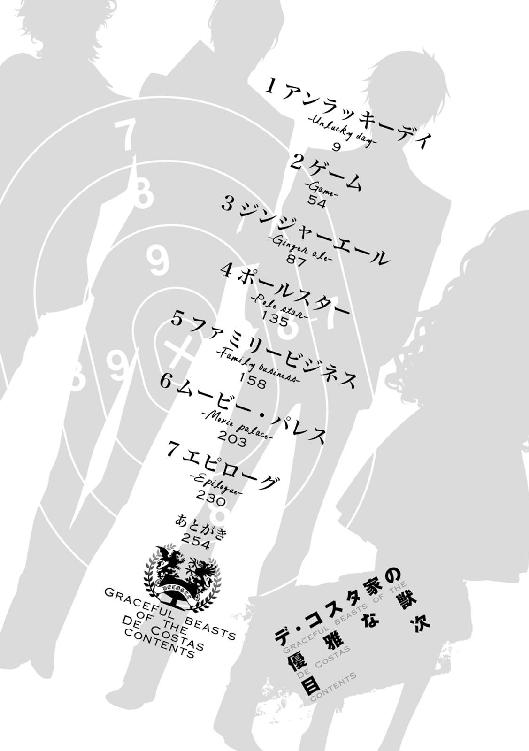

| デ・コスタ家の優雅な獣【期間限定 無料お試し版】<デ・コスタ家の優雅な獣> (角川ビーンズ文庫) | |
| 喜多 みどり | |
| (2012) | |
デ・コスタ家の優雅な獣
喜多みどり

角川ビーンズ文庫
本作品の全部または一部を無断で複製、転載、配信、送信したり、ホームページ上に転載することを禁止します。また、本作品の内容を無断で改変、改ざん等を行うことも禁止します。
本作品購入時にご承諾いただいた規約により、有償・無償にかかわらず本作品を第三者に譲渡することはできません。
本作品を示すサムネイルなどのイメージ画像は、再ダウンロード時に予告なく変更される場合があります。
本作品は縦書きでレイアウトされています。
また、ご覧になるリーディングシステムにより、表示の差が認められることがあります。

イラスト／カズアキ
その血はチョコレートよりも濃くて、ウォッカよりも純粋だ。
（この子の血は呪われてる）
生まれたばかりの我が子を見つめて、女は疲労と激痛によって意識を失いかけていた。
それでもせめて我が子を抱くまでは、と思っているのに、取り上げられた我が子は逆さにして背中を叩かれても、声を上げようとしない。
涙が、産みの苦しみだけではない涙が、女の頰を濡らす。
（女の子だった。この子も私と同じ、デ・コスタの女......）
ぺしゃり、ぺしゃり、我が子が叩かれるたびに揺れる。やめて、いや、息をして、そう願う心のどこかに、諦めの気持ちが芽生えそうになる。
（もう許されないの？ 私たちの血が残ることは、もうないの？）
呪われた血なのはわかっている。自分が、一番、わかっている。
それでも、産むことを望んだ。生まれてきて欲しかった。
どうか、お願い。
「生きて......！」
掠れ、しわがれた声だった。
けれど、まるでそれが聞こえたかのように、赤子は突然、びくりと震えて、口を開けた。
「ほぎゃあ、ほぎゃあ！」
元気な、大きな産声！
女は今度は安堵の涙を流し、細い腕を伸ばして我が子を受け取った。小さな娘は、まだ目も開けられないまま、腕を振り回す。その口に乳を含ませた。
血と羊水を軽く拭われただけの娘を抱いて、女はすすり泣きながら笑った。
「あなたにたくさんの幸運を、ロザベラ。私のロージー......」
ロージーの血はチョコレートよりも濃くて、ウォッカよりも純粋だ。
そして呪われている。
一族の血が一滴、二滴、一筋流れ、海になり、ロージーは生まれた。
呪われた、古くて濃くて純粋な血の海でまるで反逆ののろしを上げるように産声を上げた。
世界のすべてに、抗うように。
自身の呪いを、打ち砕くように、力強く。
１ アンラッキーデイ─Unlucky day─
ロージーは幸運を信じない。
「彼らがあなたのお身内の方たちよ」
だから、施設のシスターがそう言って引き合わせてくれた相手に、ロージーは喜ぶよりも不安を抱いた。
一人は、斜に構えた感じの、赤みがかったブロンドの青年。
一人は、唇を真横に引き結んだ、気難しそうな黒っぽい髪の青年。
子どもたちが滅多に入れてもらえない施設の応接間にいたのは、その二人だった。
赤みがかったブロンドの青年は窓辺に立っていて、黒っぽい髪の方はソファに腰を下ろし足を組んでいる。
ロージーが部屋に入ると、前者は、試すような、何かを確認するような意味ありげな目で彼女を眺め、後者は感情のこもらない目で一瞥した。
彼らはタイプこそ違ったけれど、二人とも自信たっぷりで、他人を全然意識していないように見えた。黒っぽい髪の青年の方はすらっとして背が高く、もう一人はそれよりは上背はないけれど、やっぱり手足が長くてスタイルもいい。スーツだって、ぱりっと恰好良く着こなしている。
一方ロージーは甘ったるい蜂蜜みたいな色の金髪で、ちょっと小柄な十五歳の少女だ。大抵俯いて、青い目を不安げに瞬かせている。人見知りは酷いし、施設の子たちの中にも特に親しい相手はいない。
いつも一人で図書室で本を読んでいる、大人たち曰く「難しい子」だ。
目の前の、堂々たる青年たちと似たところなんて、一つもない。
けれど、唐突に、赤みがかった金髪の方が、つかつかと何歩か歩いて近づいてきた。
ロージーの顔を覗き込み、にっと笑う。
白目が大きくてつり上がり気味の、いわゆる三白眼だったけれど、笑うと愛嬌がある。
ストライプが入ったネイビーのスーツに、髪と似た臙脂系のネクタイを締め、身なりはきちんとしているけれど、その毛先は奔放に撥ねている。
「あんたがロザベラ？ 俺はダリオ、あっちはノア。俺たちは、あんたの従兄なんだぜ」
声は明るく、伸びやかで、彼の性格を表しているようだ。
でも、ロージーにはその明るさは眩しすぎて、思わず一歩後退った。
（こんな恰好良い人たちが、私の身内？）
夢か、それともタチの悪い冗談なんじゃないだろうか。
「あの、何かの間違いじゃないでしょうか」
勇気を振り絞って、ロージーはそう言った。隣でシスターが驚きの声を上げる。
「まあ、何を言っているの。彼らは確かにあなたのお身内の方よ。良かったわね、血縁の方が見つかるなんて！ ずっと捜していてくださったそうよ？」
赤子のロージーがくるまれていたブランケットが決め手になったのだとか、なんだとか、シスターは嬉しそうに語った。
目の前の青年、ダリオは、ロージーの戸惑いをまったく意に介さなかった。
「長いこと捜して、やっと見つけた。俺たちはあんたを迎えに来たんだ、ロザベラ──」
彼はロージーに向かって手を差し出し、
「よろしくな！」
ロージーの手を摑むと、強引に身体を抱き寄せ、ハグをした。
「ひっ！」
他人の熱が突然間近に迫って、男の人なのに爽やかな良い匂いがして、ロージーは目を見開き、喉の奥で悲鳴を上げた。
ダリオはそのロージーの頰に自分の頰を押しつけ、ばんばんと背中を叩く。
「あーっ、良かった、見つかって！ ずっと捜してたんだぜ、俺の従妹！ 俺のロザベラ！」
「お、俺のっ!?」
ロージーだって十五歳の少女だ。いくら身内とはいえ、こんなふうにいきなり見知らぬ男性に抱き締められるなんて！ それだけでロージーは今にも倒れそうだった。
でも、シスターは「良かったわねえ」なんて言って涙を拭うばかりで、全然、まったく、ロージーを助けてくれない。
「あ、あの、くるし、」
ロージーは涙ぐみ、放して、ということを示すために、ダリオの腕を何度も叩いた──不意に呼吸が楽になる。突然自由になったロージーはふらついて、ソファの背を摑んだ。
ダリオの肩をもう一人の青年が摑んで、ロージーから引き離してくれたのだ。
「余計な時間食ってんじゃねえ」
ダークブラウンの髪の青年の声は、ダリオの声よりも低くて、少し掠れ気味だった。
背はたぶん６フィートはあるだろう。肌は白く......よく見ると、びっくりするくらい綺麗な顔立ちをしている。中性的で、睫も長くて、お人形みたいだ。
ブラウンのスリーピースと黒いネクタイが、彼の雰囲気に良く合っている。
名前は、確かさっきノアと呼ばれていた。
彼は人形みたいに綺麗な顔に不機嫌そうな表情を浮かべてロージーを見下ろし、すぐにシスターへ視線を移した。
「我々にはあまり時間がありません。書類の手続きが済み次第、彼女と発ちたいと思います」
「ええ、伺っておりますわ。ロザベラ、すぐに準備なさい」
準備？ ロージーはまだ呆然としたまま、シスターを見た。
シスターは、里親と施設をたらい回しにされてきた面倒な子を一人追い出せるとわかったからか、それとも莫大な寄付の申し出でもあったのか、にこにこといつも以上に上機嫌に笑って言った。
「出発の準備ですよ。あなたは彼らと一緒に、家に帰るのです」
ホールで柱時計がぽーんと鳴って、午後の三時を告げた。
良かったわね、おめでとう、と何度も言われてロージーは施設から送り出された。
年下の子たちは恨みがましい目でロージーを見送った。羨ましいと思われているのか、単に寂しがられているのかはわからなかった。自分を寂しがる人間がいるとは思えないけど。
ノアたちが乗ってきたタクシーで山を降り、駅で急行列車に乗り込んだ。
「あんた、喋んないのなー」
ロージーを捜すために家族がいかに努力を払ったかとか、ロージーに会えて嬉しいとか、両親が死んでしまっていたのは残念だとか、ダリオは色々なことをロージーに話した。
そして、最後にそう言って、ぼりぼりと頭を搔いた。
「......ごめんなさい」
ロージーが彼らと出会って六時間が経過していた。
食堂車から戻ってきた彼らは客車の突き当たりを占拠する、おそらく最上等の部屋にいた。
カーテンは閉められ、汽車がレールの上を走る音と振動の他、ここが汽車の中だという実感はない。
客室のソファに座らされたロージーは、小さくなっていた。
二本のボトルを持ってロージーの向かいに座ったダリオは、くたびれたように溜息を吐く。
「いいけどさー。ちょっとはあんたのこと教えてくんない？」
「............」
ロージーは目を伏せた。
ダリオの話では、ロージーの母・ファビラが、彼らの母・マリアと姉妹なのだそうだ。ロージーの母は結婚を反対されて家を飛び出し、結婚してロージーを産んだものの間もなく夫婦揃って事故で他界し、ロージーは身寄りが見つからず施設で育てられた。
でも、本当はダリオたちがいて、彼らはロージーの存在を知ってから、ずっと捜してくれていたらしい。不幸にも彼らの両親も亡くなっていたが、ロージーはついに見つかって、一緒に暮らせることになった。
会いたかった、デ・コスタは歴史ある裕福な家で、ロザベラは特別な人間なんだ、とダリオは何度もくり返した。
でもロージーには、到底本当のことだなんて思えない。
「......やっぱり、何かの間違いだとしか、思えなくて」
「なんで？」
「私は、何も、かも、あなたたちとは、違うし。似ているところもないし、こんな、だって、何か、おかしい、と思う」
勇気を出して、ロージーは顔を上げた。それでもダリオの目を見ることはできなくて、彼が持つボトルを見つめるようにして、呟いた。
「私に、特別な、幸せなことが起こるなんて、きっと何かの間違いよ」
──は、とダリオは笑った。
「何言ってんの、ロザベラ。あんたにはこれから幾らだって幸せなことが起こるんだ。あんたは、俺たちの従妹で、唯一の、デ・コスタ家の娘だぜ？ あんたが欲しがるものはなんだって与えられる。あんたは小さな国の女王様並みに裕福になれるし、他の誰より自由だ。誰もがあんたを羨む、そんな人間なんだ。あんたは特別なんだよ、ロザベラ。あんたは誰より幸運で、誰より幸福になれるんだ」
......わけが、わからない。
ロージーは、困惑して、言葉を失っていた。
ロージーは三つの里親の家と二つの施設をたらい回しにされてきた。
しょっちゅう、目が気に食わないと叩かれた。ロージーの、青い目が嫌なのだそうだ。それでじっと見つめると、誰もが落ち着かなくなって、ロージーに苛立つ。
だからロージーは相手の目を見るのをやめた。
ロージーは一人でいるのを好むようになったし、これから先、特に楽しいこともなく、幸せなこともなく、ずっと一人で過ごすんだ、人生とはそういうものなんだと思うようになっていた。その真理にすがるようにして、毎日色々なことを諦めて過ごしてきた。
物心ついてから、ずっとだ。
「そんな、急に」
それなのに、急に家族なんて言われても、困る。
裕福な身内が現れて、食べるに困らないどころか、こんなにも特別扱いされて。
「そんな急に困るの」
動揺して、おろおろして、ロージーは首を振った。蜂蜜色の髪が頰に触れた。
「私、困るの。ダメよ、だって、何か悪いことが起こる。こんなこと続くわけがない。私が行ったせいで、あなたたちに迷惑がかかったり、きっと、何か」
「悪いことなんてなーんも起こらねえよ」
自信たっぷりにダリオは言った。彼は鮮やかな手つきでグラスにアイスピックで砕いた氷を入れ、ボトルの中身を注ぎ、さらに別のボトルから柑橘系のジュースらしきものを注いで、マドラーで緩く混ぜ合わせた。
「さ、飲めよ。落ち着くぜ」
ロージーは目の前に置かれたグラスを見つめた。
爽やかなライムの匂いに混じって、何かきつい匂いがする。
（なんだろう？）
断ることもできず、ただグラスを見つめ──突然、そのグラスが脇から取り上げられた。
「ちょ、ノア何すんだ！ それは俺がロザベラに作ってやったんだろ！」
「ガキにジンなんぞ飲ませんなバカが」
取り上げたグラスの中身を氷入れに捨て、ノアはかんと音をさせてグラスを置いた。
「ふざけんな、てめえ......」
「騒ぐな。おまえもガキ扱いするぞ」
それからノアは視線をロージーに向けた。鋭い目で睨まれて、ロージーはびくりと身を竦ませて目を逸らす。
「顔上げろ。俯くな」
ロージーは反射的に背筋を伸ばして顔を上げた。逃れようもなく、真っ正面からノアと目が合う。
ノアの目の色はロージーと同じ青だったけれど、その目の輝きは強くて、人を緊張させる何かがある。
（でも、ううん、凄く綺麗）
透き通って、光の加減で色を変える、青い目。自分と同じ色なのに、ロージーにはその目はとても綺麗なものに思えた。
けれど、ノアは優しくはなかった。
「この先一生そんな怯えた顔で暮らす気か？ それじゃあどこへ行ったっておまえに居場所はねえな」
たった六時間前に知り合ったばかりの相手からずいぶんきつい言葉を投げつけられて、ロージーは怒るよりも驚いて、固まった。
ノアはこれまでほとんど何も喋らなかった──今、ようやく話したと思ったら、これだ。
「今日はもう寝ろ」
「おい、ノア！ 指図すんなよ！ 今日は積もる話もあんだろ！」
「寝ろ、ロザベラ」
ロージーは弾かれたように立ち上がり、奥の扉からあてがわれた寝室に逃げ込んだ。
扉を閉めたけれど、ノアとダリオの怒鳴り合う声が、扉越しに聞こえる。ロージーの心臓はまだどきどきと高鳴っていた。
やがてロージーは扉にもたれたまま、その場に座り込んだ。
（......簡単に、わかっちゃうんだ）
ロージーのほんの少しの言葉と態度で、ノアにはロージーがどんなふうに生きてきたかわかってしまったらしい。
彼の言う通り、ロージーには居場所なんて一つもなかった。いつも何かに怯えて、最悪の予想をして、その最悪の予想より少しましな程度の状況に、ほっとしていた。
（だって本当に何もいいことなんてなかったから）
ロージーは胸に手を当てた。
どきどきと高鳴るこの心臓が送り出すのと、同じ血が、彼らにも流れていると言う。
（私は、もう一人じゃない、の？）
でも──
ばん、と大きな音を立てて、隣の部屋で扉が閉められた。
客室から通路か、あるいはノアたちの寝室に通じる扉だろう。どちらかが出て行って──なんとなく、ロージーはダリオのような気がした──扉を思い切り閉めたのだ。
（でも、怖い）
どくどくと、また不穏な騒ぎを始めた心臓を胸の上から押さえつけ、ロージーは細く、長く、息を吐いた。吐息は不安で震えていた。
膝を抱えて、できるだけ小さく丸まる。
ほんの少しだけ嬉しいけれど、やっぱりそれ以上に不安で、怖くて。
綺麗に整えられたベッドさえ自分のものだとは思えず、ロージーはそのままそこで猫の子のように丸くなって眠った。
ロージーが連れて行かれたのは、ウェストエンドという大都会だった。
施設と里親の家を往復することしかなかったロージーは、都会に出たことがなかった。山を降りた先にある一番大きな町でも人口五千人がいいところで、その数百倍の人間が集まる都会なんて、本で読むばかりだった。
南国を思わせる純白の壁面を持ち、椰子の木で飾られたウェストエンド・ユニオン駅を出て、通りに降り立った瞬間、ロージーは怖くなった。
通りはあまりに広く、長く続いて、しかも何度も別の道と交差している。最新モデルの車が走り、ボブカットの女性たちが頭にぴったりと合った釣り鐘形の帽子を被り、ハイヒールを鳴らして歩いて行く。建物はどれも大きくて、洒落た装飾がされている。
ロージーはその誰の名前も知らないし、ビルや通りの名前さえわからない。
道は無数にあって、人は無数にいて、際限がない。
目眩すら覚えた。
ロージーは車に乗せられ、知らない道を通って、知らない屋敷に連れて行かれた。
丘を登り、山の手に来て、突然緑地が広がったと思ったら、それが敷地の始まりだった。
手入れされた様々な種類の木が立つ、国定公園みたいに広い庭に囲まれた屋敷は、森の中の古城のように、近寄りがたい雰囲気さえ放っていた。
（普通じゃない）
そこはあまりに静かで──鳥の羽ばたきさえ聞こえた。
だから、ロージーは屋敷に入る前に、思わず立ち止まって、空を見上げたのだ。飛んでいったあの小さな影は、もしかしてハチドリだろうか？
そうやって、意識が逸れた瞬間をつかれた。
ダリオが、いきなりロージーの肩を抱いて、ぴたりと寄り添ってきた。
「ひっ、えっ」
驚くロージーに構わず、ダリオはロージーを抱いたまま鼻歌混じりに屋敷へ入り、ダンスでもするみたいに、ロージーの身体を振り回した。ロージーの地味な紺色のスカートが花びらみたいに広がって、ひらひらと大きく翻る。
「や、何す、」
「ほら、そっちが階段室で──こっちが食堂な！ ははっ、頑張れロザベラ！」
ダリオは案内じみたことをしながら優雅にステップを踏んでいく。ロージーはそれに振り回されて、何度も躓きそうになって、そのたびにダリオの腕に支えられた。
ダリオは何が楽しいのか笑っていて、ロージーは困ってしまって今にも泣きそうだった。
不意に、微笑んだダリオの顔が近づいてきた。ふわりとまたあの爽やかな匂いが鼻先を掠める。あ、ダメだ唇にキスされてしまう、とロージーが身を固くした時には、横から伸びた手がダリオの顔面を摑んで、彼の足を引っかけ、床に仰向けに転がした。
「てめえ何すんだよ!!」
背中と頭を打ち付けたダリオは烈火のごとく怒って、自分を転ばせた人物、つまりノアに食ってかかった。ロージーは驚いて息を吞み、ただ隅に退いた。
二人はロージーの存在を忘れたように、激しい言い争いを始めた。
「自分の世話もろくにできないガキが粋がるな」
「てめえこそ自分の力一つろくに制御できねえくせにうるせえんだよ！」
二人は額が触れ合うかというほどに近づいて、睨み合っていた。ダリオは見るからに爆発寸前で、ノアはまだ落ち着いていたが、目つきはいつもより遥かに鋭かった。顔が人形みたいに綺麗な分、その口から罵り言葉が出ると、またなんというか......挑発的だ。
血走った目で、ダリオがノアの胸に指を突きつけて言った。
「いいぜ、てめえが今日を限りにこの世から消え去りたいってんなら望みを叶えてやらあ」
は、とノアはロージーが出会ってから初めて笑った。嘲笑、というやつだったけれど。
「おまえに何ができる？ エミリオの陰に隠れること以外で」
それが最後の一押しになった。
完全に激高したダリオが、ノアの胸ぐらを摑み、固めた拳でその顎を殴りつけようとした。
ノアは腕を上げてそれを受け止め、反対にダリオの腹に右の拳を叩き込んだ。ダリオは身体を二つに折り、ノアがダリオの髪を摑んで──
その時、ロージーの背後で扉がバンと音を立てて開き、突風がホールの中に吹き付けた。
「!?」
風もない日だったのに。
ロージーは風の強さによろめき、背後を振り向いた。勝手に開いた扉の先には、刈り込まれた芝生や植え込みが幾何学模様を描く庭園と、空が見える。摩天楼は木々に隠されて今は見えない。
晴れていたはずの空が、曇っていた。
ぎらり、と。
黒雲の中で今稲光が見えた。
「雷雲......？」
十二月のこの冬の日に、雷なんて本当に落ちるの、とロージーが思った時──
視界で、真っ白な光が爆発した。
同時に轟音が周囲の空気と屋敷全体、そしてロージーの身体を震わせた。悲鳴も上げられないままロージーはその場にへたり込んだ。
光も音も一瞬だった。あとには、ごろごろという唸りと、炎を上げる庭木。そして、一瞬遅れて降り始めた雨。
ロージーは屋敷の中から落雷によって燃える木を見つめ──異様な雰囲気を感じて、背後を、二人の従兄を振り返った。
ダリオの赤みの強いブロンドは、今まで以上につんつんと、天を衝くように撥ねている。見開かれた目を怒りでぎらぎらと輝かせ、歯を食いしばり、仁王立ちで拳を震わせていた。
そして、何故か彼の周囲では、ぱちぱちと光るものが舞っている。火花、かと思ったが少し違う。もっと明るい──放電、だろうか？
光はダリオの目を照らし、灰色に見えた目は、今は淡いライムグリーンに色づいていた。
光をまとわりつかせたまま、ダリオは言い放った。
「次はてめーに落とす。謝罪して撤回しろ」
その宣言に、対峙するノアは薄ら笑いを浮かべたまま小首を傾げた。
「へえ。俺に落とすには──」
ノアが何か言いさし、突然、ダリオを取り巻くように、その足下に炎が上がった。
炎は円を描いてダリオを閉じ込め、さらに寄せ木細工の床の上を燃え広がって、壁紙にまでその舌を伸ばす。
青かったノアの目が、炎を映して赤い。
彼の口元が、凄みのある笑みを描く。その笑みが、ロージーには炎より恐ろしく見える。背筋がぞくぞくするような、美しくて、危険で、恐ろしい笑み。
「──屋敷が邪魔みてえだから、なくしてやるよ。屋敷が燃え落ちるまでおまえが生きていたら、雷でもなんでも、好きに落としな」
それを聞いて、ダリオはせせら笑って、何か言い返した。
ロージーは今すぐ逃げ出したかったが、腰が抜けて動けなかった。
「は......っ、はっ、あっ」
呼吸が浅く、身体に力が入らない。
何が起こっているのか、ロージーにはまったくわからなかった。
晴れていたはずの空が突然曇ったと思ったら、雷が落ちた。火の気のなかったところから、いきなり炎が上がった。ノアとダリオの言い争いは殴り合いになって、それから──？
（何を、言ってたの、この人たち）
雷を落とす？ 屋敷をなくす？
ただの人間がそんなことできるはずがないのに。突然雷が落ちて炎が上がったけれど、それは何か他の原因があったからで、人間が、ノアとダリオが何かしたからとかでは、絶対にないのに。
ないはずなのに。
（人、じゃ、ない？）
は、と呼吸が激しく、速く、浅くなる。苦しくて、煙が目に染みて、ロージーはエンジン音が近づくのも聞いていなかった。
だから、背後から、パンパン、という手を叩く音が聞こえた時は、飛び上がるほど驚いた。
振り返ると、見知らぬ男性が立っていた。
灰色がかったブロンドをオールバックに撫でつけた、二十代と思しき男性だった。銀縁の眼鏡の向こうで、灰色の目が理知的に、少し物憂い雰囲気で輝く。グレンチェックのスーツを着て、磨き抜かれた黒いストレートチップの革靴を履いていた。
「おやめ」
男性は、口元に微笑を湛え、それだけ言った。
睨み合っていたダリオとノアは、互いから視線を逸らし、新たに現れたその男性を見やった。
「ノア、炎を消しなさい」
男性がそう命じると、ノアは僅かに眉間に皺を寄せた。
けれど、その直後、壁紙を天井に向かって駆け昇っていた炎がかき消えた。焦げた痕と臭いと煙はそのままだが、熱と炎は突然に失われる。
まるで、魔法みたいに。
ロージーはその言葉に行き当たって、それまで以上に愕然とした。魔法？ 魔法みたい？
まさか。
ラジオが世界情勢を伝え、レシプロエンジンを積んだ飛行機が海を横断する、この時代に？
世界中の謎という謎は大抵解明されて、不思議なことはすべて科学で説明がついたか、あるいは説明を待っているだけの段階で、つまりは魔法なんてものが存在する闇はない。
すべてが科学の明るい光で照らされた現代なのだ。
（でも、じゃあ、これは何？）
ロージーの知識と常識では、目の前の事象を説明できない。
変わらぬ表情のノアと違って、ダリオは苛立ちを露わにしていた。
「てめえはすっこんでろ、エミリオ」
エミリオと呼ばれた男性は、笑みを深くした。面白そうにダリオを眺め、帽子を脱いで両手を広げる。
「なんだい、私のダリオ、愛すべき弟。随分ご機嫌斜めだね。お帰りのキスもさせてもらえないのかな？ いや、君らの方が先に帰ってきたから、ただいまのキスかい？」
「てめえ、ふざけ......」
「ふざけてるのはどっちだい」
カツカツと足音高く、大股で、エミリオはダリオたちに歩み寄った。ダリオの手首を摑み、捻り上げ、顔を近づける。表情はロージーからは見えなかった。
「......この十二月に落雷？ ありえない。おまえの仕業だ。何があったか知らないが、何があったとしても、そんな軽はずみが許されると思っているのか？ たかが兄弟喧嘩で？」
「っ、こんなやつが兄貴だなんて俺は認めてねーよ、てめえもだ、エミリオ！」
ダリオはエミリオの手を振り払い、彼の胸に指を突きつけた。
「てめえみてえな《半端者》、俺は認めねえ。誰がてめえの下でおとなしくしてるもんか！」
「今に見てろ、ということかな？ そんなこと言うものじゃないよ。私の背中を狙いたいなら、黙ってナイフを突き立てなさい」
呆れたように天を仰いで、エミリオは今度はノアに向き直った。
「煽られたからと言って、手を出すんじゃないよ。世話が必要な子どもは一人で十分だ」
「！ 誰のことだコラ！」
ダリオがエミリオの胸ぐらを摑んだが、エミリオは好きにさせていた。
「ノア、次に考えなしに何かを燃やすようなことがあったら──覚悟しておくんだ。君はすでに一度やってるんだからね。もう一度アレを起こしたいってわけでもないだろう？」
（アレ？）
ノアの頰に力がこもったように見えた。
唐突に、エミリオはかかとでくるりと振り返って、ロージーを見た。
平静な、熱の籠もらない目でロージーの全身を一瞥し、頷く。
「怪我はないね。じゃあ立ちたまえ。いつまでもそんなところに座っているものじゃない」
そう言って、ロージーの手を摑んで立たせた。埃を簡単に払われる。
「驚かせてしまったかな？ まあ、いつもこうというわけでもないよ。今日はきっと弟たちも虫の居所が悪かったんだろう。安心なさい。君の部屋を用意した。すぐに案内──」
「あ、あの、」
戸惑い、たじろぐロージーを見て、エミリオはふと気づいたように自己紹介をした。
「そうそう、忘れていた。私はエミリオ・デ・コスタ。君の従兄で、この弟たちの兄だよ。君に会えて光栄だ、美しい従妹殿──」
「わ、私、」
ロージーは何を言っていいかわからなくなって、口をぱくぱく動かして俯いた。
結局、小さな声であまり意味のないことを呟いた。
「私、美しくなんか、ありません......」
ぷ、とエミリオが噴き出した。肩を震わせる。
「いや、失礼。おかしなことを言うね。さあ、部屋に行こう。君も気に入ってくれるといいが」
「あ、でも、」
行きたくない──ロージーはそう感じていた。
汽車を降りた時や駅から出た時に感じた漠然とした不安や恐怖よりも、今はもっと明確に、怖い、と思った。年若い兄弟たちの争いも、吹き荒れた風も、十二月の落雷も、突然燃え上がり、消えた炎も、この長兄も、そしてあの騒ぎがあったにも拘わらず誰も出てこない、静かで不気味な屋敷自体も、恐ろしかった。何かよくないことが待っている気がした。
けれど、エミリオはロージーの肩を優しく抱いた。
「怯えることはないよ。私たちは家族になるんだ。何、戸惑うこともあるかもしれないが、直に慣れる。必要なものはすべて用意させよう。私たちに、あるいは屋敷の誰かに言ってくれ」
「でもっ！」
ロージーは自分でも思っていなかったほど大きな声を上げた。
けれど、怯え、揺れるロージーの目を見つめ、エミリオは笑った。
彼の目が笑っていないことに、ロージーはようやく気づいた。
「もう施設には戻さないよ」
ぞっとして、ロージーはよろめいた。後退ろうとした。目の前の従兄だという男を突き飛ばし、逃げようとした。悲鳴を上げ、助けを求めようとした。
でも、エミリオは強い力でロージーの腕を捻り上げ、彼女を無理に二階へ連れて行った。
もがいたロージーは、他の二人の兄弟を見た。
ダリオは苛立たしげに屋敷を出て行くところだったし、ノアはただ冷たい目でロージーを見ているだけで、何を考えているのかわからなかった。
「どうして......」
自分に与えられた部屋を一目見て、ロージーはそう漏らした。
部屋にはクリームイエローの壁紙が貼られ、アンティークな猫足の椅子、天蓋付きのベッドと書き物机、鏡台、クローゼットなど、必要なものはすべて揃っていた。
そして、窓には鉄格子。
「私も、できれば穏便にいきたかったんだがね」
エミリオは、ロージーの肩を抱いたまま、耳元でそう囁いた。
「あの兄弟喧嘩を見てしまっては、君も怯えるだろうと思ってね。実際君はさっきからずっと震えているし。もう一つ、別に部屋を用意していたんだが......まあ、こちらの方が、いいだろう。お互いにとってね」
「どういうこと？ あ、あなたたちは私の従兄ではない......の？」
「いや、従兄だよ。君の母親と私たちの母親は姉妹でね、それは仲の良い姉妹だったそうだが──まあ、それはいい。とにかく血のつながりはある。だから私たちは君を連れて来たんだ。......君には、デ・コスタの血を残してもらわないといけない」
（血？ 三人も男の人がいれば、私がいなくても血は残るのに）
ロージーが見上げると、エミリオは首を傾げ、苦笑した。
「うん、君が何を考えてるかはわかる。そうだな、君も見ただろう、あの落雷と炎──うちの弟たちは滅多なことじゃあんな騒動は起こさないんだが、今は気が立っているみたいでね。あれを、我々は単に《力》と呼ぶ。魔法のように見えただろうけれど、魔法ほど万能じゃないよ。《力》は私たちの血筋に宿っている。ただし、父系遺伝ではない」
......ロージーは呆然としていたが、エミリオが言いたいことは、なんとなく、わかってきた。
エミリオはロージーの心を読むように頷いた。
「そう、母系遺伝だ。一族の女にしか、《力》ある子は産めない。私たちが幾らよその女と子を作っても、一族の《力》を受け継いだ子は生まれないんだ。君の血が必要なんだよ、ロザベラ。君には私たちの誰かと契って、《力》ある子を産んでもらわないといけない」
君が見つかって本当に良かった、とエミリオは屈託なく笑った。
要するに、子を作るための道具だ。
ロージーは与えられた部屋で床に座り込み、ただ暖炉の中で躍る炎の揺らめきを見つめていた。
（私はそのために連れて来られたんだ......）
ロージーは十五、初潮は来ている。子どもは産める。彼らがそこまで狙ってやったのかどうかはわからないが、このままではいずれ三人の誰かと結婚させられる。
あの、魔法のような、特別な力を持った子を産むために。
雷雲を呼び寄せ、炎を生んだ兄弟の姿を思い出し、ロージーは寒気を覚えて我が身を抱いた。
あれを見て、ロージーは思ったのだ。
人じゃない、と。
（私は、人じゃない子どもを、産まされるんだ）
ぞくぞくと寒気は酷くなる。暖炉は目の前にあって顔は熱いくらいだったけれど、背筋は寒さを覚えていた。歯の根が合わないくらい、震える。
ロージーはいつも色々なものを諦めて生きてきた。友人、家族、理解者、どれもいたことはない。ここに連れて来られた時も、愛されることを期待していたわけではない。ただ流されるように、連れて来られただけだ。
でも、諦めの気持ちよりも、今は恐怖が勝った。
（怖い）
エミリオは、結婚相手が決まるまではこの部屋にいてもらうと言っていた。
結婚相手が決まったとしても、状況が好転するわけじゃない。結婚式が挙げられて、自由を奪われたまま、ロージーはここで暮らすことになるのだろう。
（どんな力を持つ子が生まれるの？ 炎を操ったり、風を起こしたり、もっと酷いこともあるの？ 私はその子を無事に産めるの？ 母親の腹を食い破って生まれてきたりはしないの？ でも、そんな、そんなの人じゃない。そんなの、）
化け物──
どくんとロージーの心臓が大きく跳ねた。
涙はいつの間にか流れて頰を濡らし、ぱたぱたと膝の上に落ちてスカートに染みを作った。
クローゼットには大量のドレスが用意されていたし、着心地の良さそうなガウンや寝間着もあったけれど、ロージーはそのどれにも手を付ける気になれず、施設から着てきたブラウスと紺色のスカートのままだ。荷物も部屋の隅に置いたまま、荷ほどきもしていない。
下腹部に手を当てた。あの三兄弟の誰かの子をこの腹に宿さなければならないと、エミリオは言っていた。三人のうちの誰の子であっても、そんなのは恐ろしくて仕方なかった。
（逃げなきゃ）
顔を上げ、床に手をついて身体を起こした。食事はテーブルに用意されていたけれど、喉を通らず放ってあり、そのせいか手足にうまく力が入らなかった。
窓を調べたが、格子はロージーの親指よりもずっと太くて、とても折れるとは思えなかったし、扉も外から鍵がかかっていた。無理に鍵を壊せば開くかもしれないが、音に気づかれたら終わりだ。
（何かないの？）
埋められた扉でもないかと壁に張り付いて調べ始めたが、途中で諦め、壁にすがりつくように膝をつき、その場に座り込んだ。
「無理に決まってる......」
だって、逃げた先は？ 施設に戻るとしても、どうやって？ 切符は？ クローゼットの毛皮でも売れば金は手に入るけれど、ロージーのような少女が売りに行けば絶対に怪しまれ、通報される。
（！ そうだ、警察に行けば......？）
これは立派な監禁だ。家族の中でのこととはいえ、警察も動いてくれるかもしれない。
ロージーが一縷の希望にすがって立ち上がろうとした時──
かちゃかちゃ、という微かな金属音が、壁の向こうから聞こえてきた。
何事かと近づいた直後、目の前の壁からナイフの刃先が突き出てきた。
「！」
ロージーは危うく悲鳴を上げそうになったが、ナイフの慎重な動きを見て、なんとなくそうしてはいけない気がして堪えた。
距離を取って見守ると、壁の向こうから突き出たナイフは、壁紙を扉の形に裂いた。
かちゃり、という小さな音を立てて、壁が──いや、壁紙に隠されていた扉が開いた。
そして、扉から入ってきたのは、ロージーよりも小さな、十三、四歳くらいの少女だった。
少女は口元に指を当て、ロージーに黙っているように指示すると、部屋を覗き込み、隅にある鞄を指さし、ちょいちょいとロージーを手招いて、また元の部屋に戻って行った。
ロージーは迷ったが、思い切って、鞄を持って少女に続いて隣の部屋へ入った。
隣室は暗かった。
窓が開いていて、月明かりが部屋を照らしている。寒さに、ロージーは身震いした。
少女は、声を潜めて囁いた。
「逃がしてあげる」
「でも......」
あなたは誰なの、とロージーは問おうとしたけれど、少女は口元にもう一度指を当て、静かにするように命じて、窓の外を指し示した。
窓のすぐそばに、枝を張った庭木が迫っていた。
少女はロージーに手本を見せるように、先に立って窓から身を乗り出し、枝を伝って幹にたどり着いた。腕を大きく振って、来い、と言っている。
「............」
迷っている暇も、問答している余裕がないのも、わかった。
（このまま、ここに閉じ込められてるよりも悪いことなんか、きっとない）
ロージーは唾を飲み込み、鞄をしっかりと片手に抱えて、窓から身を乗り出した。
風が茂みや木々の葉を揺するたび、ロージーはびくびくと震え、少女は慎重に辺りを窺い、先を急いだ。一度犬に見つかったけれど、少女が持っていた骨を放ってやり過ごした。
「あなたは、誰なの？」
屋敷から十分離れた木々の間で、ロージーはそう尋ねた。
少女はちらっとロージーに目を向けて、月夜に輝く目を瞬かせて答えた。
「あたしはルチア。あなたを逃がすように言われた」
「誰に？」
「偉い人。伝言があるよ。警察には行くな。施設には戻るな。どちらもすぐにデ・コスタの手が回る」
「！ そんな、じゃあどこへ行けって言うの？」
「手配してる」
ロージーは敷地を出る前にさらに問い詰めようとしたが、少女はまた口元に指を当て、立ち止まった。ロージーも息を殺して、耳を澄ます。人の足音が聞こえ、遠ざかった。
少女は息を吐いて、また黙ったままロージーを手招きする。ロージーも、従うしかなかった。
やがて少女は敷地と公道を隔てる塀の前に来て、立ち止まった。
入った時は気づかなかったが、石積みの塀は高く、上には有刺鉄線が巡らされていた。
有刺鉄線の一部は切れて、そこからロープが垂れている。
少女はまた先に立って塀を越えた。
ロージーは屋敷がある方を振り返ったが、もう屋敷は木々に隠れて見えない。
少女の声に呼ばれて、思い切ってロープを摑む。
有刺鉄線にスカートの裾を引っかけながらも、ロージーは塀の向こう側に降りることができた。
離れたところに街灯が点っているけれど、そこはちょうど塀と木々の影になって暗い。
先に降りていた少女は周囲を見回している。
「あのバカ」
少女はさらにロージーの知らない罵り言葉を呟いて、爪を齧りだした。
ロージーが問いかけようとした時、少女は突然顔を上げ、ロージーを見やって言った。
「用意してた足がなくなった。ここで待ってて、なんとかしてくる」
「!? な、なんとかって......」
「なんとかだよ！ 盗むなりなんなりしてくる。だから待ってて！」
盗むなんて！ とロージーは叫んで少女を止めようとした。自分より年下の子に罪を犯させて逃げるなんて、ロージーには考えられなかった。
でも、少女はさっと身を翻すと、街灯の明かりの方へ駆け出していく。少し下れば、幅の広い大通りに出るはずだ。そこで車を調達するのだろう。
「あの子、運転できるの......？」
ロージーは我に返ってそう呟いたけれど、少女の姿はもう見えなくなっていた。
......その直後、微かなエンジン音が聞こえて、ロージーは振り向いた。
夜、必ず車がつけるはずのライトは見えない。
でも、二本向こうの街灯の下を、今黒い車体が光を反射して通り過ぎた。
「！」
ライトを消した車が、ロージーに向かって迫る。ルチア、と名乗ったあの少女じゃない。速すぎるし、逆方向だ。車は屋敷の正面口の方から来たのだ。
ロージーに気づかれたことがわかった途端、車はギアを変え速度を一気に上げ、ロージーを塀とバンパーの間に挟み込みかねない勢いで迫った──でも、車はロージーにぶつかる手前で音を立てて停まった。
座り込んでしまったロージーを、今更のようにライトが照らした。
そして、車から降りてきたエミリオが、真夜中とも思えない、グレンチェックのスリーピーススーツ姿で、にこやかな笑顔を見せた。
「やあ、従妹殿。夜の散歩かい？」
「............」
「ん？ 何か言ったかな？」
ロージーはエミリオの眼鏡の縁がライトを反射するのを見つめ、震える声を絞り出した。
「......し、施設に帰して、ください......」
「ははっ」
勿論それは無理なんだ、とエミリオは上機嫌で言った。
夜中の一時を過ぎているというのに、屋敷中のすべての明かりが灯されたようだった。
明るい屋敷に戻ってきたロージーは、ホールのシャンデリアの下で膝をついた。
「おや、そんなところで寝る気かい？」
エミリオは、座り込んだロージーを困り顔で見下ろした。
あの鉄格子のある部屋に戻れば、もう二度と出してもらえない気がした。
だってロージーは逃げ出した。エミリオは容赦しないだろう。
「あ、あの部屋には戻りたく、ありません......」
ロージーはつっかえつっかえ、必死でそう言った。
「戻りたくない、と言ってもね。君はやはり逃げ出したいくらい我々が嫌なようだし、他に手はないだろう？ それにしても、どうやって抜け出したんだい？ よくあの扉を見つけたものだ。あれはね、模様替えの時に埋めてしまっていたんだよ。......誰か、手助けする人でもいた？」
ロージーは内心ぎくりとしたけれど、少女の素性がどうであれ、巻き込むわけにはいかなかったから、ただ俯いたまま首を振った。信じたのかどうかはわからないけれど、エミリオはそれ以上詰問はしなかった。
「あ、あの部屋が嫌なんです。鉄格子なんて、ろ、牢屋みたい......」
「牢屋はもっと狭いし居心地が悪いよ」
お望みならもっと狭くて居心地の悪いところに押し込めてあげようか、とでも言いたげな口調だった。
「何、落ち着いたら、護衛付きで外に出るくらいは許してあげられるよ。君がこれ以上逃げようとしなければね」
「どうして......」
ロージーは思わず顔を上げた。泣き顔でエミリオを見つめると、エミリオは僅かに眉をひそめたようだった。たぶん、ロージーが泣いているからじゃない。ロージーの目を見たからだ。
嫌な目だと何度も言われてきた目でエミリオを見上げ、ロージーは言った。
「どうして、こんなことを......」
自分でも何について言っているのかわからなかった。
どうして自分を閉じ込めておくのかと言えば、それはロージーが逃げるからだし、彼らにはロージーの胎が必要だからだ。どうしてこんなことができるのかと言えば、それはロージーがエミリオにとって道具に過ぎないからだ。
答えのわかりきった問いを、それでも押し出した。
エミリオは笑みを深めた。
「君はなかなか利発な子のようだから、勿論その問いへの答えはわかっているだろう？ けれど感謝して欲しいくらいだね。これでも我々も穏やかなやり方を好むようになったのだよ。以前なら、結婚なんて形式も踏まなかったかもしれない。式を挙げ、君をただ一人の男のものにするのは我々の優しさだ。君が女児を産めば、我々は誰かの息子と君の娘を結びつける。この先、たぶん我々は血の濃さにまたしても悩まされるのだろうが──」
肩を竦める。気楽な様子に見えた。
「その時はその時だ。幸いと言うべきか、君の父親は一族の男ではないし、我々にはまだ時間が残されているはずだ。言っている意味はわかる？ 血族結婚のくり返しだったけれど、君の母親が駆け落ちなんてバカなことをしたおかげで、ほんの少しよその血が混じった。それが結果的には良かったかもしれない......そういうことだよ」
「......、母は、」
ロージーはエミリオの言葉から悟った。
「母は、あなたたちから逃げたのね」
「そうだよ」
エミリオはあっさりと肯定した。
「君の母親は愚かにも一族の男ではない人間と契ろうとした。彼女はそいつと駆け落ちし、行方をくらませ、しばらく後に見つかった時はもう君が生まれていた。まあ、その時ちょっとしたごたごたがあってね、夫婦揃って死んでしまった。我々は君の存在に気づけないまま時を浪費し、一族の女を捜し──君を、見いだした。彼女は君を隠していたんだ。君の出自を偽ってね。でも勿論、我々が本気になれば見つけられない相手はいない。君がこの先どこへ逃げたとしても、追いかけて見つけ出してあげるよ」
君の母親を見つけたようにね、と言って、エミリオは笑った。相変わらず、目は笑っていなかった。
今ならロージーにもわかる。母は逃げたし、自分が産んだロージーも逃がしたかったのだ。この呪われた一族から遠く、離れたところへ置いておきたかった。
でもロージーは見つかった。
「さあ、立って」
エミリオは紳士的な態度で彼女の前に膝をつき、手を差し出した。
（私は部屋に連れて行かれる。そうしたらもう外には出られない。式と、何かの用事の時しか、きっと出られない。あの部屋で、恐ろしい力を持った子どもを身ごもって、産むんだ......）
「必要なものはなんでも揃えてあげるよ。おとなしくついておいで」
エミリオが猫なで声で言う。もう少ししたら、きっとしびれを切らしてロージーを無理に階上へ連れて行く。
（いやだ、私は彼らの誰とも結婚なんかしたくない。子どもも産みたくない）
親が夫を決め、結婚式を挙げさせるのは、一般的な話だ。よく知らない相手と結婚するだけなら、ロージーはさほど抵抗しなかったかもしれない。三兄弟は何十歳も年上というわけでもない。
おそらく、エミリオもいきなりこんな事態になるとは考えていなかったに違いない──ゆっくりとロージーを甘やかし、油断させ、誰かの妻として結婚させる。その時まで《力》のことも血のことも隠しておけば、ロージーはただの幸せなよくある縁談だと思っただろう。
でも、ロージーは知ってしまった。
兄弟の、あの途方もない《力》を。
彼らの人ならぬ《力》を。
そして、濃すぎる血を。
自分たちは従兄妹で、従兄妹同士は結婚できるけれど、彼らはさらにロージーの娘と自分たちの子どもを結婚させる気で、つまりは長い間、そうしてきたのだ。ひょっとしたら、過去にはそれ以上に近い血筋での結婚すらあったかもしれない。
ロージーの身体に流れる血も濃いものに違いないし、この兄弟たちはそれ以上だろう。
（それにエミリオは私を人として扱っていない）
ただの道具、ロージーの感情も涙も余計なおまけくらいにしか思っていない。
（逃げなきゃ）
あの窓に鋼鉄がはめ込まれた部屋に戻れば、きっともっと監視は厳しくなって、逃げ出す機会は失われる。
「わ、私」
ロージーは拳を握り、見えない何かをその手に握りしめるようにして言った。
「私、あ、あそこには戻らない。逃げないから、もっと、きちんとした窓のある部屋に移して」
「......君の言葉を信じろと？」
「し、信じてもらえるように頑張る。どうしたらいい？ どうしたら、信じてもらえる？」
逃げるためには、せめて、せめてもう少し自由が欲しい。あの部屋では、ダメだ。
エミリオは形の良い頭を傾げた。眼鏡の奥で、灰色の目が考え込むように細められた。
「ファミリーの一員になればいい」
答えはエミリオの背後、二階に上がる階段の方から聞こえてきた。
ロージーとエミリオはそちらを見た──白大理石の階段の中程に、ノアが立って手すりに肘をついてこちらを見下ろしていた。夜中を過ぎているのにエミリオ同様寝起きには見えない。
「ファミリーの？ 彼女が我々の仲間になるということかい？ 前から思っていたが、おまえは正気かい、ノア？」
ノアは暗い目をエミリオに向け、あの掠れた、低い声で囁くように言った。
「あんたと同じ程度にはな、エミリオ。そいつが信頼を勝ち取りたいって言うんなら、そうさせてやれ。他の男たちにするように、そいつを試してやればいい」
「ロザベラは女だ。ファミリーには男しか入れない」
「だがそいつはデ・コスタの娘だ。そいつが自分の名誉を守りたいって言っているんだ。機会だけでも与えてやれよ。デ・コスタの人間の名誉は守られるべきだ──そいつが女であれ」
「彼女の名誉は我々が守ればいいじゃないか」
「じ、自分でっ」
ロージーは、目の前に垂らされた一本の細い糸にすがりつくように言った。
「自分で守りたいっ、私っ、私自分で、自分の名誉を、守りたいっ」
何を言っているかわからないまま、そう言った。そう言わなければ、もうチャンスはないのだと感じていた。
エミリオはロージーを見つめ、少し考えたのちに、彼女に静かな声で命じた。
「ついてきなさい」
エミリオが入ったのは一階にある書斎だった。
隙間なく大量の本が詰まった棚が、壁一面を埋めていた。何千、何万という蔵書があるようだ──しかも、どうやら奥には書庫もあるらしい。
壁は本で埋まっていたが、部屋は広々として、狭苦しさは感じられない。
古い紙の匂いがする静かな部屋だった。
けれど、似つかわしくない異物が一つある。
デスクの上に置かれた、青みがかった色に輝くオートマチックピストルだ。
デスクの引き出しからそれを取り出したエミリオは、その横に弾倉を置いた。
銃把は、ロージーの方を向いている。
「我々はね、ある組織を作っている」
エミリオは、デスクの向こうで椅子に深く腰を下ろし、足を組み、そう言った。紙巻き煙草に火を付け、煙をさしてうまそうでもなく吸い込み、吐き出す。
「秘密結社のようなものだよ。主に貿易とか流通の仕事をしている。他にも、色々と......まあ、必要とされる仕事をね。この仕事には何より信頼が必要だ。我々は信頼できる仲間と仕事をしたい。だから、組織の成員には、何より忠誠を求めている──仲間への、組織への忠誠だ。国家が公務員に忠誠を求めるようなものさ。我々の場合はそれ以上だ。わかるかい？」
ロージーは自分が問いかけられていることに気づいて、微かに、首を縦に動かした。
「そう、良い子だ。そういうわけだから、我々は仲間の選定に非常に慎重だ。組織への忠誠がいかほどのものか、しっかり見極めなくちゃいけないし、そいつが本当に我々の役に立つか、調べないといけない。そのために我々はテストをしている。さっきノアが言ったのは、そういうテストのことだ。ノアは、君にテストを受けさせ、我々の組織の一員にしろと言ったのさ。そうすれば、我々は信頼で結ばれるからね」
ノアは同じ部屋にいて、けれど扉にもたれて立ったまま、話に口を挟むようすはない。
ロージーは胸騒ぎがしていた。
これは絶対によくないことだ、と頭のどこかで警告が聞こえる。
エミリオが、何の説明もなしにいきなりデスクの上に置いた拳銃が、その証明だ。
「......ロザベラ。君は、このテストを受ける気がある？」
けれど、ロージーは、また小さく頷いた。
紫煙と一緒に溜息を吐きだして、エミリオは頰杖をつき、ロージーの、俯いたままの顔を覗き込んだ。
煙草を灰皿に押しつけて消し、その手で、デスクの銃をロージーの方に押しやる。
「我々の組織に裏切り者がいる。君が彼を見つけ、この世から消してくれたら、私は君に、自分の、そして我々の名誉を守るだけの力があると信じよう。我々のために他人の命を捧げられることをその行動で示すんだ。できたら君は我々の仲間だ。我々は固い絆で結ばれる」
何の温度もない声で、エミリオは言った。ロージーは目を丸くして、身を竦ませ、彼が自分に押しやった銃把を見つめた。
長い時間が経って、ロージーがおそるおそる伸ばした指先に触れた銃把は、冷たく、心まで冷えるようだった。
「ノア。ダリオはどうしたんだい」
「俺が知るか。いつもの夜遊びだろう」
ロージーを部屋に帰したあと、エミリオは書斎に戻った。書架の前にはまだノアがいて、分厚い本のページを気まぐれのように繰っていたが、エミリオが入ってくると本を棚に戻した。
「話がそれだけなら、俺は戻る」
話があるから待っていろと引き留めたのはエミリオだった。エミリオは素っ気ない弟の態度に苦笑し、ソファに腰を下ろした。
「なんだってあんな助言をしたんだい？」
「信頼されたいとロザベラが言ったからだ」
「お優しいことだ。それで彼女にテストがクリアできるとでも？」
「俺は提案しただけだ。選んだのはやつだろう」
「............うーん」
エミリオは、頰杖をついて、眠たげな目で弟を見た。
先代当主であった彼らの父が死んで、二ヶ月が経っていた。
三兄弟の父は七年もの間寝たきりで、意識もろくに回復しないような状態が続いていたから、死のずっと前から、エミリオが当主のようなものだった。
異能の血筋は、時に激しい迫害に遭う。
だから一族は代々地下に潜ってきた。名誉と誇りを守るため、あえて表舞台に立つことを避け、裏社会の王として君臨してきた。身を潜め、密かに力を使い、恐れられるように。蔑まれるのではなく畏怖の目で見られるように。
今やこのウェストエンドで、彼らの目を逃れられる者はいないし、彼らの関与しない犯罪もない。正規の商売にすら、彼らは口を出すことができる。
デ・コスタ・ファミリー。
彼らは、アルゴ合衆国最大の繁栄を誇るウェストエンドに、政府よりも深く、強く、根を張っている。
その主である男が、弟に笑みを含んだ目を向ける。
「おまえ、わざとダリオを挑発したんじゃないかい？」
「どうして俺がそんな面倒なことをするんだ？」
「だって、そのおかげで私は今ちょっと彼女に手こずってる。彼女は知らない方が良かったんじゃないかな、我々の、《力》について。まあ、おまえがあの子にそのことで警告したかったとしたら、理由はわからないでもないけれど。ほら、ねえ、あの子はちょっとうぶみたいだし、おまえは可哀想になっちゃったんじゃないかな」
ノアは何も言わなかった。苛立ちを露わにした青い目で、ただエミリオを見つめ返す。
エミリオは肩を竦めた。
「なあんてね、冗談だよ。おまえがいくら優しい気性の子どもだったからって、それはない。今じゃおまえだって、立派なデ・コスタの男だし──おっと、だから今怒っているんだな、私がおまえを侮辱したと？ そんなつもりはなかったんだけれどね」
しばらく、エミリオはノアを見つめた。ノアとロージーは同じ目をしていた。青い、美しいガラス玉を眺め、長兄は唐突に話題を変える。
「ねえ、ノア。ロザベラは美しい子だね」
何も言わぬ弟に、ただ滔々と語る。
「いつも俯いているのが勿体ない。もっと着飾れば──いや、着飾らなくても、彼女は美しいよ。儚げで、柔らかそうで、まるで人形みたいだ。白い肌に、小さいけれど苺みたいに赤い唇、薔薇色の頰、潤んだ目......そう、あの目だね。青い目だ。光の加減で色を変える。矢車草のように鮮やかにもなれば、海のように深くもなる。引き込まれそうな、何もかも見透かされそうな目だ。支配したくなる目だね。庇護欲をかき立てられるんじゃないかい？」
「庇護欲？」
それまで黙っていたノアが、唐突にそう聞き返した。冷めた目で、兄を見返す。
「あれは牙と爪をきちんと持った、小さな肉食獣だ。まだ寝てるだけで、そのうち起きる」
「へえ、何故そんなことがわかるんだい？」
「あれもデ・コスタの女だからだ。あんたが思っているよりも、デ・コスタの女はしたたかだよ、兄上」
......ノアが出て行き、扉が静かに閉まるのを待って、エミリオは、ふむ、と唸り、首を傾げた。
「君が思っているよりも、長男は大変なんだよ、ノア」
独りごちたそれを聞く者はいなかった。
２ ゲーム─Game─
初めて手にした銃は重くて、手首が痛くなった。
新しく連れて行かれた部屋には鉄格子はなかった。元の部屋とは廊下を挟んで反対側にあって、こちらからは海と、ウェストエンドの街並みが見える。
ロージーは、自由だった。
（......逃げられる、の？）
一夜明け、ベッドから這い出したロージーは、大きく窓を開け、吹き込む風を顔で受けた。
初めて見る海は広々として、空の青とはまた違った濃い色が、太陽の光を反射していた。船が幾つか浮かんでいる。
ロージーは昨夜のエミリオの言葉を思い出していた。
エミリオたちの......デ・コスタの組織は貿易業をしていて、船を持っている。
エミリオは適当にぼかしていたが、要するに、密輸のための船だ。
船には酒を始めとする禁輸品が載せられていて、それを色々な方法で陸に揚げる。あるときは夜中にモーターボートで沖合の船から海岸までこっそり運び、あるときは缶詰の中に潜ませて。普通の漁船も使う。
詳しいやり方は教えてくれなかったけれど、そうやって、警察や運輸省の目をごまかしているのだそうだ。
けれど、その密輸方法についての情報が漏れているらしい、というのを、エミリオたちは警察内部にいる協力者から聞いた。
『結構不正確な情報も多くてね、逮捕者は出していないんだが──放っておくことはできない。どのような質のものであれ、情報を漏らすことは許されないからね。それは我々への裏切りというものだ。裏切り者がどうなるのか、きちんと示しておかないと』
君もそう思うね、とエミリオは念を押すように言った。殺せ、とは結局一言も言わなかった。
ただ、その裏切り者が消えれば、ロージーを認める、と言ったのだ。
渡された銃は、ベッドサイドの引き出しの中だ。弾倉も入れないままだから、引き金を引いても弾は出てこない。
（......今は扉に鍵もかかってないし、逃げられる？）
けれど、その時車のタイヤが砂利を踏む音が聞こえて、ロージーは伏せていた目を上げた。
見たこともない、目の覚めるような真っ赤な色のオープンカーが、乱暴な運転でポーチを通り過ぎ、車庫の方に去って行った。低い車高、小さなボディ、軽くはないエンジン音。ツーシーターのスポーツカーだ。
運転席に、見覚えのある赤みがかった髪が見えた。
やがて、ダリオが、車庫の方から、帽子を脱いでつんつん撥ねた髪をかきむしり、大きなあくびをして、目を擦りながらやってきた。
「......朝帰り？」
呟くのと、ノックの音はほぼ同時だった。どきりとして振り返ると、もう一度、扉をノックされる。ロージーは上擦った声で返事をした。
「は。はい」
扉が開いて、ノアが相変わらず朝らしい爽やかさや明るさとは無縁の、不機嫌そうな顔を見せた。今日はスーツも夜の闇が居座っているみたいな黒だ。
昨日の炎が、彼の目の色を赤く染めていたのを思い出し、ロージーは怯え、後退った。背中が窓枠に触れ、それが合図だったみたいに、反射的に言葉が口から飛び出した。
「おっ、おはよう、ございます......」
ロージーがそう言うと、ノアは一度ゆっくりと瞬きし、それから返事の代わりに頷いた。
「朝食だ。朝は一階の食堂で皆で摂る。うちの決まりだ」
「あ、は、はい。決まり、って、えっと」
「組織のじゃない。家のだ」
用件は済んだはずなのに、ノアは、じっと、その美しい澄み切った目でロージーを見つめる。
昨日炎を映して赤く輝いていたのが噓みたいに、静かな目だった。
ノアはロージーが何か言う前に、開けた時と同じように、静かに扉を閉めた。
何代も前からの決まり事で、朝食だけは、普段仲の悪い三兄弟でも、全員揃うそうだ。
テーブルを用意するのも、皿を片付けるのも、若い男性がやってくれた。執事、という様子ではなくて、もっと荒っぽい雰囲気の人に見えた。
そして、テーブルには三兄弟以外にも何人もの男性たちがいた。
年齢は二十代から五十代。若い人の中には尖った雰囲気の者もいたが、大抵はスーツ姿の落ち着いた態度の男性たちだ。
（彼らが、エミリオが言っていた組織の人たち？）
彼らは皆口数少なく、ロージーが来た時も一瞥するだけで挨拶を返すこともなかった。あらかじめロージーについて説明がされているのか、何者だとか尋ねる者もいない。
ロージーが椅子に座ると、おもむろに朝食会が始まった。
ロージーは存在してないみたいに無視されたが、むしろその方がホッとしたし、都合が良い。
ちらちらと周囲を窺うと、ノアとダリオは黙り込み、エミリオはテーブルの男性たちと低い声で数語言葉を交わしていた。会話は漏れ聞こえるのに、隠語が多くて内容はほとんどわからない。
小さくちぎったパンを口に運び、ミルクで流し込むと、二十分ほどで陰気な朝食会はお開きになって、男性たちは粛々と部屋から出て行く。エミリオはテーブルでコーヒーを飲みながら新聞を読み、ノアとダリオも部屋を出ようと立ち上がった。結局テーブルではノアは一言も喋らず、問いかけに一度二度頷いただけで、ダリオに至っては始終頭痛でもしているみたいな顔で、むすっと黙り込んでいた。
「あ、あの、エミリオ？」
「なんだい、ロザベラ」
エミリオは新聞をばさりと音を立てて広げた。紙面から目を離さない。
「き、昨日の、こと、なんだけど。あの、船、について、わかっていること、教えてもらえないかなと思って。う、」
裏切り者探しをするのなら、手がかりが必要だから、とロージーは言いかけていたが、突然エミリオの指が新聞の陰で唇にあてがわれた。
エミリオは唇に指を当てたまま、片目を閉じてみせた。
（あ。そうか、裏切り者がどこにいるかわからないから、内緒のことなんだ......）
ノアとダリオはロージーとエミリオの様子に気づいて足を止めたが、他の男性たちはさっと部屋を出て行き、扉が閉められた。それを待って、エミリオは新聞を畳んでテーブルに置いた。
「で、何が必要なんだい？」
ロージーは朝食会の間中考えていたことを、ゆっくりと慎重に口に出した。
「船の、乗員名簿、とか、どんな情報が漏れていたのか、とか、もっと詳しくわかればいいなと思ったの。手がかりが、必要、でしょう？」
ロージーは、自分に裏切り者を見つけ出すことができるなんて、しかも人を殺すことができるなんて、勿論思っていない。
でも、銃を持たされ、こんなふうに朝食会に出ることもできる。たぶん、裏切り者探しのために必要だと言えば、外に出してももらえるんじゃないだろうか。
そのためには、まずは裏切り者探しをしているように見せかけなければならない。
けれど、エミリオはあっさりと言った。
「悪いけど、それは無理だね。君はまだ組織の人間じゃない」
「え......」
勿論、そうだ。ロージーは組織の人間ではなくて、だからこそ、組織に入るために、エミリオに認められるために、課題を与えられた。
（でも、それじゃあ、調べられない）
乗員名簿すら見せてもらえないのなら、裏切り者の候補を出すこともできない。
（......この人は、私に調べさせる気がない？）
そうかもしれない。エミリオはロージーが望んだから、機会を与えただけだ。本当なら、彼はロージーを部屋に閉じ込めておきたかったはずだ。
「何の話だよ。っていうか、なんでロザベラが朝食会にいんの？」
ダリオが椅子に跨がるように座り直し、気怠げな目をロージーに向けてそう言った。
「私、」
ロージーを制して、エミリオが説明した。
「彼女は今試験中なんだよ。とりあえずは部屋を移した。家族なら朝食会に出るのは当たり前だろう」
エミリオはロージーに苦笑気味の笑みを見せた。
「朝食会の間は、極力沈黙を守るようにとの家訓でね。私はどうしても少し仕事の話をする必要があるが、他は黙っている決まりなんだ。そうでなければダリオがこんなに無口なわけがないからね」
「頭痛かったからどのみち黙ってたけどな。とにかく、試験中って、例のアレか？ 船の裏切り者の......」
ロージーが頷くのを見て、ダリオはひゅうと口笛を吹いた。
「すっげ。マジでやるんだー。ってことは船に乗り込むしかねえんじゃね？ 今ってちょうど港に入ってるはずだろ」
「え？」
ロージーは問い返し──ハッとした。
（そっか。情報のない状態でどれだけ調べられるかっていうのも、試験の中に入っている......のかも。確かに、何もわからないなら、船に乗り込んで実際に船員たちから話を聞き出すしかないんだ）
そこまで考えて、ロージーは頭から血の気が引いていくのを感じた。
（......実際に？ 乗り込んで？ 話を？）
ロージーは人見知りが激しい。知らない人と話すのにどれだけの努力が必要か。
しかも、相手は船員──大人で、男の人。山で育ったロージーは船員と知り合ったことなんてないけれど、本を読んだりした限りでは、声が大きくて、荒っぽい、というイメージだ。
おまけに、船に単に乗るのではない。なんとか自分で手立てを考えて、潜り込まなければならない。
（そんな！）
完全に血の気を失った顔で震えるロージーの肩を、ダリオは無遠慮に叩いた。
「おとなしいと思ってたら、結構やるんだな！ ま、頑張れよー」
あまりに力が強くて、ロージーはよろめいて、そのままテーブルに突っ伏した。
部屋に戻ったロージーは、施設から着てきたコートの袖に腕を通し、帽子を被って身支度を調えた。
（とにかく、外に出ればいいんだから。船のことは単なる口実で、実際に船に乗らなきゃいけないわけじゃないんだから！）
落ち着いて考えれば、そういうことだ。ロージーはこの機会に逃げ出せればいい。それ以上は必要ない。船に潜り込んで船員と話すなんて、そんな高度なことはこなさなくていい。
（屋敷の人に声をかけられたら、船について調べたいから出かけるの、って言えばいい。怪しくない。逃げ出すなんて素振りを見せなければ大丈夫！）
施設から持ってきた鞄で逃げればばれてしまうかもしれないので、鞄から荷物を出して、部屋に置いてあった別の小さな鞄にできるだけ詰め替えた。
悩んだけれど、結局銃は引き出しの中にしまったままだ。持つのも恐ろしいし、逃げるためであっても誰かを撃つなんて想像できない。
ロージーは一度深呼吸をして気持ちを落ち着けてから、廊下に出た。
白大理石の階段を降りて、エントランスホールに出たけれど、人気はなく、しんとしている。食堂にいた男性たちはもう外に出かけたようだった。三兄弟のうち、エミリオが運転手付きの車で出かけるのは二階の窓から確認した。ダリオは朝帰りだったから、今頃は寝ているかもしれない。ノアは──
ノアは、エントランスホールの柱の陰にいた。
ロージーは横を通り過ぎようとした時に彼の存在に気づいて、ひっと息を吞んだ。
（だ、ダメ、気取られないように、落ち着いて、落ち着いて！）
何度も自分にそう言い聞かせ、口を開いた。
「そ、外に、出かけたいの。調べるために」
「逃げるつもりだったんだろ？」
中折れのソフト帽を被ったノアは、柱にもたれてポケットに手を突っ込んだまま、ロージーをあの青い目で見つめて言った。
「やめとけ。今おまえにはエミリオの監視がついてる。外に出れば必ずついてくる」
「............」
予想するべきだったかもしれない。
でも、ロージーはまったく気づかなかった。今も、ノアとのこの会話を、誰かが聞いているのだろうか。そんなバカな、とは思うけれど、確かに、エミリオがロージーを一人で放っておくなんておかしい。
「今も階段のそばに──おい、振り向くな、無駄だ」
目だけで確認してみたけれど、階段には誰もいなかった。ただ、ちらっと黒い影が視界を過ったような気はする。
「............どうして、教えて、くれるの」
エミリオは監視をつけておいて、ロージーがいざ逃げようとしたらすぐさま捕まえ、逃げようとしたことを理由に、試験を取りやめてまたロージーをあの部屋に戻すのだろう。
ノアがここでロージーに監視のことを指摘すれば、エミリオの邪魔をすることになる。
ノアは柱から身体を起こして、玄関扉の方へ歩いて行った。
「俺はな、おまえの手伝いをするように命じられたんだよ。だるい仕事でも、最初から躓くのは面白くねえ。......出かけるんだろ？」
ノアは振り返り、ロージーを見た。
ロージーは、頷くしかなかった。
（本当に、裏切り者探しをするしかないんだ）
ロージーは鬱々としながらも、最後にはそう認めた。
船に潜り込まなければならない、と言うと、ノアは、その恰好じゃ無理だ、と言い切った。
だからロージーは、古着屋で服を調達し、ノアに教えてもらった使われていない倉庫の隅で、それに着替えた。厚手のズボンにシャツとベスト、ウールのコートだった。どれもどう考えても大きかったけれど、全部着て、帽子で髪を隠してしまうと、下働きの子どもに見えないこともない。
（......船員に、話を......）
ロージーはウールのコートのボタンを上まで留めて、倉庫の外に出た。同じく使い古した感じのジャケットとズボンに着替えてハンチングを被ったノアが待っていて、ロージーの顔を一瞥すると、おもむろにその辺の泥を拾ってロージーの顔になすりつけた。
「動くんじゃねーぞ」
「............」
ロージーはもう諦めきって、されるがままになった。つけた泥を布きれで擦ると、ノアは納得したように頷いた。たぶん、肌が白過ぎて目立ったから泥をつけて汚したのだ。
（それはわかるけど、説明も何もないんだ、この人）
「船に乗ったら、」
ロージーはのろのろと顔を上げた。ノアは、エミリオの会社が所有する船を、遠目に眺めていた。蒸気機関で動く一万トンの船で、船荷は主に穀物、ということになっている。
「俺のそばを離れるな」
「......それじゃ、調べられない、と思う......」
不満が思わず漏れて、ロージーは慌てて口を噤んだ。
おそるおそる様子を窺うと、ノアはやはり冷たい目をロージーに向けていた。いたたまれなくなって視線を逸らそうとすると、また叱られた。
「いちいち俯いてんじゃねえよ」
「はい......」
ロージーは小さな声で答えて、のろのろと顔を上げた。
エミリオの船はちょうど荷下ろしが始まるところだった。
船荷を降ろすのには多くの人手が必要で、荷下ろしの作業員たちは手配師によってすでに桟橋に集められている。艀を使って沖合で荷下ろし作業をする船もあったが、エミリオの船は桟橋に直接荷物が降ろされるようだ。
しかし、人が集まっているのに、クレーンもデリックも停まっている。荷物は一部は積み上げられているのに、それを運び出そうという者もいない。
集まった男たちは何をしているかというと、額をぶつけそうなほどに近づいて、なにやら言い合っていた。いつ殴り合いが始まってもおかしくない雰囲気だ。実際何人かのシャツは破れ、顔には痣があったが、今のところ殴り合っている者たちはいない。
「おまえはここにいろ」
ノアはロージーにそう言い残し、端の方で様子を見ている年配の港湾関係者に近づき、声をかけた。事情を訊くのだろう。
（喧嘩？）
ロージーは集まった男たちの様子を、びくびくしながら窺った。
男たちは港で働く荷下ろし作業員と、船の乗組員らしい。二つのグループに分かれていがみ合い、時々汚い言葉も飛び出している。
けれど、手は出さず、視線は場の中央に集中している。
（............？）
いかにも一触即発、という様子なのに殴り合っていないことが不思議で、彼らが何を見ているのか気になり、ロージーはもう少し、彼らに近づいてみた。
彼らの視線の先には、座り込んだ男たちと、乾燥豆の山が見えた。
それから、紙幣と硬貨が。
観察していると、どうやら座った男たちは、豆の数を当てる賭けをしているらしい。胴元が豆の山にカップを被せて一部を取ると、参加者たちは、地面に書かれた１から４までの数字のどこかに金を置くという仕組みだ。
（数字は４までしかないけど、カップの中にはもっとたくさん入ってる......？）
全員が賭けたところで、伏せられていたカップが開けられ、豆が四つずつに分けて数えられる。四で割って、余りは二個。
数字の２のところに金を置いていた船員が、わっと声を上げた。
（四で割った余りを当てるゲームだ）
何度かそのやりとりがあって、勝敗がそばの地面につけられていく。どうやら彼らは船の乗組員と荷下ろし作業員に分かれて勝負をしているらしい。結果に、周りを囲む男たちも一喜一憂し、ああだこうだと文句を言い、けなし、歓声を上げている。
豆を数える胴元は、船員でも作業員でもないらしく、ネクタイなしでツイードの上着を着て、ハンチング帽を斜めに被っている。彼の手元にもゲームのたびに賭け金の一部が入っていた。
（乗組員側と作業員側、今はちょっと作業員側が負けてる。あっ、また負けた......たくさん賭けて一気に負けちゃうのね、あの人......）
作業員側の一人に、負けが込んでもなかなか引き下がらないのがいた。熱くなって、我を忘れてるみたいだ。
ついには手持ちの金がなくなったようで、怒って立ち上がり、赤い顔で何かわめいた。
「イカサマだ！」
途端に、しんと辺りが静まって、ハンチングの男がゆっくりと立ち上がった。男は作業員より拳二つ分は背が高かった。
ハンチングの男は、たじろぐ作業員の肩を抱いて、顔を近づけ、猫なで声を出した。
「あのな、こっちはてめえらが港で諍いなんぞ始めたから、仲裁を買って出てやったんだぜ？ 拳で痛い目に遭って、けが人でも出たら仕事に響くから、そんならゲームの方がましだろうって。てめえらだって乗ってきたじゃねえか。気に食わねえんなら、てめえらまとめて仕事干してやろうか？ よく考えてから物を言え。俺にイカサマって言ったのか？ ん？」
頰をぺちぺちと叩かれて、作業員はさーっと青くなって首を横に振った。満足したようにハンチングの男は作業員を解放し、また元の位置に腰を下ろした──残る面子を見やって、ゲームを続けるか確認する。男たちは頷いた。
（......胴元の人は、喧嘩があったから、出て来たんだ。港の顔役みたいな人なのかな？）
大柄で、荒っぽい物言いが目立つ港の男たちの間にあっても、彼からはとりわけ危険な雰囲気が感じられた。鋭い目で油断なくあちこちを見て、慣れた手つきで木の棒を使い、豆を四つずつ分けて数える。
港で働く日焼けした男たちに比べ、彼の肌は色白に見える。
（事務員？ 手配師？ ......にしても、何か変）
落ち着いた、けれど油断ならない雰囲気は、今朝の朝食会でも覚えがあった。
（......エミリオたちみたいな雰囲気。同業者？ それとも、仲間？ 部下？）
男が豆を数え終わり、また歓声と罵り声が交錯した。彼の手つきと目に注意を払い、ロージーは考える。
（どっちにしても、港を牛耳ってる人の一人なんだ。本当にイカサマをしていて、エミリオの船の乗組員たちを勝たせるのなら、この人はエミリオの部下なのかも）
港がエミリオのものとすると作業員たちもエミリオのために働いていることになるが、より直接的にエミリオに関わることがあるのは所有船の船乗りたちだ、と見なして肩入れしたのかもしれない。
勝敗表を見れば、今ではすっかり乗組員側が優勢だ。勝負はほとんど決まっていて、作業員側は一人二人とゲームから抜けていく。唾を吐き、舌打ちし、それでも胴元の男を恐れているのか、イカサマだと言う者はもういなかった。
「くそっ、誰かいねえのか！」
ゲームに参加していた作業員の一人が、そう言って辺りを見回した。作業員たちは皆視線を逸らし、顔を伏せる。たぶん、この顔役の仲裁である以上、作業員たちにはゲームに参加しないという選択肢もなかったのだろう。金を取られたら、あとは泣き寝入りするしかない。
（最初から、公平な勝負じゃなかったんだ......）
悔しそうな作業員を見つめていたら、ふと、彼と目が合った。
何故か、彼は立ち上がって、ロージーを指さした。
「おまえ、おまえまだやってないだろ！ 参加しろ、俺たちの負けを取り返せ！」
「え？」
ロージーは作業員たちの注目を浴びた。細い手首を摑まれて無理矢理輪の中央に引っ張られ、地べたに座らされる。目の前には、豆の山と白いチョークで書かれた数字。
「えっ？」
ロージーはぶんと勢いよく振り返った。彼女をここに引っ張ってきた作業員が、血走った目で傍らの勝敗表を指さして言った。
「このまんま済ませられるか！ てめえもやるんだよ、いいから有り金賭けろ、坊主！」
呆然とするロージーのポケットに、別の作業員が勝手に手を突っ込んだ。そこには、古着を買った時の釣りが入っていた。古着の支払いにはエミリオから必要なものを買うようにと渡された金を使ったが、釣りはたまたまドレスのポケットに入れっぱなしになっていて、着替える時に上着のポケットに移し替えたのだ。
「ちょ、えっ？」
「おらっ、賭けろ！」
ばんっ、と作業員がロージーの硬貨とくしゃくしゃの紙幣を地面に叩き付けた。
薄笑いを浮かべた胴元が、カップを豆の山に伏せて置いた。
ロージーは助けを求めて辺りに必死に目をやったが、誰も味方はいなかった。
味方かどうかわからないが、とりあえずこの場からは助けてくれそうなノアの姿も見えない。
（は、離れるな、って、言ったくせに！）
本人を前にしたらきっと口ごもって言えないことも、胸の中では言える。
もしかしたらここにいろと言われた場所を動いたせいかもしれなかったが、とにかくロージーは助けがないことを悟って、唾を飲み下し、四つの数字を順番に見つめた。
震える指で、地面に書かれた２と３の間に、小さな硬貨を一枚だけ置く。
見ていた荷下ろし作業員が肩すかしを食らったような声を上げ、船の乗組員たちはせせら笑った。
「おいおい、なんだそりゃ、しかも五ケント玉だあ？」
ロージーは俯いて、顔を帽子で隠したまま、あまり女っぽい声にならないようにできるだけ低い声を作って言い返した。
「に、２か、３か。こういう、賭け方も、あるよ、ね」
作業員も乗組員も思い切った勝負を好む気質なのか、頻度は少なかったが、ゲームの間に何度かそういう賭け方を見た。当たった時の配当は勿論少ないが、これなら外す確率は半分だ。
「そりゃあるがよ、なんだよ、ちょっとは小銭持ってんだから思い切ってこう......」
「い、いいだろっ、わ、ぼ、僕の金だっ」
ロージーが努めて強い調子で言うと、あのハンチングの方が反応してきた。
「坊主、なんで２と３を選んだ？」
「にっ、２、は、」
声が上擦る。ロージーは唇を舐めて湿らせて、もう一度口を開いた。
「２は、好きな数字だ。３は、なんとなく、安心する。４は大き過ぎる。１は怖い」
「は、それがてめえの人生訓かよ。びりっけつも嫌なら、一番も嫌だとはな。てめえみてえなのはでかい男にゃなれねえなあ」
（私は勿論びりっけつだし、『でかい男』なんて、たぶん逆立ちしてもなれないんだけど）
思わず、ロージーは伏せていた目を上げた。嫌われてきた青い目に、男の姿を映す。
目が合うと、男が、僅かに表情を変えた。嫌悪するように、目を眇める。
「今は、それでいい」
ロージーは、そう言って、目を豆の山に向けた。
ハンチングの男の視線をしばらく感じたが、やがて男はカップを取り去り、数を数え始めた。
余りは、一つだった。
賭け金が奪われていくのを見つめながら、これでいい、とロージーは胸中で呟く。
（勝負の結果なんて私には関係ない。場の勢いに飲まれて、借金背負わされたりしちゃ絶対ダメ。目立って、注目されるのもダメ。ぼろが出ちゃう。今は、できるだけ負けが少ない場所に、できるだけ賭け金は少なく。つまんない賭け方をして、みんなが飽きてゲームが終わるまでやり過ごせば、その頃には誰も私のことなんか気にしなくなる）
ロージーは次も同じ場所に賭けた。最初は続けて負けたが、何度かくり返すと、勝ちが続いて、また何度か負けた。
そのうちに、おおよそ二回に一回の負けというペースになった。これは確率通りだが、賭け金の上では負けている。賭け金の一部は胴元の懐に入るからだ。このやり方では儲からない。
つまらない賭け方をするロージーに注目する者はもう誰もいない。
（良かった......）
誰の視線もほとんど感じなくなって、ロージーはやっと少し安心できた。
周囲を見回す余裕が生まれると、一人の乗組員の賭け方が気になってきた。
（この人、なんか、すっごい負けてる......？）
彼は負けているのに、賭け続けていた。よくもそんなに金が続くものだと思うくらいに。船内で飲んだのか、まだ日も高いのに酔っていて、他の乗組員から止められているほどだ。それでも彼はそこに居座って、賭けを続けている。
このゲームには何種類か賭け方があったが、彼は必ず数字の一点賭けをした。それが一番配当がいいからだ。彼はほとんど負け続け、ごく希に大勝ちして、でもその勝ちもすぐに擦っていた。胴元は、乗組員は全体として勝たせているが、彼からは搾り取れるだけ搾り取るつもりらしい。金を稼げる機会は見逃さない、ということだろう。
ついにその乗組員は懐の金をすべて１のところに置いた。
その頃には、彼の他には、ちまちま賭けていたロージーと他数名しか参加者はいなくなっていた。
たぶん、全体の雰囲気からしてこれが最後のゲームになるだろう。
胴元は稼げるだけ稼いだし、すでに場の勝負はついている。
その時。ロージーには胴元がハンチングの下で僅かに口の端を吊り上げたのが見えた。
同時に、胴元の指先が動く。ほんの少し、しかも乗組員や作業員からは見えない角度だ。
でも背の低いロージーには見えた。小指がちょっと動いた。それだけだけれど、今までのゲームから、彼がその仕草をすると必ずこの小金を持った乗組員は金を擦る。
（今、入れ替えた）
胴元は賭け金がすべて場に出そろったところで、カップの中の豆の数を変えている。誰もが彼の手元に注視する中でそんなイカサマをするのは尋常じゃないけれど、確かにやっているはずだ。そうでなければ、あの仕草のあと必ず決まった人が負けるなんて結果にはならない。
「おじさん、賭け直した方がいいと──」
思わず、ロージーの口からその言葉が零れた。
ハッとして口を塞ぐけれど、周囲の視線は再びロージーに集まっていた。
「なんだ、なんでだ？」
「おい、小僧、なんでそう言える？」
男たちは、口々にロージーに尋ねてくる。ロージーは帽子の下で青くなって、今にも卒倒しそうだった。
（しまった！ 目立った！ 凄く目立った！）
おそるおそるハンチング男の方を窺う──不機嫌そうに、警戒する目でロージーを見ている。
彼の手が、また小さく動く。
「おい、触るな！」
そう叫んで、彼の手を件の乗組員が止めた。胴元は歯を剝いた。
「てめえ、俺に命令するつもりかよ」
「小僧、どれだ！」
船の乗組員が、荷下ろしの作業員が、皆ロージーを見ていた。
ロージーはぶるぶると震えて、青くなったり白くなったりしながら、声を絞り出した。
「に......よ、よん」
「どっちだ！」
「４！」
ロージーが声を張り上げた途端、金を擦り続けていた乗組員は素早く自分の金を４の方に寄せた。
「おいっ、何......」
「まだ開けてねえだろ、変えられるはずだ！」
「こんなガキの戯言信じるのかよ、イカレてるぜ！」
「うっせえやんぞコラさっさと開けて数えろ！」
ロージーは今すぐ、注意が胴元と乗組員に集まっているこの隙に、逃げ出したかった。
（だって、今の、ただの勘なのに！）
あの胴元が数字をいじった以上、１ではない、と確信しているけれど、なら幾つだと言われると困る。あの時点で一番賭け金が少なかったのは３だけどそれではあからさま過ぎる気もするし、２や３にしたら、ロージーを勝たせることになる。たぶん胴元はロージーを嫌っているしそれはないんじゃないかと思う。なら４かもしれないけれど、でも、考えてみれば、ロージーの賭けた硬貨一枚分の配当くらい、彼にはなんてことないし──
だから逃げなくてはいけない。可及的速やかに、人生における最大速力で逃げなければ、いざあのカップが開いて、結果が白日の下にさらされた時、実は２とか３だったことがわかって、ロージーはたこ殴りにされて死体は海に沈められてしまうかもしれないのだ。
それなのに、腰が抜けていた。
しかも、賭けを止めて様子を見ていた乗組員や作業員の中にも、何故か４に賭ける者が現れた。止めて！ ロージーは心で絶叫した。
「おい、坊主も賭け替えとくか？」
そう問われてもロージーはぶるぶる震えているだけだったが、その震えを肯定と受け取られたらしく、勝手に硬貨を４のところに移動させられた。
胴元は頑強に、こんな賭け替えは無効だ、とかすごんでいたけれど、結局最後には受け入れて、やけくそ気味にカップを開けた。
長い木の棒で、彼が豆を四つずつに分けていく。
残ったのは──
０。
割り切れた。
余り０は、つまり４だ。
──わっ、と歓声が上がり、結局逃げられなかったロージーは、もみくちゃにされた。
喧嘩の原因は些細なことだったが、結構な大乱闘になりかけた。何しろ作業員も乗組員も腕っ節は強いし、喧嘩っ早い気質のが揃っていた。
乱闘騒ぎを聞きつけて、港の「世話役」をしている男がやってきて、喧嘩の仲裁をした。怪我でもあったら作業が遅れる。ちっとだけゲームでもして気分をすっきりさせようとかなんとか。男は港で働く男たちに仕事を回す手配師でもあって、なおかつエミリオの組織に属していたから、男たちはそれを断れなかったし、頭に血が昇っていたのでなんでもいいから勝負をつけたかった。
そして、日も高いうちから賭場が開かれた。
そういった経緯を関係者から聞き出したノアは、ついでに怪我した作業員たちの代わりに、自分と「弟」を雇って欲しいと伝えた。エミリオの船は特に作業員の選定には気を遣っていて、品物をちょろまかしたりする者は外されている。見慣れない顔のノアは警戒されて最初は断られたが、色々あって──「弟」の分の賃金はゼロでもいいとか、身元を請け負ってくれる人間もいる、などと説得し──最後にはうんと言わせた。不況で仕事は少なく作業員はいくらでも募集できたが、すでに昼を過ぎ、仕事にあぶれて港を離れた者も多かった。
で、事務所でちょっと話をして、戻ってきたら、ロザベラがいなかった。
木箱の陰にいれば騒動の方からは視線が通らないし安全だろうと思っていたのに、彼女の姿はそこにない。作業員としては小柄すぎる身体は却って目立つはずだ。
ノアは周囲を見回し──
わっ、と上がる歓声に気づいた。
桟橋の賭場で、何か騒ぎがあったらしい。賭けの決着でもついたのかと思いつつ、何かいやな予感も一緒に覚え、ノアはそちらへ近づき、人をかき分け、船乗りと荷下ろし作業員に囲まれてぐちゃぐちゃにされているロザベラを見つけた。
彼女は抱き上げられたり頭を撫でられたりして、涙目になっていた。帽子がずれて甘い蜂蜜色の髪が零れそうになっている。
涙で濡れた青い目、彼と同じ青い目が、ノアを見つめて見開かれた。
自分を抱える太い腕から逃れようと身を捩り、その拍子に、一筋、ついに帽子から零れた金髪が、柔らかく揺れて彼女の頰にかかる。
「ロ、」
ノアの口から、思わず本名が飛び出しかけた。
女の名前で呼んだらまずいというのはわかっていたので、ノアは声を飲み込んで、けたけたと笑う船乗りの顎を殴ってロザベラを奪い取ると、女っぽい悲鳴を上げる彼女の口を塞いで、帽子をしっかりと被せた。
突然現れたノアに、男たちは呆気に取られた様子だった。仲間を殴られた船乗りたちが怒って暴れ出す前に、ノアは彼らの鼻先にぴしゃりと言葉を叩き付けた。
「うちの弟が世話になったようだな。用があるなら俺が聞こう」
「お、とうと？」
作業員の一人がノアとロザベラを指さして言ったかと思うと、ぱっと笑顔になった。
「あんたの弟、すげえなあ、やっちまったよ！ 俺たちの負け全部取り返してくれたぜ！」
「そーそー、あの賭博屋、イカサマ暴かれたらそのあとすっかり調子崩しちまってよ！」
「俺たちも結構稼がせてもらったぜ！ すっげえなあ、幸運の女神様がついてるぜ、その小僧！」
肝心のロザベラは、あわ、とか、え、とか、意味のない音を発するだけだ。周囲の勢いを恐れて、ノアの身体にしがみついている。
無意識だろうが、小さな温い塊が自分にすがりつき、怯えて縮こまっているのは不思議な感じがした。ロザベラは、小さくて、温かくて、震えていて、柔らかくて、優しくて、これはむしろ脆すぎてどうして今生きているんだという気持ちになった。
「............」
ノアは、騒ぎにしびれを切らした差配人がついに口を出し、男たちをおとなしく仕事に従事させるまで、黙ってロザベラの帽子に手を置いて、それがもうずれないように気をつけつつ、興奮した男たちの怒号のような歓声を聞き流した。
当たり前だが、ロージーの非力な腕では重い荷物は持てない。豆の袋を担いで潰れているロージーを見て、誰もが笑った。どうせロージーの分の給料は出ない約束だから、差配人も気楽なもので、荒っぽく小突いて、罵る程度だ。
ロージー紛する「ロン」は、「兄」であるノア紛する「ノース」について来て、初めて港の仕事をするという設定だ。仕事を覚える見習いだから、今回は一人前の男のように金は貰えない。
（笑われるのはいつものことだけど）
袋は一般的に流通しているものより遥かに大きかった。ロージーの分担は船から降ろされた荷物を台車に運ぶところまでだが、肩が壊れそうな痛みを堪えて袋を運ぶのは、なかなかに辛い。
ウェストエンドは西海岸でもかなり南寄りに位置する。
海風があっても太陽の下で身体を動かすと冬とはいえなかなか暑く、働く男たちは、コートやジャケットを脱いでいる。ロージーもコートを着ていたからすぐに暑くなったけれど、身体の線がわかるので脱ぐわけにもいかない。
ようやく与えられた短い休憩中に、ノアがカップに水を汲んできてくれた時には、ロージーはくたくたに疲れて、木箱の陰に座り込んでいた。
ロージーは渇いて粘つく口をもごもごと動かして礼を言い、喉を鳴らして水を飲んだ。
ようやく人心地ついて、自分の見込みの甘さに思わず零す。
「こんなに辛いなんて......」
そもそもロージーは調査にかこつけて逃げ出すつもりでいたのだ。それがノアに捕まって、逃げることもできず、こうして荷下ろし作業に勤しんでいる。
（こんなに辛いんじゃ、雑談して聞き出すなんて無理だよ......）
せっかく補給した水分が、また涙となって身体から溢れ出そうになる。
荷物を運んでいる最中のロージーは仕事をするので精一杯で、情報収集どころではなかった。
でも、どうにかして、手がかりが欲しい。
そっと木箱の陰から乗組員たちの様子を窺う。彼らは船上で休憩し、笑い話で盛り上がっているらしく、声がロージーのいる地上まで聞こえた。
（船の人たちと話す機会もないし......どうしよう......）
ロージーがこれまでに得たものといえば、肩の痛みと、少しばかりの賭けでの勝利と、へたれ、というありがたくない呼び名だ。
船上からは、歓声も聞こえてきた。どうやら、また賭けが始まったらしい。この短時間の休憩中に。
（そういえば、あのおじさん、大丈夫かな......）
ロージーが思い出したのは、大きく負けていた乗組員だ。ロージーのアドバイスに従って賭け替えし、大勝ちしていたが、その後もゲームを続けて、同じくらい擦っていた。四つの数字のどれかに賭けるという単純なゲームなのに、とにかく、運がないらしい。
彼の名前を思い出そうとしながら、ロージーはノアを振り返った。ノアも水を飲んで休憩していた。
「あ、あの」
声をかけると、ノアは目を上げた。入れ違いに、ロージーは目を伏せて、小さな声で言った。
「あの船の乗組員って、みんな、エミリオの部下、とかなの？」
「ああ。とりわけ気性が荒いのが多い。......何かあったのか？」
ノアに言っていいのかちょっと迷い、ロージーは躊躇った。勿論、ノアは手伝いに来てくれたと言っているわけだし、それを信用するなら喋っていいだろう。
でも、もしかしたら、ロージーの邪魔をしたくてついてきたのかもしれないし──
「......？」
ロージーが迷った時、ノアがふと後ろを振り向いた。倉庫が並ぶ方だ。その向こうには幅の広い幹線道路があって、荷物がトラックで運び出されていく。
その道路の方から、黒い車が三台近づいてきた。
ノアは、それを見て帽子を深く被り直した。何が起こったのかわからないまま、ロージーも同じように帽子を被り直して、庇の下からそっと様子を窺った。
車列は船着き場で停まった。中から降りてきたのは、スーツ姿の男たちで、風体からするとここで荷下ろし作業を手伝ってくれるために来たわけではなさそうだった。
彼らはロージーらの前を通り過ぎた。
その一瞬、男たちの中の一人がロージーを見た。
キャメルのオーバーコートを着た、長身の男だった。
肌はやや浅黒く、中折れ帽の下の髪は黒い。無機質な感じのするブラウンの目でロージーを見て、そのまま表情も変えずに、道端の石でも見たみたいに無視して、前を向いた。
その時わかったのだが、彼の髪は長くて、うなじで結ばれていた。先はコートの中に隠れて見えないけれど、男性で長髪というのは珍しい。
彼は、迎え出た船長に、何か書類を見せた。
「しかし、勿論我々は税関で──」
反論しかけた船長を手を掲げることで制し、口を開く。
「違います。これは船から下ろした積み荷の検査ではありません。船内への立ち入り検査です」
今はロージーの位置からは後頭部しか見えないが、たぶん、あの無機質な目は変わらないのだろう。事務的で、冷淡な印象の声だった。
彼が喋る間も、後ろの車から出て来た男たちが、船長と男の横を通り過ぎて、下ろされていた舷梯を上って船に乗り込んでいく。制服警官とスーツ姿の者が交じっていた。
「臨検だ」
ノアがぼそりと呟いた。船上は騒がしくなり、乗組員たちの声が聞こえて、そして。
──ぼちゃん、と何かが水に落ちた。
人が落ちたにしては音が小さい。
しばらくして、船の陰から、木箱に入った一抱えほどの荷が流れてきた。
まだ船長と一緒にいた長髪の男は、流れてきた荷を一瞥したが、何も言わなかった。船長はぷかぷかと浮く荷を見やり、淡々と言った。
「うちの荷じゃありませんな、勿論」
「ええ、勿論そうでしょうね」
男は意味ありげに呟いて、船の方に声をかけた。よく通る声だった。
「引き揚げる」
......そして警官たちは引き揚げて、たった五分の臨検は終わった。
ロージーには今のやりとりは理解できず、ただ眉根を困ったように寄せて、警官と、スーツ姿の男たちが通り過ぎるのを眺めた。
「......船内の禁輸品を捨てたんだ」
水面に浮かぶ荷を見つめて、ノアが呟いた。
「捨てたところを確認できなければ、あの船のものだとは証明できない。本来なら今回の荷下ろしでは船内に残して、別の経路で陸に揚げる手はずだったんだろう」
だから、あの男性は引き下がったのか。問題の積み荷を捨てられてしまったから。
でも、とロージーは今も波間に吞気に浮かぶ荷を見て思う。
でも、彼はあの荷が捨てられるのを見て臨検を止めた。あれは最初からあの荷が目的だったみたいな態度だった。
あの小さな荷、ロージーにだってたやすく持ち上げられる荷に、それほどの価値があったのだろうか？ 臨検をして、相手が荷を水に落としてダメにして、それで満足して帰るような、そんな価値が？
そして、それがこの船にあると、あの警察官たちは知っていたのだ。
ロージーは、すれ違った一瞬目が合った、長い黒髪の男性を思い出した。背が高くて、年はたぶん二十代の半ばから後半。
こうしてゆっくり思い返せば、美しい顔立ちの人だった、と思う。
落ち着いた雰囲気のコートと、端整な容姿と、公務員らしからぬ長髪がちぐはぐで、でも全体としては、何故か地味な印象になっていた。役人然とした事務的な雰囲気が原因だろうか。
（不思議な感じの人）
警察官を引き連れてきて臨検をしたということは、彼も警察の人なのか──それとも運輸省の役人で、共同捜査なんだろうか。
何にしろ、彼はエミリオの敵なのだ。
（あの人は、確信を持ってこの船にやってきた。きっと、エミリオが言う『裏切り者』からの情報を得ていたんだ......）
ロージーはそう理解して、車が去った方向を眺めた。もう車は排気すら見えず、空には海鳥が白い翼を伸ばして飛び、倉庫の煉瓦は赤く、港には賑わいが戻り、やがてロージーも仕事に戻された。
３ ジンジャーエール─Ginger ale─
警官たちは、波間に浮かぶ荷をそのまま残していったので、乗組員たちは彼らが車に乗って去ってから、それを引き揚げた。
「やっぱりダメだな......」
荷を解いて、中を見た乗組員の一人がそう言った。船長は苦々しげに濡れた荷を睨みつけている。
乗組員が荷を囲んでいたから、ロージーは彼らの後ろから様子を窺っていたけれど、中身は見えなかった。外側の木箱がちらっと見えただけだ。
「......上に知らせねばな」
「バロウズ医師にはどう伝えます？ 病院は──」
「あとでいい、先に──」
そこで船長がふと後ろを振り返り、自分たちの背後にいたロージーに気づいた。
いけない、と思った時には、怒鳴られていた。
「何してる！」
ただし、背後から。
（え？）
ぐいと首根っこを摑まれて、船乗りたちから引き離される。首を捻って振り向くと、ノアがいた。表情に変化はないけれど、首根っこから手が離れたと思ったら、今度は拳で音がするほど頭を殴られた。
「......っ！」
「怠け癖だけは一人前だな」
よろめいて、頭を押さえるロージーに、ノアは乱暴にそう言い放った。ロージーは突然殴られたせいでびっくりして、驚くことしかできずにいた。音の割に、痛みは大したことがない。
「仕事に戻れ、愚図」
冷たくそう言われて、腕を引っ張られる。まだ頭がぐらぐらしていたロージーは、耐えられずに転んでしまった。すると、今度は一瞥するだけで、ノアは自分の持ち場に去って行った。
「おっかねえ兄貴だなあ」
にやにや笑いながら、近くにいた作業員が言った。
ふと視線を感じて振り向くと、船長がじっとロージーを見ていた。
「......喋ってないで荷下ろしを終わらせてくれ。日が暮れるぞ」
船長はそう言って、ロージーや今彼女に話しかけた作業員を仕事に戻らせ、乗組員たちにも何かの指示を出した。
（そうだった。船長に、立ち聞きを気づかれたんだった。あのままだったら、私、船長に殴られて、つまみ出されてたかもしれない......）
ノアが間に立って先に殴ってくれたから、あの程度で済んだのだ。
見れば、ロージーの持ち場にはノアがいて、ロージーの代わりに積み上げられた豆の袋を一度に二つも持って台車に載せていた。
殴ったのは船長に目をつけられていたからだとかいう弁解の言葉もなければ、悪かったという謝罪も、大丈夫かといういたわりの言葉もなかった。
けれどその何も言わないある種の潔さがすべてを語っている気がして、ロージーは身長の割に比較的華奢な背中を見つめ、また怒鳴られる前に作業を再開した。
荷下ろし作業は中断を含めて四時間ほどかかった。終わる頃にはロージーは息も絶え絶えだった。
（これで報酬なしとか......却って怪しかったりしないのかな？）
しかし、どうやらロージーの働けなさは無報酬も納得の具合だったらしく、誰も怪しむようすはなかった。ロージーは少し悲しくなった。
事務所で報酬を得た作業員たちが食事や次の仕事に銘々散っていく。ロージーとノアも事務所を出て、とりあえず話をするために、着替えた倉庫に向かって歩き出した。
生きた家畜を積んだトラックがロージーを轢き殺しそうな勢いで走り過ぎ、ケージに入れられた鶏が助けを求めるようにぎゃあぎゃあ騒いでいた。晴れて、まだ日は高く、様々な船が入港して、作業員たちは荷下ろしに追われ、船乗りたちは久々の陸に上機嫌だ。海鳥が気持ちよく鳴いて、海面近くを泳ぐ魚を狙う。
港には、腐った魚の臭いと、熱気が渦巻いていた。
（これが海......）
デ・コスタの屋敷から眺めた時とは、まったく違う雰囲気だった。窓から見た海は大きくて美しくて世界が広がるような驚きに満ちていた。この海も、勿論世界と繫がっているけれど、近づくともっと騒がしくて、臭いもきつくて、生々しかった。鼻の頭は日に焼けてしまって痛むし、たぶん帽子を被らずにいたら、髪なんて潮風でぱさぱさになっていたんだろう。
「これからどうする」
活気ある港の雰囲気に気を取られていたロージーは、ノアにそう問われてびくっと震えた。
「え、と」
ロージーは『裏切り者』探しのためにこの船を調べに来た。潜り込もうとズボンを穿いて少年らしく振る舞って、でも決定的なものは摑めなかった。
しばらく考え込んだけれど、やっぱりあの乗組員の誰が裏切っていたかなんてわからない。臨検が入った時も、みんなびっくりしていたみたいに見えた。
（......そういえば）
臨検と言えば、あの時投げ捨てられた荷物は、結局なんだったのだろう。
確か、病院に連絡を......とかなんとか言っていたけれど。
「......病院に、運び込む何か、って、密輸品であるのかな？」
「病院なら麻薬関係か。いや......」
ノアは呟き、首を緩く振った。
「麻薬の取引は先代が禁じた。エミリオでもあんなおおっぴらにはできないな。荷の中身は一般の船員でも知ってる様子だった」
「そう......じゃあ、薬とか、医療器具とか......」
かなり小さなものだったし、たぶん医療器具よりは薬だろう。
「薬......ならあり得る、かも。だって、国内では使えなかったり、禁じられていたりする薬ってある、よね。認可がまだ下りてなかったら......何かの特効薬とか。それなら、欲しがる人は凄くたくさんのお金を出すと......思う」
「なるほどな」
ちょっとでも手がかりになるものはないかと、ロージーはなけなしの知識を総動員した。新聞や、ラジオのニュースで何か情報はなかっただろうか？ あるいは、今朝の朝食会で、エミリオは何か言っていなかっただろうか？
考え込んで歩いていたら、いきなりノアに肩を摑まれた。びっくりして立ち止まると、目の前に倉庫の扉があった。本当に目前で、鼻が今にもつきそうだった。
「わ、あわ......あ、ありがとう......」
ぼうっと考えながら歩いていたせいで、前をちゃんと見ていなかったらしい。
ノアは、入り口の近くにおいてあった懐中電灯をロージーに渡し、真剣な顔で呟いた。
「......中でこけるなよ」
「だ、大丈、夫」
ロージーは顔を赤らめた。たぶん、ノアからは暗くてよく見えなかっただろうけれど、誤魔化すように言った。
「じゃあ、あの、病院、調べるのはどうかな。あの荷物が薬だとして、何か、気になるの。あの警察？ ......の人は、臨検の時に、あの荷物が投げ捨てられたのを見て、荷物を回収もしないで帰って行った。普通なら、もしかしたら麻薬かもしれないし、危険物かもしれないし、ちょっとは回収したり、するかなと思って。でも、そうしなかったのなら、あれがなんなのかわかっていて、水に濡れたら害はないし使えない、だから放っておいていいってわかってたんだろうなって思うの。それで、ええと......」
話しているうちに自分でも混乱してきた。
こんなに一度にたくさん話したのは初めてかもしれない。
ロージーは何度も深呼吸して、気持ちを落ち着けてから、ノアの顔は見ないで、電灯の明かりを見つめて言った。
「だ、だから、あそこで帰ったのは気になるの。あの警察の人は、まるであの荷物が目的だったみたい。でも検挙できなかったのに、悔しそうな様子もなくて、おかしいと思う。あの荷物がなんなのか、調べてみたい」
「好きにしろよ」
ノアはそう言い放った。特に賛同するわけでもなく、冷たいような言い方だったけれど、これが彼の話し方だと、ロージーはだんだんわかってきていた。
「俺の仕事はおまえのサポートだ」
「あ、うん......」
俯いたままのロージーの胸元に、着替えが突きつけられる。ロージーは懐中電灯ごとそれを抱えた。
「着替えろ。元の恰好の方が都合がいい。それから人と話すときは目を合わせろ」
「う......」
「返事」
「はい......」
ノアは倉庫の入り口近くで着替え、ロージーはその奥の、事務用の小部屋で着替える。
黴の生えたひしゃげた箱や、割れた瓶などを踏まないように気をつけて、ロージーは奥へゆっくりと進んだ。懐中電灯で照らされた埃だらけの床を小さな黒い影が走った気がしたけれど、できるだけ見なかったことにして、びくびくしながら、事務室へたどり着く。
（元は、酒造会社の倉庫だったっけ......）
酒の醸造や販売を禁止する禁酒法が成立して、十年以上が経つ。
この倉庫を所有していた酒造会社は潰れて、倉庫には買い手が付いたけれど、その会社も結局二年前からの不景気で倉庫を手放していた。
誰のものでもない倉庫で地味なドレスに着替えながら、ロージーはふと顔を擦った。木のデスクに置いた懐中電灯は、その手の甲を照らし出す。
顔を拭った手の甲は、汚れていた。
（そういえば、ノアに顔を汚されたんだった）
変装して──裏切り者を探して──見つけたとしたら。
その人を、自分は殺すのだろうか。
ロージーは降って湧いた大問題に、おかしくなって首を振った。
まさか、殺せるわけがない。自分の自由のために人を殺すなんて、恐ろしいこと、できるわけがない。意気地がなくて、いつもおどおどしているロージーには、絶対に無理だ。
──でも。
（汚されて、）
ロージーは手の甲についた泥を見つめ、指先で擦る。汚れが延びただけだった。たぶん、顔もだろう。あとで顔を洗わないと。
（......汚されて、いつか、私も染まるのかな）
そうして人を殺せるようになって、彼らの仲間入りをするのだろうか。
それは、ただ自由を奪われ、閉じ込められることよりも、恐ろしいことのように思えた。
レースの襟が付いたベルベットのワンピースは、ウェストをベルトで緩く締められている。甲に小さなリボンがついたヒールのあるパンプス、黒いストッキング、仕上げは毛皮の襟付きの軽いコートとベルベットの帽子。
普段の自分とはまるで違っていたから、ロージーは鏡の中の自分と目が合った瞬間、赤の他人と目が合った時みたいに目を伏せてしまった。おそるおそる視線を上げ、鏡に映った自分の姿に改めて目を見開く。
こんな──こんなのは違う、と思う。
さっきまで帽子の中にぎゅうぎゅうに押し込まれていた髪が、今は丹念に梳られ、肩の上でウェーブを描いている。顔も着替え前に汚れを綺麗に落とされて、元の白さを取り戻していた。
いつもの自分の顔なのに、なんだか、レディ、みたいな恰好で。
（滑稽だ）
そう思って泣きそうになる。それなのに──
「ああほんとお美しいこと、目なんかぱっちりして、まるでお人形！ 妹様ですの？」
「お化粧して差し上げてもよろしいかしら？ それとも美容室行かれる？ あら、お嬢様の唇今年の新色みたいな色ね！」
彼女の服を選び、着替えを手伝った女たちは、ロージーとノアの周りを小鳥のように飛び交い、微笑み、さらにはロージーを椅子に座らせ、やれファンデーションはこの色がいいだのチークはこのメーカーのがいいだの、かしましく囀った。
ロージーがされるがままになって、解放された時には、薄化粧を施されて、また違う自分が鏡の中に突っ立っていた。白過ぎる肌の上にはチークが載せられ、唇も艶々して、少し血色がよく見える。鼻の頭の日焼けも白粉で誤魔化された。
一昔前は眉を顰められていた化粧も、今はごく当たり前の婦人のたしなみだ。
......と言っても、ロージーにとっては生まれて初めてのことで、どうにも落ち着かない。
「それでいい」
まだ何か手直しをしようとする女たちを制して、いい加減しびれを切らしたらしいノアが言った。ロージーを一瞥し、何も言わずに店外へ出て行く。
「えっ、あっ、お会計......」
ロージーはそう叫んだけれど、会計は、いつの間にか済んでいた。
店は百貨店の一階に入っていて、既製服を扱っていた。既製服と言っても大量生産された廉価品ではなくて、有名ブランドが、生地にもデザインにも拘った高級品のようだった。こういった既製品は仕立ての時間もかからず気軽に買えるけれど、それにしたって随分高いんだろう。
この百貨店自体、高級住宅地の近くに建っていて、大衆向けの百貨店とは客層が違うようだ。
女たちに見送られ、慣れないヒール付きパンプスで店を飛び出すと、ノアはもう車道に停めた車の前にいた。助手席のドアはすでに開いている。
「あ、あの、悪いわ、私、お金もらってるの。エミリオから。だから、自分の分は、自分で、」
「面倒臭え」
「は、え、」
ロージーにそれ以上何も言わせず、ノアはロージーを車の助手席に突き飛ばし、ドアを閉めてしまった。自分は運転席に座って、車をあっさり発進させる。
ノアの車はダリオみたいな派手な色ではなく、ほとんど黒に見えるダークブルーの中型４ドアセダンで、エンジンは十分に馬力のあるものを載せているようだった。何故かドアがやたら重い。
ノアはギアをシフトし滑らかに加速させていく。病院まで、ほんの数ブロックだから、渋滞でもなければすぐに着くだろう。ロージーは焦って、彼に話しかけた。
「あのっ、こ、こんなの、おかしい、と、思っ、」
「何が」
「だ、だって、私、こんな恰好、変だよ、似合わない......」
「......おまえが言ったんだよな。次は潜り込むのは止める、正面からデ・コスタ家の人間として訪ねてみる、って」
「う、うん、はい、そう、だけど......」
そこでノアは減速し車を停めた。信号機に停止信号が出ていた。
「なら、それなりの恰好があるだろ」
ハンドルにもたれ、ノアはロージーをいささかうんざりしたような目で見やった。その目に映る自分の姿が恥ずかしくて、ロージーは俯く。
「わ、かる、けど......」
ロージーは、港での賭博騒動で、すっかり懲りていた。潜り込もうとすれば、またあんなふうに突発的な事態に巻き込まれるかもしれない。ロージーはアクシデントが一番苦手だった。勿論、事前に大変なことがあるとわかっていて、そのために緊張したり練習したり間違えたりして逃げ出したい気分になるのも嫌だけど、突然降って湧いた事態に対応するのは、もっと、とてつもなく恐ろしくて気が遠くなる。
潜り込むよりは、正面から訪ねて行った方が、幾らかましに思えた。
（でも、こんな恰好しなきゃいけないなんて）
これから向かうのは、ウェストエンド総合病院だ。
港でロージーが得た手がかりらしきものといえば、警察が来た途端投げ捨てられた、あの包みだ。あれを回収した船員たちは、『病院』という言葉を口にしていた。『バロウズ医師』という名前も。
デ・コスタには裏の商売を隠すための表の商売が幾つかあって、その一つが海運業だ。間に息のかかった輸入業者等を挟みつつ、最終的には病院に納品される物資も運んでいる。
ノアの話では、取引のある病院のうち、『バロウズ』という名前の医師がいるのはウェストエンド総合病院だけだ。
港で捨てられたあの荷が病院に運ばれるものならば、ウェストエンド総合病院である可能性が高い──表の取引に隠れて、その数百倍もの利益を生む裏取引をするのが、エミリオのやり方だからだ。
（......でも、これノアが教えてくれたことばっかり）
ロージーは、胸の中でそう呟く。
ロージーだけでは、ウェストエンドの病院に何人バロウズ医師がいるのか、デ・コスタと取引のある病院はどことどこなのか、調べる手立てすらわからない。もしも一軒ずつ病院を訪ねて行ったら、それだけで何日もかかってしまっただろう。
ノアがいてくれなかったら、こんな風には進まない。
（ノアは、よくしてくれてる......と、思う。仕事だから？ それとも、他に何か目的があるの？）
そっと運転席のノアを窺う。
さっきは「妹様ですか」なんて言われてしまったけれど、ロージーとノアは似ていない、と思う。
ノアはいつもまっすぐに顔を上げていて、何かを恐れるような素振りを見せたこともない。背も高いし、......言ったら怒るのかもしれないけれど、顔だってそこらの女性より綺麗なくらいだ。あの《力》は恐ろしくて今でもできるだけ近づきたくないと心から思っているけれど、運転する横顔には人目を引く気品と艶やかさのようなものがある、と思う。勿論気品も色気もロージーにはない。
唯一の共通点は、青い目だけ。
（それも、同じわけじゃないのに）
誰からも嫌われたロージーの目とは違って、ノアの目は、澄んで、強くて、見る者を貫くようだ。怖くて、最初は目を逸らしてしまうけど、なんだか惹かれてついちらちらと見てしまう。
「言いたいことがあるなら言え、鬱陶しい」
視線に気づいたのか、ノアが前を向いて運転したままそう言った。ロージーは即座に目を伏せ、ぶんぶんと首を振った。
（仕事の他に目的があるの、なんて訊けるわけない。でも......何か、あるのかな）
あるとすれば──自分の身に流れる、この血だろうか。
（ノアも、血を残さないといけないから、私に近づこうとしてる、とか？）
そう考えてみたものの、我ながら正答に掠ってもいない気がする。
まだ出会って数日だが、ノアがそういう回りくどいやり方を好むとは思えなかった。何にも関心がないような態度でいるのに、自分の血は残したいなんてどうもしっくり来ない。なんとなくだけど、彼はそういったことにも、あまり関心がなさそうに見えるのだ。
（じゃあ、なんのため？）
不意に、ノアがハンドルを切りながら言った。
「ここだ」
車が停まったのは、病院の敷地内にある駐車場だった。植え込みの向こうには、六階建ての建築物が見える。壁は一面白い化粧大理石で飾られ、入り口は古代の神殿みたいな大げさな重厚さを放っている。
（まず、バロウズ医師に面会を求めて、港で事故があって取引に遅れが出ることを伝えて、なんとかうまく包みの中身について聞き出して......それが、何かの手がかりになればいいんだけど）
ロージーの前には、まだ何も見えない。裏切り者の尻尾すら。
だから、ロージーは目の前に見える、なんてことはないかもしれない紐を追いかけて、それがどこかに繫がっていないか探すしかないのだ。
歩き出したロージーの前にはノアがいて、先に立って病院のドアを潜っていってしまった。ロージーは彼を追いかけ、一瞬──
（ノアは私を誘導してる？）
ふっとその疑念が頭を過り、立ち止まってしまった。
......遠くでクラクションが鳴り、我に返る。
ロージーがついて来ないことを訝しんだノアが振り返った時、ロージーは俯いて彼の脇を通り過ぎ、病院内へ入った。
（......だとしても、そんな疑い、顔や態度に出したらダメ）
自分の背中にノアの視線が向くのを感じながら、ロージーは彼に顔を見られないよう、受付へ急いだ。
面会はすんなりできた。
デ・コスタのロザベラ、と名乗るだけで、バロウズ医師はロージーを自分のオフィスに通してくれた。
（すんなりいき過ぎじゃない......？）
デ・コスタの名前の力なのか、背後でノアが睨みを利かせていたせいなのか、それともこの恰好のせいなのか。たぶんすべてだろうけれど。
ロージーは勧められたソファに座って医師を待ちながら、そっと室内を窺った。
マホガニーの赤いデスクの脚には、東洋風の竜の彫刻が見える。デスクの上のペーパーウェイトや、扉の横に置かれた大きな花瓶に描かれた模様もどうやら同様だ。さらに壁には等間隔に映画スターの写真が飾られているものだから、医師のオフィスというよりは、東洋かぶれの映画プロデューサーのオフィスといった雰囲気だった。
ロージーは、壁に飾られた一枚の写真の上に目を留めた。美しい女性が微笑みかけているバストショットだが、少し傾いている。
医師も、事務員も、まだ来ない。
ロージーは一度扉の方を見て様子を窺ってから、立ち上がって写真の前に立った。
「どうかしたのか」
「あ、写真、直そうと......」
小さなことが気になるタチなのだ。掃除を任されて、何時間も床の小さな染みと格闘していて怒られたこともあった。
「......どうでもいいことに気付くんだな」
ノアがぼそっと呟いた。ロージーは内心、図星を指されてショックを受ける。要領が悪くて我ながらいつも嫌になるのだ。
「どうせ、どうでもいいことしか気付かないよ......」
思わず心の声が漏れた。
額は壁の釘に紐を引っかけて固定されていた。手にとって、一度、紐を釘から外す。
「......え？」
額を改めて壁に掛け直そうとして、ロージーは目を瞠った。
額で隠れていた壁面に、小さな金庫の扉が現れたのだ。
「......隠し金庫か」
いつの間にか背後に立っていたノアがそう言った。
「前言撤回しとく。どうでもよくはない。大したもんだ」
「わ、わざとじゃ、なっ......」
「ダイヤル式だ。時間があれば開けられるが......」
ノアが前に出て来て、金庫を調べてから、ちらりとロージーを見た。ロージーはぶんぶんと首を横に振る。
「ま、まさかっ、そんなこと......は、犯罪だよ......」
「別に金を盗るわけじゃねえよ」
勿論、この金庫に金や宝石や権利書なんかが入っていたとしても、ロージーは興味ない。
欲しいのは、情報だ。
「......やつが来たら足音でわかる」
病院の床は清潔なリノリウム張りで、耳を澄ませばカツカツという足音が聞こえる。
ロージーは写真と金庫の扉を何度も交互に見た。
「ええと、でも、ダイヤル番号がわからないと──」
「やつの誕生日でも入れてみるか？」
と言っても、その誕生日もわからない。だいたいそれはいくら何でも適当すぎる。
ロージーは困ってもう一度写真を見た。神秘的な眼差しと高貴そうな顔立ち、それに素晴らしいダンスが売りの女優と、ばっちり目が合った。彼女の写真はマホガニーのデスクの上にも置かれている。よほど好きな女優なのだろう。
ロージーの唇から、日付が零れ出た。
「......九月十八日」
「誰の誕生日だ？」
問い返しながらも、ノアはダイヤルを素早く回した。
......かちりと音を立てて、金庫が開いた。
「......何故わかった？」
さすがに、ノアの声にも驚きが含まれていた。
まさか当たるとは思っていなかったロージーは驚きのあまり固まっていたが、そう問われて、写真を掲げ、慌てて答えた。
「あの、こ、この女優さんの誕生日なの。す、好きな小説の、映画化で、この女優さんが主演してたから、パンフレット読んだことがあって......載ってた」
「......よく覚えていたな」
「数字だけは、前から、強くて。施設の会計、も、やってたから。それに、何回も、読んだし......映画は、見たこと、ない、けど。映画館も行ったこと、ないし」
ロージーが暮らした町にだって映画館くらいあったけれど、ロージーは色々と不運が重なって、まだ映画というものを見たことがない。
恥ずかしがって俯く彼女に、ノアが独り言のように呟いた。
「ウェストエンドは映画制作会社も多い。興味があるなら今度映画館でも撮影見学でも行きゃあいい」
「え、う、撮影見学、って」
うろたえるロージーの胸元に、帳簿が二冊突きつけられた。
「他は書類が幾つかある。おまえはそっちを見ろ」
「う、うん」
ロージーは写真を釘に引っかけてから、帳簿を開いた。ぱらぱらとめくっていく。
二冊の帳簿は、当然のように二重帳簿だった。
一方は正常な金の流れに見えるが、もう一方は金の流れにおかしなところがある。たとえば消耗品の幾つかの項目で、随分過大な金額を支払っている。
（それに、二冊の帳簿で薬の購入量が違う......？ あ、）
重大な秘密に気付いて、ロージーの手が止まった。
ノアが自分の手元の書類を見ながら言った。
「こっちは権利書と契約書だな。帳簿が二つあるということは、二重──ロザベラ？」
名前を呼ばれてロージーは反射的に帳簿を閉じた。
「う、ううん、なんでもな」
言い終える前に、ノアが手でロージーの口を塞いで、もう一方の手で帳簿を取り上げた。ロージーの耳にも、廊下を歩いて来る少し早足気味の足音が聞こえた。
（来た！）
三秒後には扉が開いて、三十代くらいの、白い服を着た男性が入ってきた。
ロージーは隣の写真の前に立って男を振り返り、ノアは少し離れたところで壁にもたれて立っていた。二人の間にある例の額は、最初見かけた時と同様の角度に傾いていた。
（間に合った......）
金庫に書類と帳簿を戻し、扉を閉め、額を元に戻した直後に彼が部屋に入ってきたのだ。ロージーは壁の写真を見ていたふりをして、彼にぎこちなく微笑みかけた。
見たところ、『物腰柔らかな二枚目医師』という感じで、決して裏取引に関わっていそうな後ろ暗い雰囲気はない。むしろ笑顔が眩し過ぎる。ちなみにネクタイピンにはやっぱり東洋風の竜があしらわれていた。
彼はロージーにソファを勧めながら、朗らかな声で挨拶した。
「私がバロウズです。お目にかかれて光栄です、お嬢様。今回お越しくださったのはどのようなご用件でしょう？」
ロージーの心臓はまだばくばくと酷い音を立てていた。とにかく、ぎりぎりだったけれど、間に合ったのだ。あとはぼろを出さないように話を聞き出すしかない。
背筋が伸びていることを確認しながら、息を吸って口を開く。
（私、デ・コスタ家のロザベラと申します。このたびは我々との取引について、残念なお知らせをしなければなりません──）
頭の中で言葉を反芻し、それを舌の上に載せようとした、その時。
「わ」
「エミリオ・デ・コスタの代理として来たと理解してもらいたい」
背後に立つノアが、そう言った。
（え？）
聞いていない。そんな話じゃなかった。
ロージーはうろたえたが、それを表に出してはいけないことはわかっていた。聞き返す言葉も、ノアの方を振り返ろうという衝動も堪えて、張り付いた、そしてたぶん少し引きつった微笑で、バロウズを見つめ続ける。
バロウズは今までほとんど無視していたノアを見て、何かを思い出そうとするかのように眉を顰め──ハッと、目を見開いた。
「これは失礼。もしやドン・ノアでいらっしゃいますか？ いらしたとは──」
「俺はただの付き添いだ、バロウズ先生。エミリオの代理は彼女だ。彼女はこの件に関してエミリオから一任されている──挨拶も兼ねた『お遣い』だ。彼女の名前を覚えておくといい。ロザベラは我々の家族だ」
「ええ、勿論、勿論ですとも。わざわざお越しいただいたこと、心より感謝申し上げます」
医師は野心家なのか、興奮を隠しきれていなかった。
ノアが微かにロージーの背を押し、促した。ロージーは我に返って、あらかじめ考えていたことを少し修正して口にした。
「ロザベラ・デ・コスタと申します。お目にかかれて光栄です、バロウズ先生。エミリオは今後も先生との良いお付き合いを望んでいると思います」
バロウズはロージーに向き直って、先ほど以上の、魅力的な笑顔で、もう一度彼女にソファを勧めた。
ロージーがソファに座ると、すぐにドアが開いて、女性がコーヒーを持って入ってきた。ここにも彼の東洋趣味が反映されていて、白い磁器に植物の絵付けがされていた。
「まず、残念なお知らせを一つしなければなりません。今日港で事故があり、こちらへ運ぶ予定の積み荷が一つ失われてしまいました」
ロージーはここに来るまでの間、何度も考えてきた台詞をなぞるように言った。用意してきた台詞なら、口ごもることも少ない。
バロウズは、困ったように、眉を下げた。
「そうですか。しかし、それは事務的な話では？ どうして、ドンナ・ロザベラがいらして教えてくださるのでしょうか。何か他にご用でも？」
「失われた荷が普通のものではないからです、先生。おわかりいただけるでしょうか？」
「ああ、はい──わかります」
眉を下げたまま、バロウズはそう言って、ソファにもたれ、自分のコーヒーをすする。
バロウズはロージーへの対応に戸惑っている様子だった。荷が失われたこと自体よりも、ロージーに気を取られている。
（......私が使者なんて、噓くさすぎたんだ）
ロージーは俯き、思わず呟いた。
「わ、私が使者ではご不満がおありなのですね」
「い、いえっ、滅相もありません、不満など......」
バロウズはロージー以上に焦ったようすで言った。
彼ら二人に助け船を出したのは、ロージーの隣でそれまで黙っていたノアだった。
「先生。事務的な報告は別の者からさせる。先生には、彼女の詫びを受け入れ、少々彼女にお付き合いいただきたい。あなたに対して何か含みがあるわけじゃない。彼女の度胸付けだと思ってくれればいい。......ごらんの通り、よそで育ったせいか内気な性格でね」
「いえ、こちらこそお嬢様を不安にさせてしまったようですね。お詫び申し上げます」
バロウズは、幾らかホッとした様子でそう言った。
（ああ、そうか、いきなりデ・コスタの娘が来たから、どんな意図があるのかとか、何かの罠か警告なんじゃないかとか、不安になった......のかな？）
ロージーは彼の様子を見てそう思いつき、それまでのバロウズの落ち着かない態度に納得した。まして、ロージーはエミリオの代理とまで名乗っているのだ、バロウズからすれば何かあるのかと勘ぐってしまうものだろう。
「あの、お品物が届かず、問題が生じるようでしたら、どうかおっしゃってください」
ロージーの言葉は、結果的にはバロウズの気が緩んだ隙をつくようなタイミングになった。
バロウズは柔らかな微笑を浮かべて言った。
「いえ、大丈夫です。前回の納入分がまだあります。すぐになくなることはありません」
「そうですか、前回は確か......」
「先々月の八日ですね。二ヶ月に一度ですから。備蓄が多少ありますので、来月の便で調達できれば問題ありません」
「エミリオにも伝えておきます。......でも、本当に大丈夫ですか？ 私はこの件で生じる問題を把握しなければなりません。そのためにこちらにお邪魔しております。どうか、なんでもおっしゃってください。今回の荷は、通常の......合法的な方法では手に入りませんし」
食い下がるロージーに、バロウズは、はは、と軽やかな声で笑った。
「大丈夫ですよ、特効薬というのは病人には喉から手が出るほど欲しいものですが、今は患者数も落ち着いていますから」
（特効薬？）
求めていた情報の欠片をしっかりと摑み、ロージーは何気なく小首を傾げた。
「私、そういうことに疎くて......エミリオからも説明されたんですけど、恐ろしい病気なんですか？」
当たり障りのない言い方をして続きを促すと、バロウズはいかにも話し好きの医師や学者らしく、食いついてきた。
「最初は皮膚病ですね、皮膚が硬化して、それから神経や内臓にも影響が現れます。薬の服用を続ければ症状を安定させられますが、完治は難しいでしょう。風土病でしてね、過去には大流行したこともありますよ。今はうちの病院には十名ほど入院しています。政府の対応もお粗末なものです、代替薬が審査を通らないなんてことは想像もしていなかったのでしょうが、あの臨床試験では──ああ、すいません、若いお嬢さんにはつまらない話でしたね」
「いいえ、興味深いお話です」
ロージーは心からそう言った。
ここまで情報があれば、薬を特定できる。それに気になることも出て来た。
その時ドアをノックする音が聞こえ、バロウズがロージーらに詫びて立ち上がった。彼が事務の女性と話す間に、ロージーはノアに促されて立ち上がった。
ロージーはぼろが出る前に帰りたかったし、聞き出せることはもうないだろう。
「お忙しいところお時間取ってくださってありがとうございました。今日は失礼いたします」
詰まったり嚙んだりしないでそう言いきり、バロウズに見送られてノアとオフィスを出て、エレベーターで階下に降りた。一階の正面出口から外に出て、一旦車に乗り込む。
途端、ロージーはへなへなとシートに身を伏せた。
「おい」
「だっ、大丈夫、ただ、ちょっと、凄い、緊張が......っ」
ロージーは息も絶え絶えになって胸に手を当て、何度も深呼吸をくり返した。目からはぽろぽろ涙が零れてしまう。
初対面の医師との会話は、それくらい、ロージーには大変なことだった。
緊張と、恐怖で、全身ががくがくと震えて、力が入らない。
「こわかった......」
せっかくの服が汚れてしまうことに気付いて、ロージーはハンカチで涙を拭おうとした。
でも唐突にノアの腕が伸びて、ハンカチを奪われる。
「？」
彼を振り返るロージーの目元を、ノアが手にしたハンカチで、そっと押さえた。
「擦ったら化粧が落ちるだろ」
言い方はつっけんどんだが、手つきは優しい。
「............」
ロージーはびっくりして、涙も止まってしまった。
ノアがそんなふうに、優しく誰かの涙を拭くなんて、想像もしていなかった。
ましてや、ロージーの涙を拭くなんて。
（あ、や、そっか、顔、汚れると、みっともない、から）
そうだ、と自分の考えに飛びつく。化粧が崩れるとみっともない、だから一緒に歩く自分が恥ずかしくないように拭いてくれている。
それだけのことだ。
それだけのことなのに、ノアが近づくと、ぞくぞくと背筋が寒くなる。
彼の《力》を思い返す。あの炎、燃えさかる炎を映して赤く色を変えた虹彩。その目が今は自分を見ているのかと思うと、そわそわして、落ち着かなくて、とにかく、怖い。
眦を拭う瞬間、ノアの指の背がロージーの下まぶたを掠めた。
（指が、冷た、い）
ロージーは反射的に目を閉じて──
ノアはハンカチをロージーの膝の上に放った。
「それで？」
「えっ」
「帳簿を調べ直すか？ 夜になってからもう一度忍び込むこともできるが」
「も、もう、いい。それより、あの、気になることが、あって」
恐怖はまだ少し残っていたけれど、ロージーはぱちぱちと瞬きをくり返し、バロウズとの会話を思い出そうとした。
「取引があった日、なんだけど──」
「薬のことじゃないのか」
「うん。薬も、気になるけど。あの先生の言葉通りだと、病院との取引は、基本的には二ヶ月ごと。なら、先々月と、その二ヶ月前と、その前と......あの、えっと、何か書くもの......」
「使え」
ノアが手帳を取り出し、白紙のページを開いてペンと一緒に渡してくれた。ロージーは白い、見るからに高級そうな紙に、黒々としたインクで数字を記していく。
「情報漏れは六月から。漏れたのは、ポラリス号を含む三隻の船の経路とか、密輸品の荷揚げの方法とか。でも、港に行った時聞いたんだけど、ポラリス号は、六月と、八月と、十月にも入港してて、それはエミリオから聞いた、情報漏れの中には入ってなかった。つまり、その時の情報は漏れてない。ポラリス号の他の入港日の情報は漏れてるのに」
「......隔月で、ポラリス号の情報だけ、か」
「これ、病院の荷を積んでる時だけ、情報が漏れてないんじゃないかな」
三隻はそれぞれ違う経路を移動している。今日入港していたポラリス号は北にある先住民族の土地・エイモスランドと、このアルゴ合衆国とを二週間程度で往復する。どうやったかはわからないが、裏切り者はポラリス号を含む三隻の情報を得て、しかもそのうちの薬を運ぶ時だけは除外して情報を漏らしている。
「これ、つまり、その」
何度も口ごもりながらも、ロージーは日付を書いた紙を見つめ、自分の結論を口にした。
「......情報を、流してるのは、薬が必要な人、なんじゃ、ないかな。だから、薬が入る時は、外して、情報を、流してるの。船が検挙されたら、薬が入らなくなるから。薬を積んでない入港日の情報は流してるから、最終的には、船は検挙されちゃうかもしれないけど、その時には、裏切った報酬は入ってくる、よね。だから、そのお金で、薬が普通に買えるところに移住しちゃえばいい。でも、急に薬がなくなるのは困るんじゃないかな。もし警察が薬を積んだ船を検挙しようとして、今日みたいに荷を捨てられて逮捕に失敗したら、その情報を提供した人にとっては、報酬が入らない上に、薬もなくなる。警察の人が今日港に来たのは、薬のこと、気付いたからかなって。その情報提供者が、薬のある時だけ、情報を流さないってわかって、腹を立てたか、脅すつもりだったか、かな、って......」
自分の考えを口に出すのは、ロージーにとっては凄く勇気がいることだ。
一生懸命考えて言った言葉を、否定されたり、笑われたりするのは、辛くて、恥ずかしい。否定されたのは自分の言葉であって自分自身じゃないと頭ではわかっていてもだ。今も緊張して、おなかがきゅうきゅう痛む。
今回もそういう結果になるかもしれないと思い、ロージーは半ば諦めながらも、ノアの言葉を怯えて待った。
けれど、ノアは何も言わない。
ロージーは、不思議に思って、というかそもそも聞いていてもらえなかったのかと思い、そっと目を上げ、ノアの様子を見た。
ノアは、ロージーをただ見ていた。
「？」
「もう一度行くか？」
ノアがくいと顎で指したのは、病院の入り口だ。
病院に行く──今度は、看護師か、入院患者か、事務員に話を聞きに。
情報漏洩者の手がかりを、ほんの少しでも、得るために。
ノアは、ロージーの考えを、笑っていないのだ。認めたわけじゃないのかもしれないけれど、ロージーの考えを聞いて、それを否定しないで、次の手を一緒に考えてくれている。
ロージーは一瞬ぽかんとして、それから、大きく一度、頷いた。
「うん」
おなかの痛みが、ふっと楽になった気がした。
病室の入り口には、患者の名前が書かれている。
件の風土病の患者たちは男女別に二つの部屋に集められていたので、ロージーはその入り口の名前を、一つ一つ書き写していった。
これで、船員名簿でも手に入れば、それと照らし合わせることができる。船員の身内でも入院していれば、かなり絞り込める。
（三隻あるから、船員なら一隻分の情報しかわからないはず。それなら、たぶん他にも船の情報を漏らした人間がいる......でも、少なくとも、一人見つけられれば）
見つけられれば──
いや、見つけたところで、ロージーに人は殺せない。銃は引き出しの中に置いて来た。殺すつもりもない。
（......ううん、手はあるはず）
止まっていた手を、ロージーはまた動かした。
たとえば、裏切り者に警告して、海に落ちて死んだことにして、遠くに逃がすことくらいはできるかもしれない。エミリオに裏切り者がまだ生きている事実を隠し通せれば、ロージーは組織の成員となって、多少の自由を得られるだろう。
（殺すだけが、解決方法じゃないはず）
すべての名前をメモに書いて、看護師に見とがめられる前に急いで階段へ向かう。
ノアが待っていて、終わったか、と目で訊いてくる。ロージーは頷いて、メモをポケットにしまい、階段で一階へ下りた。
看護師に聞いたところでは、あの病室への見舞客には船員らしい人は見当たらなかったらしい。と言ってもわかりやすい海の男ばかりでもないだろうし、忙しい仕事の合間のことだから確かとは言えない。
（どうやって、船員名簿を手に入れよう）
それが一番の問題だ。
エミリオは見せてくれないし、船員たちに、この中に見覚えのある名前があるかどうか尋ねて歩くしかないのだろうか。
考えているうちに歩くのが遅くなって、ノアは先に行ってしまった。ロージーは彼の歩幅に追いつこうと、急ぎ足で院内を横切り──
「あっ」
角を曲がってきた少女と、ぶつかった。
「ごめんなさい、大丈夫？」
少女も急いでいたようだった。自分より少し小さな身体を抱き留めた時、相手と目が合い、ロージーは息を吞む。
そばかすだらけの鼻に、鳶色の目。短く、ボブカットにした濃い茶色の髪。若々しく、ロージーより小さいけれど丈夫そうで、いかにも健康的だ。男性的なデザインのジャケットを着て、男の子みたいな灰色のニッカーボッカーを穿き、同じ色のキャスケット帽を被っている。赤系のアーガイル柄ソックスが、ニッカーボッカーによく合っている。
ボーイッシュだが、確かに少女だ。
それは、ロージーがこの街に来た夜、彼女を屋敷から連れ出そうとして、姿を消してしまった少女だった。
「あなた......！」
ロージーは院内で大きな声を上げそうになって、思わず口元を覆った。
少女も目を丸くしてロージーを見て、それから辺りを見回し、角を曲がったエレベーターホールにロージーを引っ張った。入り口からは見えなくなる。
「ど......どうしてここに？ あなたは誰なの？ あの時は......」
「あの時はごめん！」
悔しそうに、少女は言った。
「バカが車回してなかったんだ。でも今はまずい、ダメなんだ。あんたは見張られてる。これだけでも危険なんだ、悪いけど、もうあたしを見かけても無視して。あたしもそうする。いいね？」
「ま、待って、でも私、あなたが誰だか、」
「知らなくていいんだよ、失敗したんだから。じゃあね！」
少女はそう言うと、さっとロージーから離れて、エレベーターに駆け込んだ。
まごついたロージーが何か言う前に、エレベーターの扉は閉まって、少女を上階へ運んでしまった。病棟に行くのだろうか──少女は元気そうだった。誰かのお見舞いだろうか。
（あの子が誰に頼まれたのかくらい、知りたかったのに）
いっそ階段で追いかけようかと考えた時、後ろから声がかけられた。
「何してる」
ノアだ。
びくっと震えて、怯えた目で見上げる。ノアは少女とのやりとりを見ていなかったのか、ただ、少し訝しげな声で言った。
「まだ何か用があるのか」
「あ、ううん、ちがっ、えっと、ちょっと、」
少女のことは、勿論言えない。自分を手引きした人間がいることを、ロージーはまだ従兄たちに知らせていない。
「ちょっと、疲れ、て」
そう言って誤魔化した。
「............」
ノアは黙って背を向け、病院の出口へ向かって歩き出した。
ロージーはこっそり息を吐いて、そのあとをついていった。
ノアの歩調は、前よりも、少し遅かった。
まるで、疲れたというロージーの歩調に合わせるように。
誤魔化すために言った「疲れた」という言葉は、噓ではなかった。
実際ロージーは疲れていた。
だって、昨夜はよく眠れなかったし、日中は港で騒動に巻き込まれ、船乗りや荷下ろし作業員に交じって働いて、その上医師と対面してなんとか情報を引き出そうとしたのだ。いきなりノアが「エミリオの代理」なんて言った時はびっくりしたし、たぶんこの訪問がエミリオにばれたら何か言われるんだろう。それを思うと今から憂鬱だ。
とにかく、肉体的にも、精神的にも、ロージーはくたくただった。
そうでなければ、ノアの車でうたた寝なんてしない。
「ロージー」
誰かに、そう呼ばれた。
優しい、呼び方。母親が、子どもにかけるような、穏やかな声。
ロージーは母の顔を知らずに育ったが、この時はそう感じた──だって、ロージー、なんて愛称で呼ばれたことはほとんどない。もしも家族がいたら、そんなふうに呼んでもらえたのかな、と思う。
穏やかな気持ちで目を開けた。
目に入ったのは、立ち入り禁止の札が下げられたロープだった。
「............？」
ロープは杭と杭の間に張られていた。どうやら、ビルの外側をぐるっと回るように張られているらしい。ビルと、その周辺への立ち入りが禁止されているのだ。
空は暮れかかっていて、影が長い。ロージーは身体を起こし、自分がノアの車で寝ていたことに気付いた。
（！ 私、あ、無事だ......）
寝ている間に何かされたのではないかと身体を見下ろすが、別にどこにも異状はない。
ノアは運転席から降りたところで、ドアを閉めるとビルの方へ近づいていく。
ロージーは車から降りて、周囲を見回した。
そこは臨海部に作られた商業地区のようだった。
車が停められていたのは、通りの突き当たりにあるビルの前だ。
通りには人気はない。ビルの前は広場になっていて、石畳が敷かれて、噴水が一つあったが、水は出ていなかった。何かの記念碑が建てられ、鳩が一羽、記念碑の上に留まって小首を傾げていたが、仲間とともに飛び立ち、建設途中の摩天楼を一周して去っていった。
「............」
寒気を覚え、ロージーは自分の身体を抱いた。
見れば、通り沿いの幾つかのビルは建設中のまま放置されていた。建材や、使われないまま捨てられたトイレ、何かのパイプ、大量のタイルなどが転がる他は、建設車両なども見えない。勿論、作業者の姿も。
それ以外の場所は、空き地だった。
基礎工事も終わらないまま放置され、雨水避けに敷かれたシートがばたばたと風に吹かれて音を立てている。
明らかに、建設計画が放棄された地区だった。
ロージーは、ノアが入って行った建物を、もう一度見た。
それは、何十階もの高さに聳え立つ、複合商業ビル──になる予定だったのだろう。
今は、ただ人気のない、廃墟だ。
（でも、高い。天まで届きそう......）
ロージーは、遥か彼方に見えるビルのてっぺんを見つめる。この街の、他のどんな建物よりも、高いかもしれない──見たところ、このビルは建設が完了しているように見えた。窓や外壁の細かな装飾も済んでいる。
ノアはまだ出て来ない。そもそも何の用か、聞いてもいない。
「............」
ロージーは、用心しながら、ビルに近づき、立ち入り禁止のロープを潜って、ノアがさっき開けた重い回転扉を押し開けた。
一階は、広いホールになっていた。
上階の方まで吹き抜けで、窓から明かりは入ってきていたけれど、内装はほとんど手つかずで、ただがらんとして物寂しい感じがした。ノアはホールの壁にもたれて立っていて、ロージーが来ると、脇の通路から奥のエレベーターホールへ行き、エレベーターの扉を開けた。
まるで、誘うように。
ロージーは、その場に立ち尽くした。
たぶん、これは、エレベーターに乗るよう、誘導されている、のだと思う。
（なんのために？ 何か、危険なことをされるの？ 嫌なことをされるの？）
いや、ノアにその気があるのなら、もっと早い段階で、自分を好きにすることはできた。
「どう、して」
「何が」
まるで、ロージーには興味がないような言いぐさだ。でも、本当はそうじゃないとわかっている。彼はロージーが来るのをこのホールで待っていた。
「どうして、エレベーター、動く、の......」
頭を占めていたこととは、全然違う言葉が出て来た。
「内装以外は完成している。配電盤はいじってきた。おまえが寝てる間に」
私はそんなに寝てたのか、と驚き、一瞬言葉を失う──
（え、いじってきた、って、誰が、）
「ノアが？」
「だったらなんだよ」
「だって、どうして、ノアが、エレベーター動かすの......」
「エレベーターを使わないでこのビルの上まで階段を上りたいのか？」
ロージーはビルの外観を思い浮かべ、ぷるぷると頭を振った。
勿論、何十階もの高さを上るなんて、考えただけで目眩がする。
「あの、でも、ノアは、どうして、上に、行きたいの？」
「行くのか行かないのか、どっちだ」
ノアの口調に、面倒臭そうな響きが感じられる。
「わた、し」
ロージーは困って、特に意味もなく辺りを見回した。勿論、誰もいないし、助けだって来ない。今までだって、誰かが助けてくれたりはしなかった。
落ち着かなくて、手をもじもじと胸の前で揉んで、迷って、困って、そして、上目遣いで、そっと、ノアを見た。
「や、やなこと、しない？」
「日が暮れるぞ」
「こ、答えて。やなこと、しない？」
ノアは小さく吐息を漏らし、ロージーの目を見返して言った。
「俺はおまえを傷つけない」
その言葉を、信じられるかどうかなんて、わからない。
それでも、ノアが誘う、その先にあるものも気になって、ロージーはさらに数分迷った末に、やっとエレベーターの中に、足を踏み入れた。
エレベーターは広かったが、ロージーはできるだけノアから離れるよう、隅に立っていた。
エレベーターは随分長く上昇を続け、ロージーはエレベーターが少し揺れたり作動音が高くなったりするだけでびくっと震えては小さくなった。
けれどすぐに、恐怖は吹き飛んだ。
エレベーターの一面はガラス張りで、外に面していた。
最初は建設放棄された近くのビル群が見えるだけだったが、地上から離れるに従って視界が開け、ビル群の右手に青い海が広がるのが見えた。
ロージーは息を吞んでガラスに手を突き、その光景に見入った。
太陽は海に沈もうとしている。赤い楕円が水平線と接した途端歪み、光が海の色を変える。光の橋が海に架かったみたいだ。小さな波の一つ一つが光を受けてそれぞれ輝き、揺らめき、砕けて、また新しい波が、光が生まれる。空と雲と太陽と海は、真珠、黄金、菫の色に、そして緋色と濃紺に煌めいて、いつしかあんなに大きく見えた太陽は細く、薄くなり、音もなく水平線に消えた。
その直後、エレベーターは停止し、軽快な音を立てて扉を開けた。
エレベーターホールの向こうには広々とした、別のホールがあった。壁の一面が半円を描いていて、大きなガラスがはめられ、景色を眺められるようになっている。
「............！」
心の中にまで、ふっと風が吹き抜けたように思えた。
窓はエレベーターとは反対の、南東を向いていた。このビルがある商業地区はウェストエンドの北西の端にあったから、南東向きの窓からは市内が一望できる。
ライトアップされた数々の摩天楼、臨海地区の造船所、工場、住宅、デパート、病院、市庁舎、あらゆる建物が地上を埋め、広がる。すべての上にスモッグの薄い黄色が漂い、それが夕暮れの光の中で霧のようにも見えた。
幾つもの摩天楼の中でも、このビルと並ぶほど高いものはないように見える。
ぽつぽつと、街には明かりが灯り始めている。東の薄い闇の中に、黄色い明かりが灯るさまは美しくて、感傷的な気持ちにさえなる。
ロージーは、周囲の埃も、この高さも、気にならなかった。
目の前の光景と一つになるような気持ちで、静かにガラスの前に立っていた。
（これがウェストエンド......）
大きな都市なのは知っていた。首都さえしのぐ経済発展を続けてきた、西の玄関口。途方もなく巨大で、豊かで、最先端の物が集まり、人が集まる。
けれど、汽車から降りて、駅を出て、摩天楼を見上げ、その一端を見るだけで、ロージーは目眩がした。人の洪水に飲み込まれ、押し流されてしまいそうで、怖くて、ただ怯えていた。
ここは、違う。
ここでなら誰にも邪魔されず、何にも脅かされず、ウェストエンドを見つめることができた。
鼻先に、何かが突き出される。
「！」
ロージーは驚いて一歩後退った。ノアが、彼女に飲み物の瓶を差し出していた。
「............、」
ロージーは目の前の瓶を見つめ、おそるおそる、それを受け取った。瓶の栓はもう開いていた。ノアの手にはもう一つ同じ瓶があって、彼は外を眺めてそれを呷った。
気がつくと、空に残っていた太陽の残滓は随分薄れて、展望室も暗くなってきた。
ロージーは室内を見回しながら尋ねた。
「これ、どこにあったの......？」
ノアは目で開いたままのドアを示した。そちらには絨毯が敷かれ、内装がある程度できあがっていた。
（レストランかバーかな？）
渡されたのはジンジャーエールだった。
「ほとんど完成してるのに、誰もいないんだね」
ロージーは思わずそう呟いた。
ノアが窓にもたれ、ロージーを見やって言った。
「七年前の大火を知っているか？」
ロージーは小首を傾げた。確か、そんな話をちらっと聞いたような気もするが、ロージーはその頃ほんの子どもで、世間のことには疎かった。それより里親の家での生活に必死だった。
「ウェストエンドはずっと好景気だった。七年前の大火が──《災厄の日》がそれをさらに後押しした。不幸な火事が、新たなビルを造るための資材と労働者を必要として、金が動いて、地価は今からすると信じられないくらい上昇した。ここはその頃造り始められていて、地価と株価が下がり始めた頃に完成した。オーナーは会社が倒産しかかってもこのビルだけは最後まで手放そうとしなかったが、ついに売りに出されて、買い手は今もついていない。不況のあおりでこの一帯の工事は中止されて、結局誰もいなくなった。そこらのビルに勝手に住み着くやつらはいるがな。今じゃ、《墓石》なんて呼ばれてる。市の中心部からも、このビルはよく目立つ」
ここは、ウェストエンド市民にとって、過ぎ去った好景気の時代の遺物なのだ。
「......もう暗くなる」
ノアがそう言って、空の瓶を置いてエレベーターへ歩き出した。
ロージーは彼に続いてエレベーターに乗り込む前に、一度振り返って窓を見た。
ウェストエンドは、静かにまばゆい夜の顔を見せ始めていた。
ノアは運転席に座ってエンジンをスタートさせると、ゆっくりと車を発進させた。
ビルの前のロータリーで方向転換し、来た道を戻っていく。左右にはあの廃墟が並んでいるはずだったが、もう暗くてよくわからなかった。
ライトが、通る者もない道を照らす他は、すべてが闇に包まれていた。
南東を見れば廃墟となったビル群の向こうに市内の明かりが見える。靄が出ているせいもあって、闇の海に光の島が浮かんでいるようにも見えた。
「......どうして、ここへ連れてきたの？」
ロージーは、ジンジャーエールの瓶を両手で包み込み、そう尋ねた。
「あのビルが、俺が知る中で一番眺めがいい」
少しの沈黙ののち、ノアはそう答えた。
「疲れたって言ってただろう」
......ロージーはゆっくりと目を見開いて、ぱちぱちと、瞬きをした。
疲れた、と確かにロージーは言った。ノアの追及をかわすためだった。
でも、本当に疲れてもいた。
（だから、私をここに連れてきたの？ だからあの時、ゆっくり歩いてくれたの？）
ロージーはノアについて抱いていた疑問が勝手に解消していくのを感じた。
仕事とはいえ、ノアは随分親切だった──ロージーは、彼に何か裏の意図があるのではないかと疑っていた。
（でも、もしかして、単に、優しい、だけ、なんじゃない？）
それは炎を操り、ダリオを挑発した、あの赤い目のノアとはあまりにイメージが違っていた。あんなにも恐ろしい力を持つ彼が、化け物のような存在にも思えた彼が、優しい？
でも彼はただの仕事と割り切るにはあまりにも親切だし、世話を焼いてくれる。
（優しい、人なんだ）
手元の瓶を見下ろし、ロージーはその中身を一口飲んだ。ジンジャーエールは甘くて、少し辛くて、疲れが取れるようだった。
けれど、不思議と、胸の辺りが冷えていく。
今までにも、『優しい人』はいた。彼らはロージーの境遇を憐れんで、可哀想だねと言って、頭を撫で、お菓子をくれ、施設にお金を寄付した。それらの優しさは甘くて、でも時々妙にほろ苦くって、ああ、自分は憐れまれているんだなとだけ思った。
「ノアは私に同情してくれてるんだね」
けれど、そう尋ねると、ノアは眉間に皺を作ってロージーを見やった。鬱陶しそうな顔に見えた。
「喧嘩売ってんのか」
......何故か、物騒なことを、言われた。
（？ 同情じゃない？）
なら、どうしてだろう。
ロージーはまたわからなくなってしまって、言葉に詰まった。
ノアは視線を正面に戻した。
「......怖かったか」
ビルの高さについて尋ねたのか、それともノア自身について訊きたかったのか。
どちらかわからないまま、ロージーは頷いた。
「......怖かった」
車は橋を渡り、元の繁華な地区に戻っていく。交通量が増えて、街灯とネオンサイン、ビルの明かりがまばゆいほどに闇を照らす。
「賑やかで、たくさん人がいて、大きくて、新しくて、埃っぽくて、この街が怖かった。でも、あのビルの上から見下ろした時は、怖くなかった。あんなにも高いところなのに、落ちたら死んじゃうのに、怖く、なかった」
言葉は途切れ途切れにしか出てこなかったけれど、ノアは最後まで文句も言わずに聞いていた。外の明るさに対して車内は暗く、ノアの髪も黒々として見えた。
ありがとう、と伝えたけれど、ノアは何にも言わなかった。
「......ノアはこの街で育ったの？」
対向車のライトが彼の顔を一瞬照らし、目の奥を暗い青に輝かせた。
「ああ」
車はブレーキをかけてゆっくりと停まった。渋滞だった。
（みんな、家に帰るんだ）
「今日は帰るか？」
問われて、ロージーは自分が帰る場所を思い浮かべた。大きくて、恐ろしい屋敷が自分の帰る場所とは到底思えなかったけれど、里親との間を行き来して数年を過ごしたあの施設も、自分の家ではなかった。
（帰る場所は、ないんだ）
不意にそのことに気付いて、呆然とした。
帰りたくないとも帰れないとも言えず、ロージーはただ答えを先送りにするために言った。
「......ポラリス号の船員たちが行く店を知ってる？」
少し経ってから、ノアは頷き、細い抜け道に車を入れた。
４ ポールスター─Pole star─
《ポールスター》という店名が書かれた扉を開けて中へ入ると、席はまばらに埋まっていて、煙草の煙が立ちこめていた。海産物を出すレストランらしかった。
バンドの生演奏が、店内に流れている。
ノアがカウンターの向こうにいる店主に目配せすると、店主は黙って頷き、奥のドアを示した。
奥のドアはただ黒く塗られ、プライベート、と書かれていた。開けると二階に行く階段があった。
階段の先では、《ポールスター》がもう一つの顔を見せていた。
二階も、一階とほぼ同じような作りで、テーブルと椅子、カウンターがあって、両方合わせて五十人程度は入りそうだった。今は、ほぼ満席だ。
貝殻のシェードがついたランプが、テーブルや壁にぽつぽつとつけられてオレンジ色の明かりを落としていたが、階下よりもだいぶん光度は低い。
ボブカットの女性、ネクタイの代わりにスカーフを巻いた粋な感じの男性、仕事帰りらしい若者たち──客層は様々だが、室内に入った途端、微かなアルコールの匂いが鼻をついた。
（もぐり酒場だ）
ロージーはどきっとした。都市を舞台にした小説で読んだことはあったけれど、入るのは勿論初めてだ。
すでに、ロージーもノアも先程港で働いた時の恰好に着替えていた。
この《ポールスター》の二階が、ポラリス号の船員たちの行きつけの店だ。
ロージーがここに来たのは、勿論船員たちから話を聞くためだ。
病院で調べた入院患者の名前を見せて、この中に知っている人がいないか訊くのだ。
昼間の騒ぎを思い出せば、少し、いや、かなり怖いが、他の手も思いつかない。
しかし、見た限りでは、客の中に船員たちの姿はないようだ。
どうしようと思った時、後ろのドアが開いて、ロージーの背中にぶつかった。
「おっと、悪いな」
野太い声がそう謝る。ロージーは咄嗟に顔を上げて、声の主を見てしまった。正面から目が合う。
「あ」
それは、あの賭けの場で見覚えのある船員の一人だった。
向こうも、ロージーの顔を見てすぐに気付いたらしい。
「あっ、おまえあの時の......」
「ひっ、す、すみませっ」
「凄かったな、おまえ！ 名前なんだったか、えーと......お、なんだ、兄貴と飲みに来たのか？ そうか、仲良いな！」
一人でそう言って、彼は豪快に、見ている方が気持ちよくなるような笑い方で笑った。
「何、気にするな、あの野郎のイカサマが気にくわなかったのは、俺たちも同じよ。仲間を助けてもらったしな！ ......ん、そうか、そうだな、よし、おまえこっち来い、な」
男は立ち尽くすロージーの肩を抱き、ぐいぐいと奥の方に引っ張っていく。
ロージーは助けを求めるように周りを見たけれど、勿論誰もロージーを気に留めてはいなかった。ノアでさえ、よかったな、とでも言いたげに、何もせずロージーを見ている。
男はロージーを離さず、部屋の奥にある扉をリズムをつけてノックした。扉が開いて、中からしかつめらしい顔の男が顔を出し、船員とロージー、後ろのノアを確認して扉の向こうへ通す。
通されたのは小部屋だった。十人くらいの男たちが、一つのテーブルを囲んで立っている。彼らは黙ってテーブルの方を見つめていたかと思うと、突然それぞれに呻き声や悲鳴を上げた。ロージーは怯えて足が竦むが、彼女を連れて来た男は、男たちをかき分けて、彼女をそのテーブルのそばに引っ張っていった。
「お、なんだ、あのガキか」
「やった、これで勝てるぜ！」
テーブルを囲んでいた男たちのうち、半分くらいは船員だった。彼らは何か言い合って、ロージーに賽子を二つ握らせた。
「？ えっ、あの」
「振るんだよ、ほら、最初のロールだ」
テーブルには緑のシートが敷かれ、白いインクで数字と文字が書かれている。数字や文字の上には、何枚もの硬貨と、紙幣。
（また賭けだ）
ロージーは握らされた賽子の意味を察して、泣きそうになった。彼らはロージーに賽子を振って、賭けに参加しろと言っているのだ。昼間の賭けで、ロージーがちょっと勝ったから、だから運が強いとでも思って。
「で、でも僕、お、お金はっ」
「よし、いいぜ、俺が貸してやる。安心しな、このゲームで返してくれりゃいいからよ」
テーブルの上に勝手に金が置かれた。
ロージーは半泣きで、震えながら賽子を振った。
──二つの賽子が、テーブルを囲む低い壁に当たって、ころころと転がっていく。
クラップスは、参加者が順番に二つの賽子を振って、その出目で勝ち負けが決まるゲームだ。
最初のロールの出目が参加者側の勝利条件である場の数となり、二回目のロールで、場の数が出たら参加者側の勝ち、７が出たら親の勝ち、それ以外は次に持ち越し、というルールだ。
今回場の数は８。
賽子が３と５の目を出して止まった途端、参加者たちから歓声が上がった。反対に、振ったロージーはひっと悲鳴じみた息を飲み込んだ。
ロージーは勝ったのだ。本当なら喜ぶべきところだ。
でも、これで十連勝だ。そろそろ親をやっている店員の顔を見るのが怖い。賽子は店側が用意したものを使っているし、ロージーにはイカサマなんてできないけれど、彼らはロージーを疑っている。明らかに勝ちすぎているのだ。
（もういやなのに！ 目立ちたくないのに！）
勝利の目を出したプレイヤーは、そのままロールを続けなければならない。
金が精算され、新しくゲームが始まる僅かな間に、隣の男がロージーにメモを返してきた。
「わかんねえなあ、これ知り合い？」
ロージーはメモを受け取りながら、おずおずと言った。
「あ、いえ、ちょっと......ありがとう、ございます」
すでにこの場にいる全員から話を聞き終えていた。成果はない。ゲームはまだ始まっていないし、店員の視線も痛い。逃げるなら今だとロージーは思った。
「ぼ、僕、そろそろ、帰......」
「おまえも賭けろよ」
「い、いや、帰る......」
「なんだよ、まだ早いだろ。こんだけ勝ってるんだぜ！」
けらけら笑って、男はロージーの肩を抱いた。息が酒臭い。男は儲けた金でジンを注文した。
まずい。
ロージーは、たぶん、勝ちすぎたのだ。
（やっぱり私はすごく不運なんだ）
我慢しなくちゃいけないのに、目に涙が溢れてくる。すっかり潤んでしまった目を見せまいと、ロージーは俯いた。
「けどよ、あいつ今日来ないな」
「あ？ ああ、ロイな。何してんだろうなあ。寝てんのか？」
「あいつ嫁さんいるの？」
「いねえよ、もう。あの賭博癖じゃなあ」
ロイ──というのは、確か、豆の数を当てるゲームで何度大負けしてもなかなかゲームを止めなかった船員だ。ロージーはふと顔を上げた。涙を急いで拭って、隣の船員に尋ねる。
「......あの人、こういう場にはいつもいるの？」
「ああ、あいつの博打好きは死んでも直らねえよ」
「よくお金が続くね。結構、その、弱かったけど」
ぼそぼそとロージーが言うと、男たちは顔を見合わせた。
「そういや、あいつここんとこ羽振りいいよな」
「半年前にばあさんが死んだって言ってたぜ。遺産が転がりこんだってよ」
「あの調子じゃすぐにすっちまうだろ。もったいねえ」
「管財人がいて毎月ちょっとずつしか渡さねえんだって」
賭け金が精算され、綺麗になったテーブルに、また金が置かれていく。
ロージーは手の中で硬貨をいじりながら、できるだけさりげなく聞こえるように言った。
「......ええと、そのロイ......」
「ロイ・マッケンジー？」
「そう、マッケンジーさん、調子悪いのかな。どこに住んでるの？」
「えーっと、あいつはあれだ、ロビンソン・ストリートの32番地にある部屋だ。嫁さん出てってからは一人で暮らしてるはずだぜ」
「そうなんだ。心配だね」
「どうせ酒引っかけて寝てるだけだろ。起きたら来るさ」
店員が、ロージーに盆の上の賽子を示した。この賽子の中から二つ選んで、それを振るのだ。
けれどそれには手を伸ばさず、ロージーはもう一度、なんとかして場を抜け出そうとした。
「ご、ごめん、僕──」
──いきなり、ロージーの身体は浮き上がった。
我が身に何が起こったのか理解できず、ロージーはぽかんと口を開いて周囲を見回した。視線が高い。担がれているのだ。
ノアが、腕一本でロージーを抱え上げ、まるで港で豆の袋を担いだ時みたいに、やすやすと肩に乗せている。ロージーはそれに気付いて、悲鳴を上げそうになった。
ノアは呆然とする一同を眺め回して言った。
「時間だ。悪いが、弟は家に帰す。遊んでもらったことには礼を言うよ」
ノアの声には、固く、相手の意見を突っぱねるような強さがあった。
海の男たちの中には、ノアの言いぐさに少々腹を立てた者もいたようだった。
船員たちの中でも大柄な男が、他の仲間をかき分け、ロージーとノアの前に立った。
「おい、いいじゃねえか。おまえさんもそう気を張るなよ。弟の前だからって、偉ぶりたいのはわからねえでもねえけどな」
６フィートはあるノアよりも、さらに半フィート近く背が高い。ウェイトは一・五倍はあるだろうか。
ノアはいつも通り、恐れるでもなく男を見て、それから周囲に視線を走らせた。
「......あんたがボスか」
「そんなんじゃねえよ、単に俺は──」
大男の台詞の途中だった。
「いいからてめえは帰れよ。弟とは俺らが遊んでやらあ」
隣の男がそう言って、ノアの肩を摑もうと不用意に踏み込んだ。
その腕を、ノアが摑んだ。
一瞬後には、男の身体はテーブルに背中から叩き付けられていた。男は背中を強打してその場に座り込み、他の男たちはそれを見て、あっと叫んだ。
「てめえ、よくも！」
瓶を振り上げて突っ込んで来たのは、ノアの後ろにいた船員だ。
ノアは身を捻って船員の方を振り返りつつ、瓶をかわしてその膝裏を蹴りつけ、奪った瓶を彼の頭頂に振り下ろした。瓶と頭は凄まじい音を立てた。船員はくぐもった声を上げて床に倒れ、ノアは摑みかかろうと身構えていた大男の喉元にその割れた瓶を突きつけた。
一瞬の出来事で、その場で動けた者はいなかった。
ノアはまだ残る船員たちを見回して言った。
「俺たちは帰りたいだけだ。ここで引き下がった方が、あんたらのためだ。今日の賭けを入院代でふいにしたくなけりゃあ、俺たちを帰せ」
「って、てめ......」
飛びかかるタイミングを逸した船員たちは、腹に据えかねた怒りと、鮮やかな手並みを見せたノアへの本能的な恐怖の間で迷っているようだった。リーダー格らしき大男も、喉に瓶を突きつけられて動きを封じられている。
けれど結局退くにも退けず、仲間うちで視線を交わし、扉を固めようと動いた。
ノアはロージーを床に下ろして囁いた。
「俺のそばに」
残る船員たちは、三人。一人はノアの後ろに回り込もうとして、二人は扉を塞いだ。他の客たちはトラブルに巻き込まれまいと遠巻きにしている。
そして──
唐突に、男たちの後ろで扉が開いた。
「俺の店で騒いでるやつは誰だ？」
だるそうな口調でそう言ったのは、つんつん撥ねた、赤みがかった金髪の青年だった。
ダークスーツにピンクのシャツ。ネクタイは緩められ、首元のプラチナのネックレスが見えている。ちらりと見えた小指にも、大きな宝石付きの指輪。
一級品のオーダーメイドスーツを乱暴なくらいに着崩した、デ・コスタ家三男、ダリオだ。
「............っ、」
ロージーは声も出ない。
「なんだ、てめえ──」
引っ込んでろ、と言いかけた船員は、別の船員に何か耳打ちされて、真っ青な顔になった。おずおずと引き下がり、テーブルまで勝手に道ができた。
ダリオは男たちを眺め、それからテーブルを見て、ノアとロージーに目を留めた。
ぱちくりと瞬きをする。そういう仕草は年相応で可愛いところもある、気がするが、ロージーはノアの後ろに半ば隠れたまま、びくびくしていた。
ダリオが、こてん、と頭を横に傾け、呆気に取られた顔で言った。
「ノアに、ロザベラ？ 何してんだ、おまえら。んな恰好で」
「ダ、ダリオの店だなんて、聞いて、ないっ......」
ロージーはノアの袖を引っ張ってそう言ったけれど、答えてくれたのはダリオ当人だ。
「この街のもぐり酒場で俺の息がかかってないとこなんてねーよ。ノアの手を通ってない酒がないのと同じようなもん」
「えっ......」
ロージーはノアとダリオを交互に見た。裏の仕事をしているのは、勿論エミリオだけではないのだ。ダリオとノアも、それぞれ仕事を任されているのだろう。
ノアは悪びれた様子もなく言った。
「おまえこそここで何してる？ 今夜はナイトクラブにいるんじゃなかったのか」
「仕事に決まってんだろ。なんかもー、仕入れでトラブル──じゃねーよ、質問してたのはこっちだよ。てめえこそ何してたんだよ」
「クラップス」
「ああ？ この恰好で？」
ダリオは大股で距離を詰め、腕を伸ばすと、ロージーの帽子を取ってしまった。
「あ！」
ぱさり、と蜂蜜色の髪が零れる。ふんわりと広がったそれを見て、店員も客も、驚いてざわめいた。何より驚いたのは、昼間一緒に働いていた船員たちだ。
「お、女ぁ？」
ロージーは髪を押さえて、ノアの後ろに必死で隠れた。じろじろと無遠慮に見られて、危機感が募る。
ダリオが、ロージーの腕を取り、引いた。
「うわ、顔まで汚してる。気合い入れて変装してんなあ。あ、わかったぞ、あれだ、聞き込みだろ、エミリオの言ってた──」
「黙っておけ」
ノアが冷たく忠告した。ダリオは周囲を見回し、あー......と納得した声を上げる。
ロージーも、さっきから船員たちが囁き交わす声が恐ろしかった。
「おい、どういうことだ？ あれドン・ダリオだよな？」
「当たり前だろ、あんな洒落者他にいるか」
「なら、なんで親しそうに話してんだよ、あいつら......」
「おい、もしかしてさっき、ノアって言わなかったか？」
「ノアって......おい、やべえぞ、俺らドン・ノアと事構えてたのか......？」
気付かれてる。もうここには来られないし、船員たちにロージーが裏切り者探しのために変装していたことがわかったら、きっとひどく恨まれる。自分は彼らを騙していたのだ。
（あとをつけられて襲われたりするんだ、きっと）
がたがた震えるロージーの耳に、さらに恐ろしい言葉が入ってきた。
「あのガキ、ドン・ノアかドン・ダリオの女だったわけか？ それがなんであんな恰好してんだよ？」
「そういえば、内装屋の知り合いから聞いたんだが、デ・コスタの屋敷に、女が入るって......」
「誰か結婚しなさるのか」
「わかんねえ、でも親戚が来るとかなんとかって話があって」
「待てよ、じゃあ、あのガキ──」
場の空気を察したのか、ノアがロージーの肩を抱いて、無理矢理ダリオから引きはがした。
「俺たちはもう出る。騒がせたな」
「ノア！」
ダリオはノアの肩を摑んで無理に振り返らせようとした。
けれど、その時、その場にいた客たちが、わっと騒ぎ立てた。
「じゃああんた、デ・コスタの娘なのか!?」
「えらい強かったな！ あの強運、さすがデ・コスタ家は違うぜ！」
「なあ、さっきの金はくれてやるよ」
「お忍びで見学だったのか？ また遊んでくれよ、お嬢様！」
「さっきのはなかったことで頼みます、ドン！」
「お、俺ら目つけられねえよなあ......？」
ロージーが想像していたのと、雰囲気は違う。
中には、ノアに喧嘩を売ってしまったことを気に病む者も、恐れて遠巻きにする者もいたが、船員たちは度胸があるのか、無謀なのか、大きな声で笑い、群がってロージーの背中を叩いた。
ダリオとロージーたちの間にも、船員たちは割って入った。
裏切り者探しという目的がばれなかったのは良かったけれど、彼らの行動がロージーには信じられなかった。
（この人たち、ノアとかダリオとかのこと、怖くないの？ デ・コスタの人は人じゃない力を使うのに。私も......一族なのに）
勿論、ノアやダリオに敬意を払っている、という感じはする。
でも、それ以上に興奮しているようだ。
「凄かったぜ、あんた！」
またそう言われて、ロージーは背中を叩かれた。
衝撃は深く、強く、ロージーの骨まで揺さぶり、思わずよろめいてノアにすがる。
（この人たちは、私に興奮してるんだ。私のやったことに）
ロージーのやったことと言っても、ただの運だし、ロージーとしてはまったく望ましくないものだったけれど、それでも、自分が彼らの何かを揺さぶったことは確かなのだろう──それが、不思議だった。
胸をくすぐられるような、不思議な、淡い感覚。
（何も、変わらないと思ってた）
ロージーはノアに腕を引かれて、ようやく店の外に出た。ウェストエンドでは珍しく寒い夜で、氷のように張り詰めた空気が、街角で渦巻いていた。赤や白や黄色のネオンが、路地裏にもぽつぽつと灯って、店名を輝かせている。夜空の星が地上に落ちたみたいに、ウェストエンドは幽玄な美しさで満ちている。
（私は、ずっと、友人も、家族もいないまま、一人で過ごすんだと思ってた。私は何も変わらないし、私の周りも、何も変わらないんだって）
煌びやかな夜の世界を、ロージーは夢のような、地に足が着かない心地で、車が停めてある表通りまで歩いた。
（でも、違うのかな）
いや、とロージーは内心で頭を振る。
今夜のことは小さな奇跡だった──そう、きっとそうなのだ。
奇跡だから、何度も起こることじゃない。
ノアが優しかったのも、ウェストエンドを美しいと思ったのも、船員たちが笑ってロージーの背中を叩いたのも、すべて奇跡で、もう、きっと起こらないんだ。
表通りに出るとようやくノアはロージーから手を離し、彼女のために助手席のドアを開けた。
（......奇跡を期待なんかしちゃダメ）
ロージーは車の助手席で小さくなり、頭を切り換えようとした。
（私はデ・コスタから逃げないといけない。そのためにはもっと自由が欲しい。デ・コスタの組織に入れば、私は自由になる......そのためには）
「ロザベラ」
名前を呼ばれて、ロージーは顔を上げた。ノアが運転席に座り、エンジンをかけていた。
低い振動を伴って、エンジンがかかった。
「帰るぞ。いいな」
「待って」
車を発進させようとしていたノアは、その人形みたいに整った顔を、ロージーに向けた。
淡い優しささえ見せない青い目で貫かれて、ロージーは思わず目を伏せた。
「どうした」
「あ、あのっ、い、家、わかったの。ロビンソン・ストリートに、あの、船員のっ、家......」
ロージーはなんとか苦労して顔を上げ、けれど視線はせわしなくあっちこっちにさまよわせて言った。
「ロイ・マッケンジーさんの、家。マッケンジーさんは、お金、入ったって......半年前に、お祖母様が亡くなって、遺産がって。それ、本当に、遺産、なの、かなって......思っ」
ぱくぱくと口を開けたり閉じたりして、ロージーは息を吸った。
変だ。呼吸が苦しい。
「あ、あの、メモの、入院患者の、メモには、名前、なかったけど、急に、お金入ってくる、って、やっぱり、一回、調べた方が、いいと、思う......から。それで、その、彼には、もしかしたら、協力者とか、が、いて、患者に関係するのは、そっち、かもしれなっ、い、からっ」
漏れたのは、三つの船に関する情報だ。
ポラリス号の情報だけではない。だから、ロイ・マッケンジーが情報を漏らしたとしたら、彼だけではなくて、他にも仲間とか、協力者とかがいる。
「............ゆっくり息を吐いて、吸うんだ」
「う、うん」
ロージーはできるだけ、ゆっくり、大きく呼吸をくり返した。
少しだけ落ち着いてくると、さっきまでの、何度もつっかえていた自分が恥ずかしくなって、顔を赤らめた。
「......さっきは、必死で、よくわからなかったけど、やっぱり怖かったみたい」
今になって、心臓がどきどき鳴って、呼吸が苦しくなったのだ。
ノアは車を発進させた。
「......番地は」
「32番」
ロージーは、深く息を吐いて、シートにもたれた。
ロビンソン・ストリート32番地には煉瓦壁の古い集合住宅があって、郵便受けを見たところではロイ・マッケンジーは二階の一室に住んでいた。
共有のホールを抜けて階段を上り、廊下に出ると、一番手前にその部屋はある。
早速ノッカーに手を掛けようとするロージーを制して、ノアが前に出た。
彼が軽く押すと、ドアが開いた。
「......？」
在宅だから、鍵をかけていなかったんだろうか。
ロージーは首を傾げたが、ノアの考えは違っていた。
「俺の後ろに。走れと言ったら全力で走れ」
小さな囁くような声で言って、コートの陰、腰の後ろに手をやる。
......現れた手に握られているのは、オートマチックピストルだ。ロージーがもらったものよりも大きく見える。
ロージーは声を失い、立ち尽くす。
室内に入ったノアは安全を確認すると、ロージーに目配せして、ゆっくりと奥へ進む。
部屋に入る時、ロージーは玄関扉に傷があることに気付いた。
傷は鍵の周りに集中している。
（無理にこじ開けられたんだ）
入ってすぐに居間があり、その奥は台所。テーブルの上や床が散らかっている他、目に付くものはない。
ロージーは怯えて何度も後ろを振り返りながら、ノアに続いて、右にある扉を覗き込んだ。
そこがこの家で唯一の寝室のようだった。
足の踏み場もないくらい酒瓶が転がり、灰皿は吸い殻でいっぱいで、脱ぎ捨てた下着や服が積み上げられ、いやな酸っぱい臭いがした。
寝室のベッドは乱れ、その男はシーツにくるまったまま床に落ちて死んでいた。
明らかに、一目見ただけで死んでいるとわかる。
目はカッと見開かれて天井を見つめ、口元は半開きで、虚空が覗いている。苦しんだのか、もがくように曲がった指が、シャツに引っかかっていた。シーツには血が付いていたけれど、どこから出血しているのかはわからない。
ロージーは戸口のところで凍り付き、ノアは死体の脇に屈み込み、男のひげ面を見つめた。ロージーもその顔には覚えがある。確かに、彼がロイだ。
死体をざっと見たノアが、死体の肩に手をかけて、ひっくり返した。
背中に、ナイフが一本刺さっている。それが彼の命を奪ったらしい。
装飾のないそのナイフを一目見て、ノアの目が細められた。
「......やられたな」
そう、確かに彼は殺されている。
でも、今のノアの声の響きには、単に事実を口にしただけではないような感じがあった。
ノアの目の奥で光が瞬き、そして、何故か口元に笑みが浮かんだ。
笑み、とその時のノアの表情を形容していいものか、少し迷う。だって状況がおかしい。死体を前にして、何がおかしいのかと思う。
でも、口の端を吊り上げたその表情は、もの凄く魅惑的な微笑に見えた。あの時と同じだ。屋敷で、ノアが《力》を使った時。
背筋から寒気が這い上るような、美しくて、危なくて、怖くて、でも魅力的な。
「ノア......？」
不安になって、ロージーは彼に呼びかけた。
ノアはナイフから目を上げロージーを見た。その時には彼の口元の笑みは消えていた。
「誰も信じるな」
いきなり、彼はそう言った。ロージーは思いの外近くからサイレンの音が聞こえることに気づいた。
「この先おまえに最初に親切にしたやつが裏切り者で、この殺しの犯人だ。おまえに近づくやつには必ず理由がある。忘れるな。誰も信じるな」
サイレンの音がうるさい。車がこのアパートメントの前で止まる音が聞こえた。
それから、ばたばたとホールを通り、階段を上る足音。
「ノア？」
ナイフだ、ナイフを見てから彼は表情を変えた。ナイフに何かある──ロージーはもう一度、それをよく見た。なんの変哲もない、ナイフに見えた。実用的な、ジャックナイフだ。
「俺のだ」
ロージーの頭の中で、ノアの言葉が意味を持って弾けた瞬間、背後で玄関扉が開いて、わっと警官たちが入ってきた。彼らはノアとロージーに立て、とか、武器を捨てろ、とか言って、ロージーの腕を捻り上げ、ノアを殴って蹲らせた。
「ノア！」
「これは、あなたの？」
ノアにそう訊いたのは、中折れ帽とキャメルのコートの、長身の男性だった。公務員にしてはおかしな長髪を首の後ろでくくっていて、前髪が顔にかかっている。それを搔き上げて耳の後ろにかけながら、彼は屈み込み、死体の背中に刺さったナイフを示した。
ノアは殴られたせいで口の端に血を滲ませて、ただ男を見上げた。
反抗的なやつめと警官が怒鳴ってノアをもう一発殴り、彼の手首に手錠を掛け、部屋から連れ去った。
ロージーも遅れて腕を摑まれて引っ張られ、廊下に連れ出された。
ノアはもう階段を下りるところだった。
「ノア！」
ノアが振り向いた。殴られた頰は早速腫れかけていたけれど、目の奥が不敵に輝いていた。
わかるか、と確認するような目だった。ロージーははっきりと一度頷いた。
わかる。
はめられたのだ。
５ ファミリービジネス─Family business─
エミリオは、我が儘を言う子どもを見るような目でロージーを見て、手にしていた新聞をデスクの上に放り出した。
「それはできないよ、ロザベラ」
デスクの向こうでゆったりと椅子の背にもたれ、手を腹の上で組む。
「どう、して。ノアはあなたの弟でしょう？」
ロージーは、すでに警察の取り調べから解放され、自由の身になっていた。参考人なので市内からは出るなと警察から言われていたが、元々出られないのだから笑えない。
彼女が弁護士に伴われて屋敷に着いて、真っ先に向かったのはエミリオの書斎だった。
けれど、勾留されたままのノアを助けて欲しい、というロージーの頼みを、エミリオは突っぱねた。
「弟でも、殺人の容疑者だからね」
「でも、ノアは、やってない。私ずっと一緒だった」
「君は家族だからねえ、証言しても信じてもらえないんじゃないかな。それに君を裁判に出す気は我々にはないし」
だってそうだろう、と言いながら、彼は骨張った指で金のシガレットケースから煙草を取り出し、ライターで火を付けた。軽く手首を返すと、カシャッ、と小気味よい音を立ててオイルライターの蓋が閉じられる。
ふう、と煙が吐き出され、ロージーは吸った空気に喉の痛みを感じる。
「私が君を証言台に立たせると思うかい？ 君が、陪審員の前で不用意な発言をしてしまうかもしれないのに？ 勿論、そんなことをしたって無駄だけれどね。誰になんと訴えたって無駄だよ。親切な《友人》はあちこちにいる。裏切り者の情報を教えてくれたのも彼らだ。君がおかしなことを言って騒いでも、彼らがなかったことにしてくれる」
エミリオが弄ぶ煙草の先から紫煙が立ち上って、ロージーの目を刺激した。
「だから、我々が君を証言台に立たせたくないのは、我々のためというよりは、君のためだよ。君をさらし者にしたくはないんだ。君だって無数のレンズの前に立たされたくはないだろう？」
「それじゃあ、あなたは、弟を見捨てるの？」
警察は、ノアを殺人の容疑で起訴するはずだ。ロイ・マッケンジーはポラリス号の情報を入手できる立場にあったし、彼は実際に警察に情報を流していたかもしれない。警察は、ロイが裏切り者としてノアに殺されたと見なすだろう。
では、組織は、エミリオはどうだろう。
「......あのね、ロザベラ。一つ、面白いことを教えてあげよう」
ゆっくりとエミリオは身を乗り出し、デスクに肘をついた。煙草に口をつけ、吸い込み、十分に味わってから吐き出す。
満足そうな表情。
「私はノアに君の手伝いなんか命じてないよ」
「............」
ロージーは、一瞬、呼吸を止めた。瞬きし、息苦しさに気付いてやっと息を吸う。
（じゃあ、どうして、）
ノアを優しい人だと感じた。命令に従って真面目にロージーの面倒を見て、世話をして、気分転換までさせてくれたのだと思っていた。
ノアは同情ではないと言っていた。エミリオは命令ではないと言った。
（どうして、ノアは、私によくしてくれたの？）
ノアのことが、わからない。
「彼の目的がなんなのか、私にはわからないが、こう考えても仕方ないんじゃないかな？」
エミリオは紫煙を吐く。薄まる煙の向こうに、底知れない闇を見せる二つの目。
「......ノアは裏切り者だった。だから君の動きを見張るために君のそばにいた。そして君がロイ・マッケンジーという船員にたどり着いたために、君よりほんの少し早く室内に入って、ロイを殺して口封じをした」
ノアに対する疑念は、今までにもあった。
単に子守りを命じられただけにしては、ノアはロージーに優しすぎた。
（でもノアは殺していない。私とずっと一緒だった。それは確かだ）
だから裏切り者は他にいる。
ロージーは逸る鼓動を抑えようと胸に手を当て、じっとエミリオを見つめた。
「......本当にそんなこと信じてるの？」
微笑みと眼鏡の奥にすべてを隠してしまう長兄は、その時も微笑んで答えた。
「ノアならもっと上手くやる。あれはノアに罪を着せようとした裏切り者の仕業だよ。ノアじゃない」
「わかってるなら、どうして......」
「同じことだよ。裏切り者にはめられて代わりに処刑されるような間抜け、うちの組織にはいらない」
「弟でも？」
困ったように小首を傾げ、エミリオは煙草の灰を灰皿に落とした。
「そう──弟でもね。これは確かに家業だが、血の繫がった家族の中にも異端はいるものだからね。君は《災厄の日》のことは？」
聞き覚えのある言葉だった。確か、ノアがビルの上で言っていた。
「七年前の、大火のこと？」
「そう。ウェストエンドを飲み込んだ、凄まじい火事のことさ。最初は埠頭の倉庫から始まってね。炎は半日でウェストエンドの北西地区全体に広がった。さらなる飛び火は川のおかげで防げたが、さて......いったいどれほどの人間が死んだんだったかな。三千か、四千か。うちの父もあの炎に巻き込まれて重傷を負って、ろくに喋ることもできなくなり、何年も寝たきりになって苦しんだ末に感染症で死んだよ」
ぞっとして、ロージーは身を竦ませた。考えていた以上に恐ろしい出来事だったのだ。
「お父様のことは知らなくて......ごめんなさい」
いいんだよ、とエミリオは気さくに言った。
「それより、《災厄の日》を起こしたのがノアの《力》の暴走だということは？」
......聞き間違いか、エミリオの言い間違いではないかと思った。何か自分が直前の言葉を聞き逃していて、おかしなふうに聞こえたのではないかと。
でも、エミリオはもう一度、はっきりとくり返した。
「ノアの《力》の暴走が《災厄の日》を起こしたんだよ。あの炎を、君も見たはずだ」
瞬間、脳裏に甦ったのは、目の奥の炎。赤く染まる、ノアの双眸。人形のように美しい顔を炎で照らし、笑みさえ浮かべて《力》を振るう、人ではない、何か。
気がつくとロージーは悲鳴を堪えるように口元を手で押さえていた。
「血が濃くなり過ぎた弊害かな。ノアの《力》は少々強すぎてね、本人の制御を外れてしまったらしい。やつが十一の頃だ。公の出火原因は火の不始末ということになっているが。ノアに訊くといい、認めるはずだ。父殺しと......母殺しをね」
固まってしまったロージーの目を冷めた目で覗き込み、エミリオは言った。
「父は細菌感染で死んだが、原因はノアの炎による火傷にあった。母はもっと直接的だ。彼女はね、父やノアと一緒に西の埠頭にいて、炎に巻かれて死んだんだ。逃げ遅れて焼け落ちた天井の下敷きになってね。遺体は黒焦げで、結婚指輪でかろうじて特定できた。私がノアに親身になれない理由がわかったかい？ 私はノアが嫌いだ。まだのうのうと生きているあいつが嫌で堪らない。また《力》が暴走したら取り返しがつかないことになる。その前にやつが絞首刑になるのなら、それはそれでよしとすべきじゃあないか？ どのみちやつはあまりに多くの人間を殺しているんだし──そう、四千三百二十九人だ。彼より人を殺したのは、戦時中の大統領くらいじゃないかな？ 大火で殺されたのは兵士じゃなくて無力な市民だけどね」
それでもう、十分だった。
ロージーは挨拶もなしによろめきながら部屋を出て、自分の部屋に戻った途端、崩れるように絨毯の上に座り込んだ。
ロージーは夕食も摂らずに部屋に籠もっていた。
ショックが大きすぎて、まだ意識はどこかふわふわと、悪い夢を見ているような感じだった。
シャワーを浴び、部屋に用意されていたシルクの寝間着に着替え、猫足のクッション張りの椅子に腰を下ろした今も、目は覚めない。
警察に押収された鞄はエミリオから返してもらえたが、荷物のうちの幾つかは勝手に処分されていた。施設から持ち込んだ質素な寝間着や着替え、洗面道具などがなくなっている。
おそらく、処分したのはエミリオだ。強情を張らずにこの部屋にあるものを使えということだろう。
荷物の中身を見られたということは、ロージーが本当は調査なんかではなく、逃げるために外に出たのだということも知られたはずだ。
それでも何も言わず、待遇も変えないのは、ロージーを逃がさない自信があるからだろう。
たぶん、ノアが言った通り、ロージーにはずっとエミリオの監視がついているのだ。
これからも、きっと、ずっと──
唯一優しくしてくれたノアは逮捕された。兄のエミリオすら、彼を助けようとはしない。
ノアが父と、母を殺し、七年前の大火を招いたからと。
噓だ──と、エミリオの言葉を否定したい自分がいる。
（ノアはそんなことしないって、思いたいんだ。私、ノアを信じたいの......？）
出会ったばかりの、人ならぬ力を持つ青年。
彼は確かにロージーによくしてくれた。ロージーを監視するためじゃない、と思う。守り、教え、励ましてくれた。言葉は少なかったけれど、たぶん、そうなのだ。彼はロージーに気を遣ってくれていた。
優しい人に思えた彼が、何千人もの人間を殺したなんて、信じたくないのだ。
（ううん、今はそういうことじゃない。そんなの悩んでも仕方ない。ノアに訊けばいい。エミリオの言った通りだ。明日、警察に行こう。会わせてもらえないか、頼んでみて......違う、違う、そうじゃない。今すべきなのはそういうことじゃない）
ロージーは唇を嚙んで目を閉じた。痛みが自分を落ち着かせてくれた。
エミリオの言葉に惑わされてはいけない。
事実だけを見て、考えなくては。
自分が、ここで、子を産むだけの道具になりたくないのなら。
（ノアのナイフを手に入れられるのなら、組織の人間だ。裏切り者は私たちに調べられていることに気付いて、ロイから自分に捜査の手が及ぶ前に、ロイを殺したんだ。どこで知ったんだろう？ 私がロイの名前をちゃんと聞いたのは、あの店が初めてだった。犯人は《ポールスター》にいて、ロイの名前が出たから慌てて家に行ってロイを殺した？ それって間に合うの？ ......乱闘騒ぎもあったし、時間はあったのかもしれない。ナイフさえ手に入れば可能かも）
そして、ノアとロージーはその罠の中に飛び込んでしまったのだ。
（真犯人を見つけなきゃ。犯人は私のことも邪魔に思っているかもしれない。次は私の命が狙われるのかもしれない）
今になってみると、ノアが言っていた、ロージーに優しくした人間が犯人という言葉はかなり確実性が高いように思える。
エミリオはノアの提案でロージーにチャンスは与えたけれど、本当はロージーを自由にする気なんかさらさらない。彼は、ロージーが失敗すると思っている。
エミリオがそう考えているのに、ロージーを助けてボスであるエミリオの怒りを買いたい人間なんか、いるわけがないのだ。普通に考えれば。
優しくするのは、下心がある人間だけだ。
たとえば、ロージーがどこまで自分の情報を得ているのかを知りたい裏切り者とか。
──ドアがノックされた。
ロージーは飛び上がりそうなくらい驚いて、ドアを振り返った。恐ろしい化け物がそこから出てくるような、そんな恐怖を覚えて、震えながらドアを見つめる。
「ロザベラ？」
ドアの向こうから、そう呼ぶ声が聞こえる。
明るくて、よく響く、若々しい声。
「ダリオ......？」
「そ、俺。開けてよ。いいものあるんだぜ！」
ダリオが、どうして部屋に来るのだろう。ロージーは壁時計を見上げた。時計の針は十時を指している。夜の十時だ。
「......わ、私もう寝るところだから」
「えー。いいだろ、少しだって！」
ロージーはあまり意志の強い方ではなく、強く言われたら断れない。
けれど、ここで押し切られたら危険な気がする。
「......ごめん、なさい。私、今ダリオに会える恰好していないから」
寝間着の上にガウンを羽織った姿は、家族の目にさらすのに差し支えがあるほど見苦しいものではない、と思う。けれど自分の結婚相手になるかもしれない若い男性に見せる姿ではない。
ダリオは残念そうに言った。
「ちぇー。じゃあ、プレゼントだけ置いていくから。あとでちゃんと見てくれよ」
「う、うん」
（良かった......）
廊下の敷物は足音を吸い込んでしまうから不安になったけれど、十分な時間を置いてからドアを薄く開けると、確かに廊下に包みが置いてある。
ロージーはそれを取ろうとドアから身体を乗り出した。
途端、中途半端に開けていたドアが、全開にされた。
驚いて尻餅をついて顔を上げると、何故か目の前にダリオが立っていた。
帰ったふりをして、ドアの陰でロージーが出てくるのを待っていたのだ。
「やったね！」
ダリオは嬉しそうに笑ってそう言い、廊下の包みを拾い上げて小脇に抱えると、ロージーの腕を摑み、ぐいと引っ張って立たせた。拒もうとするロージーの動きを押さえ込み、部屋にロージーごと押し入って、後ろ手でドアを閉める。
ロージーは絶望的な気持ちでドアが閉まる音を聞いた。
「やっ、やめて、ダリオ、帰って......」
「顔見て渡したかったんだよ！ ほら、ロザベラにプレゼント！ 前にさあ、本が好きって言ってただろ？ だから今流行のやつ何冊か見繕ってきたんだ」
ダリオはロージーの腕に包みを押しつけ、早く喜べと言わんばかりの顔でロージーを見つめる。ロージーは震えて包みを取り落としてしまった。
（とにかく、早く、言わなきゃ。帰ってもらわなくちゃ）
嵐を操る異能者。男性。自分より身体が大きくて、強そうで、少しだけど年上。明るくて、気さくで、気まぐれで、我が儘。感情的。
ロージーにとってダリオはとても恐ろしい存在だった。怖い要素がたくさんあって、怯える以外の接し方なんてなかった。ノアといる時だって、大抵はそうだった。《力》を見せつけられてからろくに話していないダリオが相手なら、余計そうだ。
それに、自分に優しくする人間への警戒は、今ロージーの中で最大になっていた。
「か、帰って」
ロージーは自分の身のことでいっぱいいっぱいだった。距離を詰めようとするダリオの胸を押して、顔を背け、必死になってくり返した。
「帰って！」
恐怖のあまり、ロージーはダリオをきちんと見ていなかった。四六時中怯えて、注意深く他人の顔色を窺っているロージーなら、本当なら気づけたはずだったのに、その時は違っていた。
目の前でプレゼントの包みがロージーの手から落ちたのを見て、ロージーから突き飛ばされて、言葉でもくり返し拒絶されて、ダリオは目を丸くしていた。愛されて育ち、愛されるのが当たり前だったダリオにとって、ロージーの拒絶はあんまりにも唐突なことだった。
自分の失敗にロージーが気付いたのは、ダリオの目が、ぎっと凶暴に細められた時だった。
「なんでだよ！」
ダリオはそう怒鳴って、ロージーの腕をもう一度きつく摑んだ。腰を摑んでかき抱き、間近で視線をぶつける。
「俺からのものはいらないってのか？ ノアには懐いたくせに。ノアに庇われるのはよくて、俺に優しくされるのは嫌なのか？」
「ひっ、やめっ......」
「慰めに来ただけじゃねえか。おまえが警察に捕まって大変だったろうって、気遣ってやったんじゃねえか！ なんでいらねえんだよ。なんで喜ばねえんだよ！」
子どもだ。
ロージーは目に涙を溜めて、震えながらそう思った。ダリオは年齢こそロージーより一歳上だけれど、我が儘いっぱいに育った子どもと同じなのだ。自分の期待した通りにロージーが喜ばなかったから怒っている。その怒りをそのままロージーにぶつけている。
きっと、酒場でロージーがノアと一緒にいるのを見て、興味を抱いたのだろう。嫉妬とも言えないような、ちょっとした興味だ。ノアがロージーを手懐けられるのなら、自分にだってできると証明したい、そんな程度の。
そして、それがうまくいかなかったから、怒っている。ロージーだってノアに慣れたとは言えなくて、単にあの時は周りの船員たちよりはノアを頼っただけに過ぎないのに。
「違う、ダリオ......！」
ダリオは不意に視線をロージーの顔から首元へ移した。
ロージーは、寝間着にガウンを羽織っただけの恰好だ。
「あ」
顔を赤らめ、胸元を隠すようにガウンを合わせようとした。
けれど、その手首を摑んで止められた。
さっきまでより、いっそう距離を縮められる。これ以上近づけないと思っていたのに、ロージーのごくささやかな胸がダリオの身体で押しつぶされるくらい、近づく。ダメ、と思った時には、首筋にダリオの吐息がかかっていた。
「っ！」
動脈の上、薄い皮膚を、強く吸われた。きり、と痛みが走る。
「......別に、さあ」
ダリオが、ゆっくりと顔を上げる。目が合う。ダリオは、これまでにない顔をしていた。怒っているような、疲れたような、あるいは欲望をくすぶらせているような。
「優しくして欲しくねえなら、俺はそれでも構わないんだぜ？」
違う、とロージーは小さく何度も首を横に振った。
「優しくないのが好きなのか、ロザベラ？」
違う！
ダリオは摑んだままのロージーの手首を持ち上げると、びくびくと拍動する脈に唇を近づけた。最初は恭しく、次にはいきなり歯を立て、嚙みつく。
「──！」
ロージーは恐怖で悲鳴さえきちんと上げられず、ただ涙を零しながら目を見開き、激しく戦慄いた。
あまりに強く嚙まれて、手首からは血が出ていた。ダリオの舌がその血を舐め取る。
唇を手首に寄せたまま、彼はロージーを見た。濡れたように輝く目が、普通じゃなかった。
「やめ、て......」
震える声でかろうじてそう言っても、ダリオは止めない。彼はロージーの手を返し、掌に口づけして、指先にキスをして、手の甲に唇を這わせ、さらに柔らかな肘の内側へと舌を触れさせた。二の腕を再び痕が残るほど嚙まれて、次には吸われる。ロージーの柔らかな、薄い皮膚にはすぐに痕がつく。赤く染まったその痕を見て、彼はふうと溜息を漏らす。
「綺麗な腕だなあ。ロザベラって処女だよね？」
「ひ......」
（怖い怖い怖い怖い怖い怖い怖い怖い!!）
強烈な恐怖の中で、このままでは奪われる、とロージーははっきりと悟った。
「助け......助けてっ！」
ダリオから逃れようと、身を捩ってドアの方にそう呼びかけた。ダリオは笑った。
「残念！ エミリオは外出中。ノアは留置所だし、屋敷の中には俺を止められる人間なんていないよ。ね、どうせ遅かれ早かれ俺のものになるんだし、いいよね。だってさ、ノアは戻れるかもわかんねーし、エミリオなんてああ見えて《力》もないんだから。後継者は俺しかいないわけ。わかる？ わかんなくてもいいけど。だって俺はもうロザベラに優しくしたもんね。それを拒んだのはロザベラで、つまりは悪いのは俺じゃなくてロザベラってことなんだから」
いない、いない、いない。声を上げても誰も助けに来ない。
誰もいない。
味方は、誰もいない。
ロージーの心はその事実をついに受け入れた。冷たく、固く、厳しい事実。現実という今目の前の出来事。誰も自分を守ってくれる人はいない。気まぐれに同情心を抱いて、お菓子をくれる優しい大人は、もうどこにもいない。
いや、たぶん、本当の意味では味方なんてずっといなかったし、これからもきっといない。
身を守れるのは、ロージー自身だけ。
ロージーは、咄嗟に全力でダリオを突き飛ばした。思わぬ強い抵抗にダリオは力を緩めてしまい、ロージーは彼の腕から、ベッドサイドに逃げた。ダリオはそれを見て笑った。
「なんだ、自分からベッドに行ってくれんの？ 俺は床でもいいけど、確かにいきなり床ってのは──」
「来ないで」
ロージーは振り返った。その手には、机の引き出しから取り出した、青みがかって鈍く輝くオートマチックピストル。弾倉はすでに押し込んだ。思い切りスライドを引くと、初弾が弾倉から薬室に装塡される。
驚いたダリオが何か言おうとするのを待たず、ロージーはその銃口を自分の顎の下に押し当てた。
「それ以上近づいたら引き金を引く」
濡れた目で、忌み嫌われてきた青い目で、ダリオを見つめる。
ダリオは啞然とした顔で立ち尽くしていたけれど、すぐに笑い出した。
「何してんだよ、ロザベラ。危ねえなあ。ほら、それこっち寄越せよ。銃把の方をこっちに向けて──」
ロージーはいっそう強く銃口を自分の肉に押しつけた。近づこうとしていたダリオが立ち止まる。
「ロザベラ」
「私、本気、だから」
震えて、怯えて、青ざめて、泣きながら、それでも、ロージーは銃を離さない。これが生命線だとわかっていた。自分の命が、ダリオだって惜しいはずだ。だって、ロージーはデ・コスタの唯一の娘なのだ。他に代わりはいない。
他の人間には、《力》を持つ子は産めない。
「出て行って、ダリオ」
「本気じゃ......」
「試し、たい、の？」
引き金に指がかかる。ダリオの顔色が変わった。
「待て！」
ロージーは思いを込めてダリオを見つめ続けた。こんなにも真っ正面から長い時間誰かの目を見たことなんて、物心ついてからはなかった気がする。
ダリオの目に映る自分は、恐ろしい形相をしていたと思う。
ダリオは何か言おうとしたけれど、口を動かしただけで、何も言わず俯いた。
足下には、彼が持ってきた包み。それを蹴飛ばし、ロージーに背を向ける。
彼が部屋を出て行くまで、ロージーは銃を離さなかった。
ダリオが部屋を出て、階段を下りて、玄関の両開きの扉が開く音がして、車のエンジン音が遠ざかるまで確かに聞き届けてから、ロージーはようやく、銃を下ろした。銃の重さでひどく腕が痛くて、だるかった。今すぐにでも放り投げたかったけれど、スライドを引いて弾を装塡してしまった拳銃をどうしたらいいかわからなくて、机に置くことすらできなかった。
そもそも、手が震えて、指が銃から離れない。
（私、は、一人なんだ。これからも、ずっと、自分で、自分を守らないと、いけないんだ）
何度こんなことをくり返すことになるのだろう。銃を持って、引き金に指をかけて、自分の命を盾に、どこまで守りきれるのだろう。
（銃口、冷たかった。怖かった。でも、いつか、もしかしたら、本当に、守りきれなかったら、そしたら、私、）
いつか本当に引き金を引かなければいけない日が来る。死ぬか、彼らの妻となるか、選ばなければならない日が。
銃弾が顎の下から脳天を貫くのと、彼らの好きにされるのと、どちらが辛いのだろう。
ロージーはぼんやりと考え、銃を両手で抱えたまま、膝をついた。
「ドンナ・ロザベラ？」
突然すぐそばで名前を呼ばれた。
ロージーは反射的にもう一度銃を持ち上げ、喉元に突きつけようとした。
けれど、腕はすでに痺れてうまく動かず、先にその腕を摑まれた。
（しまった！）
名前を呼んだ相手は、ロージーの目の前に片膝をついていた。どれくらいぼうっとしていたのだろう。部屋に入ってきたことすら気付かないなんて。
「ドンナ、どうかご安心ください」
あからさまに怯えた様子のロージーを見て、侵入者は戸惑った顔をした。
二十歳そこそこの男性だった。屋敷には何人か家族以外の男性がいて料理を作ったり家の手入れをしたりしていたが、彼もそういった人間の一人だったろうか。濃い茶色の髪を撫でつけ、きちんとした身なりをしている。
余裕のある様子で、青年はロージーに語りかけた。
「銃を、拝借してもよろしいでしょうか」
「い、いや......」
「大丈夫です、何もしません。ただ、お困りならお助けできるかと。オートマチックピストルの扱いには慣れておいでですか？」
そんなわけがない。銃弾を装塡できたのだって、本で読んだからだ。このままでは、引き金を引けば弾が銃口から飛び出してしまう。小説の主人公は、銃で敵を殺したあと、薬室に入った弾をどうしたのだろう。描写はなかった。セイフティをかければいいんだろうか。ならそのセイフティはどれ？
首を横に振るロージーを見て、青年はにこりと人好きのする笑みを見せた。
「それならお任せください」
ロージーの指はなかなか拳銃から離れなかったが、青年は無理強いをせず時間をかけてロージーを落ち着かせて、銃を受け取った。
彼はまず弾倉を抜いてから、スライドを引いて薬室の弾を抜き、引き金を引いて撃鉄を元の位置に戻した。
抜いた弾をロージーに渡し、拳銃と弾倉はサイドテーブルの上に置く。
「これで安全です」
ロージーは渡された銃弾を握りしめた。さっきまで薬室に収まっていたそれは、もしかすると撃針に撃たれて銃身を通り銃口から飛び出て、ロージーの肉をえぐって体内で止まるか、あるいはさらに肉を通り抜けて向こうの壁か天井にでもめり込んでひしゃげていたかもしれない。
でも、これはまだ誰の命も奪っていない。
ロージーは上目遣いに、青年の顔を窺った。屋敷内で見たことくらいはある気がするが、名前は知らない。青年はその視線の意味に気付いてか、柔らかな声で言った。
「私はジョットと申します。ドン・ノアの下で働いております。ドン・ノアが戻られるまで、ドンナをお守り申し上げます」
『この先おまえに最初に親切にしたやつが裏切り者で、この殺しの犯人だ』
ノアの言葉が頭の中で警鐘として鳴り響く。
「......それ、ノアが、あなたに、頼んだの？」
「いえ」
勿論、彼はノアに確認すればすぐにわかるような噓は吐かなかった。
「私が、自分の意志で。ドン・ノアが昨夜あなたを酒場で守ったお話は伺っております。ならば、せめてドンがご不在の間は私がと。差し出がましいとは思いますが」
ロージーは、その穏やかな顔を見つめて、悟った。
（彼だ）
ダリオがロージーに優しくした理由は単純明快だった。ロージーを自分のものにしたかったからだ。ロージーがノアにちょっと気を許したふうに見えて、面白くなかったからだ。
（ジョットは、違う）
ジョットの理由は全然明確じゃない。ジョットはノアの部下で、ノアへの忠誠心ゆえにロージーを庇うと言う。そう言いながらも、彼はロージーがダリオに襲われた時すぐには助けに来なかった。たぶん、様子を見ていた。ダリオとの対立を避けたから。ジョットはロージーを守ると言いながら、組織内での自分の立場を優先した。彼の言動は矛盾している。
ジョットはノアの部下で、彼のナイフを盗むことができた。
ジョットはロージーに手を差し出した。ロージーはその掌を見つめた。
ロージーの銃はサイドテーブルの上だ。彼のジャケットの下には、ホルスターで吊った拳銃が見える。ロージーにはサイドテーブルの銃を取って彼より早く銃を撃つなんて芸当はできないし、そもそも証拠もなしに彼を殺すことはできない。
（エミリオは証拠がなければ私のテスト合格なんて認めない......）
だからロージーは、差し出された手を取った。
震えるなと念じても指先は震えてしまったし、彼の手を温かく感じるくらい、ロージーの手は緊張で冷え切っていた。
しかし、それはダリオを相手にした緊張がまだ解けていないせいだと思われたらしい。
ジョットはおやすみなさいと言って部屋を出て行った。
ロージーは、彼が部屋を出て行くまで頭を上げなかった。上げて目が合えば、彼に疑いを感じさせてしまう気がして。
（ジョットは、私がどこまで真相に近づいているか、知るために近づいたんだ）
彼には、何も悟らせてはいけない。悟らせれば、きっとロージーは殺される。彼はダリオやエミリオとは違う。デ・コスタの血なんてどうでもいいだろう。彼にはロージーを殺すことができる。
（証拠を、見つけよう）
ロージーは銃弾を強く握りしめた。自分を撃ち抜くかもしれなかった銃弾。
これを、他人の身体に撃ち込むなんて、想像もしていなかった。
でも、そうしなければ、自分を守れないとしたら？
ロージーはサイドテーブルの弾倉に苦労して銃弾を詰め直し、その弾倉を改めて銃に押し込み、銃を机の引き出しではなくて、枕の下に置いた。
何かあればすぐに手に取れるように。
枕の下に潜ませた現実の固く冷たい感触は、ロージーの眠りを酷く浅くした。
翌朝は身体が重かった。
ロージーは朝食のテーブルについたが、ノアは勿論、ダリオもいなかった。
家族全員で朝食を摂るべしという家訓が破られて、エミリオは不満そうだった。ダリオが戻ったらお仕置きしないとね、と彼は冗談めかして言っていた。
昨夜のことは、何も訊かれなかった。ダリオがロージーを襲った騒ぎは屋敷の中にいた者なら誰でも聞いていただろうに、話題にもならなかった。
（問題は、どうやってジョットが裏切り者だっていう証拠を見つけるか......）
何しろ、彼は今日も朝からさりげなく彼女のそばにいて、何か問題があれば自分を頼って欲しいと言ってきたのだ。
勿論それは表向きの理由で、本当はロージーがどれほど真相に近づいているのか知りたいのだろう。ロージーが真相に近づかないよう、監視することもできる。
悩んでいる時、車のエンジン音が聞こえ、部屋にいたロージーは窓の外を見た。
そして、やってきたトラックの荷台から、少女が一人飛び降りるのを見て、思わず窓枠にしがみついた。
運転手に何か話しかけているその少女は、屋敷からロージーを逃がそうとした少女、病院で再会したあの少女なのだ。
ロージーは部屋を飛び出した。
エントランスホールの扉を開けて外に飛び出ると、裏口の方に停まったトラックから、男たちが荷物を運び出しているところだった。少女の姿は見えない。
と、姿を捜して辺りを見回していると、突然スカートの裾を引っ張られた。
振り返ると、いつの間に屋敷に入ったのか、扉の陰から少女が顔を覗かせて、ロージーのスカートの裾を引っ張っていた。
ロージーは慌てて屋敷内に戻り、扉を閉めると、啞然として少女を見つめ、問い質した。
「どうしてあなたがここにいるの？」
「バカ兄貴に書類頼まれたんだよ。今日必要なのに忘れて行ってさ。もう、そっちこそ何してんの。あたしを見かけても無視してって言ったじゃないか」
「お兄様......？」
立ち尽くすロージーの背後を見て、少女が明るい声を上げた。
「兄貴！」
「ルチア」
──背後の声に、ロージーは身を固くした。兄妹はそんなことには気付かない。ルチアはジョットに駆け寄って、鞄から書類入れを出して彼の胸に叩き付けた。
「ほら、忘れ物！」
「ああ！ すまないな、ありがとう」
「駄賃は？」
「がめついやつだな」
ジョットは苦笑し、ほら、とルチアに薄い封筒を渡した。
そして、凍り付くロージーを見やったその目が、怪しく──何らかの邪な意図を孕んで、輝く。
「そう、ご紹介がまだでしたね。私の妹のルチアです。しかし......お目にかかったのは、これが初めてではなかったと存じますが」
「............」
それは、病院でのことを言っているのか。それとも、ルチアがロージーをこの屋敷から連れ出そうとしたことを指しているのか。
（ルチアは病院にいた。元気そうだったのに。入院患者に会いに来たんだ。ルチアの身内ならジョットの身内でもある。あのリストは？ あの風土病で薬を必要とする入院患者のリストの中に、彼の身内の名前があるの？ ノアがリストを見て気づけなかったということは、偽名を使っているの？ 身の危険を察して？）
裏切り者は薬の入港日を避けて情報を漏らしている。
だから、裏切り者は薬が必要な人間だ、というのがロージーの推理だ。
臨検の時、船員たちが薬を捨てるのを見て警察が帰って行ったのは、薬が目的だったから。警察関係者の中には、薬を積んだ船の入港日のことをどういう経緯かで知って、薬が必要だという裏切り者の事情に気付いた人間がいるのだ。たぶん、薬を狙ったのは、裏切り者への圧力を強めるため。デ・コスタが裏切りに気付いていると察して、正体がばれる前にもっと情報を流せと、半ば脅しているんじゃないだろうか。
（ジョットは身内が入院している。ジョットには薬が必要だ。彼が裏切り者なら符合する......）
ルチアは彼によく懐いているらしく、今も彼に頭を撫でられて嬉しそうだ。今日は半端丈の白いセーラーパンツにブーツを合わせ、ベレー帽とケープコートを身につけている。ボーイッシュだが、やはり可愛らしい。
「お部屋でコーヒーでもいかがですか、ドンナ・ロザベラ？」
妹の頭を優しく撫でていたジョットが落ち着いた声でそう言った。
ジョットはロージーを椅子に座らせると、一旦部屋を出て、コーヒーの用意をして戻ってきた。ルチアは、ワゴンからコーヒーポットやカップを運ぶのを手伝うふりをして角砂糖を一つ二つ口に放り込み、ジョットに叱られていた。
「ドンナがこの屋敷に着いた日のことを覚えておいでですか」
ロージーはコーヒーに手をつける気になれず、その湯気を見つめたまま頷いた。
「これは勿論内密に願いたいのですが、ルチアがあなたのお部屋にお邪魔したあの日、本当なら私もお手伝いさせていただくはずでした」
「そうだよ、このバカ兄貴がさあ、車回してなか──」
「ルチア、静かにね」
「......はあい」
ルチアはふくれっ面で角砂糖をまた一つ口に放り込み、ぼりぼりと齧った。猫足の椅子に深々と腰を下ろし、行儀悪く足を椅子の上で組んでいる。
その様子を一瞥し、ジョットは真面目な声音で言った。
「......詳細はお話しできませんが、私はあの夜運悪く駆けつけられませんでした。あの方のご命令に背いてしまったのです。ですから、今度こそ、あなたをお守り申し上げなければと堅く誓ったのです」
「あの方......？」
誘いに乗るように、ロージーはそう聞き返した。相手の手の内だとわかっていても、こんな話し方では気になってしまう。
「ドン・ノアです」
ロージーは、膝の上に置いていた手をぎゅっと握った。
この話はジョットがロージーを動揺させるための噓という可能性もある。
でも、それだけとは思えなかった。
（そうだ。彼はノアの部下なんだ。ルチアが私を助けたのなら、それを命じたのがノアだとしてもおかしくない......）
ジョットの視線を感じる。感じるからこそ、目を見るのが怖くてロージーはずっと俯いていた。コーヒーの湯気は徐々に少なくなっていく。
「どう、して？」
長い沈黙の末に、ようやくロージーはそう尋ねた。
「さあ、あの方のお考えは私には推し量れないところがありますから。私自身、屋敷に危険があるためドンナを連れ出すようにと命じられていたのです。私は敵襲でもあるのかと思い、命令に従いました。結局、そのような危険はなく......あれがドン・ノアの一存であったと知ったのは、翌日のことです」
自分は命じられただけ。デ・コスタに背くことになるとは思わなかった。
その言い訳をエミリオが信じるかどうかはわからないが、逃亡を手引きしたルチアが自分の妹だとばれた以上、ジョットとしても他に言い訳のしようがないだろう。
「恐ろしいことですが、ドン・ノアはドン・エミリオに叛意がおありなのかもしれません。あるいは、デ・コスタそのものを恨んでいらっしゃるか......大火のことはご存じですか？」
まるでとりわけ大事な秘密の話をするように、ジョットは屈み込み、ロージーの耳元に口を近づけ、密やかな声で囁いた。
「彼は恐ろしい災厄を招きました。七年前の大火の原因は口に上らせることさえ禁じられていますが、ドン・ノアの《力》が原因なのは我々の間では周知の事実です。それだけではなく、デ・コスタの一族を根絶やしにするために、わざとあの炎を放ったのだと......」
「噓......っ」
ロージーは思わず叫んでいた。
《力》の暴走ならまだわかる──でも、わざと大火を招いたなんて、信じられるわけがない。
そんな恐ろしいことをできるのは、きっと普通の心の持ち主じゃない。
ノアの心がそこまで異常だとは、ロージーには思えない。
（そんなことをする人が、振りだけだとしても、人に優しくなんてできるわけがない）
けれど、ジョットの表情を読み取ったロージーは、ぎくりとして反論の言葉を飲み込んだ。
ジョットはじっとロージーを見つめている──ロージーの反応を具に拾えるように。
彼はロージーの反応を待っているのだ。
（私がノアをどこまで信じているのか確かめている。私にノアへの疑念を抱かせようとしているんだ。ノアの代わりに自分を頼るように誘導してる）
ロージーは十五歳だが、時に撲たれ、虐げられてきた経験から、どうすれば人の機嫌を損ねずにいられるか、よく学んでいた。
相手の望む答えを示すのだ。
今ならば、ノアへの疑念を抱いたように見せかけること。
（......私はノアを疑っている。今聞いた話を信じて、怯えてる。そう振る舞わなくちゃいけない......）
ロージーは俯いて、それ以上の反論を態度にも見せなかった。震え、怯えているように見せて、惑う、無力な少女として振る舞う。
「な、何故、彼がそんなふうに......家を、恨んでいると、言うの？」
「デ・コスタは呪われた一族です」
目の前のロージーもその血を引いていることに頓着していないような口ぶりで、彼は言った。
「彼らの血は呪われています。あの人ならぬ力は呪いなのです。呪いは流血と不幸を求めずにはいられません。ウェストエンドに昔から住む者なら、誰でも知っています。悲劇の陰でいつもデ・コスタの名前が囁かれていることを。彼らは長い間この街の闇の部分を支配してきました。代替わりのたびに大きな争いが起こり、人が死に......彼らは不幸をまき散らして生きています。ドン・ノアはその呪いを厭わしくお思いになられたのかもしれません」
今のところロージーが知るデ・コスタの犯罪行為は、密輸と酒類販売だが、たぶん他にもっと罪深いことが行われているのだろう。恐喝、窃盗、それから殺人──
「......どうして、あなたは、デ・コスタに従っているの？」
突然自分のことに話を振られて、ジョットは軽く目を瞠った。驚き、それから微笑む。
「この街に生きる人間は誰もが彼らを恐れ、憧れ、彼らの庇護に入っています。そうとは気付かないうちに。私も、彼らの呪いを恐れつつも、その力に魅了された者の一人です」
（そして裏切った）
ロージーは呟きを表には出さなかった。
ジョットは、悲しそうな声で言った。
「あの方の目的が、私にはわかりません。けれど、もしも呪われたその血が更なる悲劇を招こうとしているのなら、私はあの方をお止めしたいのです。......あの方が捕まった日、あなたがずっと一緒にいたそうですね？ 何か、変わったことはありませんでしたか？」
──来た。
彼の狙いはロージーから情報を引き出すことだ。ロージーがどこまで真相に迫っているのか、探っている。ロージーが気を許すように誘導し、口を滑らせようとしている。
（きちんと答えないと。喋りすぎれば殺されるかもしれない）
ロージーは緊張のあまり唇が震えてしまう。震えた声なんて出したら、怯えているとばれてしまう。誤魔化さないと。
けれど。
「病院で会ったよ」
......そばで所在なげにしていたルチアが、爆弾を落とした。
「病院で、母さんの見舞いに行った時に会ったんだ」
「......そう、あの病院に。奇遇ですね」
「具合が、悪くなって」
ロージーは咄嗟にそう誤魔化した。病院を調べていたと知ったら、ジョットは警戒するだろう。下手をしたら殺される。
「人が、多いの、苦手、で。立ちくらみ、するの......」
「ええっ、そんなんじゃウェストエンドで生きていけないよ！」
ルチアがあきれ顔で言った。ロージーは力ない笑みを浮かべて、呟く。
「そう、だね。ダメだね、私」
「あー......ダメ、だけど、まあ、そのうち慣れるかもよ。っていうか、慣れるよ、たぶん」
ロージーの自信なげな言葉を聞いたルチアは困り顔になり、そうフォローした。
「......しかし、何故あの病院に？」
まだジョットは疑念を抱いているようだった。ロージーは用心しながら、言葉を選ぶ。
「ノアが、百貨店で、ドレスを買ってくれて。でも、私立ちくらみを起こして。それで、ノアが近くの病院に連れていってくれたの」
ドレスを買った百貨店からは、あの病院が一番近い。実際にドレスも買ったし、あの辺りは人の通りが多いから、筋は通るはずだ。
「そうですか、大変でしたね」
ジョットは疑いを解いたのか、少し優しい声を作ってロージーを労った。
ロージーはそれからもジョットの質問に曖昧な答えを返し、はぐらかし続けた。
やがて時計を見たルチアがぴょんと椅子から飛び降りた。
「あたし、もう行かないと。仕事あるから」
「お仕事しているの？」
そう、と答えて、ルチアは最後にもう一つ角砂糖を口に放り込み、嚙み砕きながら言った。
「グリーンウッド・ヴィレッジの映画館で、チケット売り。今度遊びに来なよ、スクリーンは大きいし、座席なんてウェストエンド一だからさ。じゃあね、兄貴」
ルチアは兄の頰にキスをして、羽毛のように軽やかに部屋を飛び出し、廊下を駆けて行った。
「......コーヒーのお代わりをご用意しましょうか？」
ジョットの問いかけに、ロージーは首を振った。
「ありがとう。でも、私、たくさん話して、疲れて、しまって」
そう言うと、ジョットは引き下がり、コーヒーセットをワゴンに載せて部屋を出て行った。
一人になったロージーは息を吐き出した。
（何か、失敗はしなかった？）
何も決定的なことは言っていない......けれど、些細なことから彼はロージーの疑いが自分に向いていることに気付いてしまうかもしれない。
どのみちあまり長い時間はごまかせない。
気付かれるよりも早く、彼が裏切り者だという証拠を摑まなければ。
（警察が薬を狙ったのがジョットへの圧力だとすると、ジョットは必ず警察関係者と連絡を取り合うはず。どうにかして、連絡方法がわかれば、証拠を摑めるかもしれない）
だが、その前にロージーはすべきことがあった。
（ロイ殺しがジョットの口封じだってわかっても、警察はノアを解放しないかもしれない。警察にとってジョットは協力者だから、ジョットを庇って、ノアを犯人扱いして、証拠を捏造したりするかもしれない。そうなる前に、早くノアを解放させなきゃいけない）
極力冷静に、状況を整理して考える。ノアが逮捕されてもうすぐ三十六時間が経過する頃だろうか。拘束期限である四十八時間を過ぎる前に起訴されるはずだ。
（できるだけ早く......今できることを......）
ロージーは目を閉じ、深く息を吸った。
目を開け、宙を見据える。
「行かなくちゃ」
怯えながらも、精一杯の決意を込めてそう呟く。
コートを手に取り、扉を開けて部屋の外に出ると、廊下にジョットがいて彼女を見たけれど、ロージーは構わず廊下を歩いて階段を降りた。
「エミリオ」
ハーツ・ライン社はウェストエンドを拠点とする海運会社だ。
現在の管理船・所有船の合計は十隻。鉱石用のばら積み船と一万トンかそれ以下の小型貨物船を中心としていて、帆船の時代から、この辺りの海上運輸に携わってきた。本社はウェストエンド中心部から少し外れた、海寄りの地区に置かれている。
エミリオが赤字を抱えていたハーツ・ライン社を買収したのが、三年前のことだという。
買収の際は社内にかなりの抵抗があったらしいが、関係者の失踪もあって、最終的には驚くほどの安値で売り渡された。以来、デ・コスタが所有する企業の一つとして、不況にも拘わらず業績を伸ばしてきた。
自分のものとなったオフィスで、彼は小首を傾げる。
「何の用かな、ロザベラ。家に帰ってからではいけなかったのかい？」
「できるだけ、早く、話したくて」
オフィスはモダンなデザインで統一されていた。スチールとクルミ材の天板を組み合わせた洒落たデスク、海老茶色の壁紙、幾何学的な線と円からなる抽象画。
秘書は続き部屋にいるので、オフィスには彼とロージーしかいなかった。ジョットが護衛のためと称してついてきたけれど、外で待たせている。
大きく引き伸ばされた所有船の写真を背にして、エミリオは椅子に座っていた。『遊びに来た従妹』に、快活に語りかける。
「せっかくだ、昼食はまだかな？ 向かいのビルになかなかうまい牡蠣を食べさせるレストランがオープンしてね。よかったら、食事でもしながら──」
「病院で、見たの」
ロージーは部屋に来て初めて目を上げた。正面からエミリオを見つめる。
エミリオは織り柄のあるダークグレーのスリーピーススーツを着て、黒と赤のストライプのネクタイを締めている。シャツの襟を挟み込むカラーピンがタイのノットを整え、胸ポケットからは光沢のある真っ白いハンカチが覗く。
スマートな実業家然とした姿で、けれど眼鏡の奥には窺い知れない闇を残し、表面上に過ぎない笑みを浮かべる。
「何を見たんだい？」
「エミリオはバロウズ医師から医療用麻薬を買っているのね」
エミリオの笑みが崩れるさまを、初めて見た。
それは一瞬の変化だった。彼の頰に浮かんでいた笑みはそのまま固まり、歪んで、いっそう深い笑みの形を描いた。峡谷のように深くて暗い笑いだ。今まで一度たりとも笑ったことのなかった目が、目の奥が、輝いた。
目が、笑った。
「何を見たのか、教えてくれるかな、ロザベラ」
ロザベラの背筋がぞくっと冷えて、鳥肌が立った。
エミリオの笑いは、本当の笑いは、彼が大抵の場面で浮かべている穏やかな微笑とはまったく違っていた。もっと恐ろしく、凶暴な、血が滴るような笑い方だった。
「わ、わた、し」
怖くて膝が震えていた。勝手に涙がこみ上げてきて、今すぐ逃げ出したくなる。
けれど、ロージーはかろうじて踏みとどまった。心臓を押さえつけるように胸に手を強く押し当て、彼を見据えて言った。
「私、帳簿を、見たの。バロウズ医師の、隠していた帳簿。薬品をたくさん買っているのを、誤魔化していた。二冊帳簿があって、一冊は他の消耗品を買ったことになっていたけれど、本当はモルヒネをたくさん買っていたの。きっと、横流ししているんだと思う。在庫の量が釣り合うように、モルヒネの購入量を誤魔化しているの」
モルヒネのような薬品は在庫量が常にチェックされている。もしも在庫が合わなければ、すぐにばれる。
バロウズが隠していた帳簿では、シーツなどの消耗品にバカみたいに高い値段がついていた。チェックされにくい消耗品に高い金を払ったことにして、実際にはモルヒネを買って、余剰分を横流ししていたのだ。
誰に？
「あなたに、売っているんでしょう、エミリオ」
「......証拠は、あるのかな？」
「ない、けど」
ロージーは、目を逸らさない。
「でも、それでも大問題の、はず。バロウズは密輸であなたと関係している。薬の横流しがばれたら、一番に疑われるのはあなた。デ・コスタでは、麻薬を商売にすることが禁じられてる」
麻薬に携わっていると疑われれば、デ・コスタという組織でのエミリオの信用は失墜するはずだ。デ・コスタがどんな組織なのかロージーはまだよく知らないが、裏切り者がいるくらいだ、一枚岩ではないだろう。
これを機会とばかりに、エミリオを追い落とそうとする人間がいるかもしれない。
「それを知って、君はどうするのかな？」
「黙っていてあげる。その代わり」
エミリオの目を、笑みを浮かべた目を見つめ、震えることなくロージーは言った。
「ノアを解放して。あなたなら、方法はあるはず」
エミリオはふと俯き、額を手で支えた。
「ふ、は、は......」
......笑って、いる。
「あははは！」
ついに彼は天を見上げて、声を上げて笑った。
哄笑がロージーの耳に痛い。心臓が、嫌なきしみを上げる。
「何......」
「ふ、ふはははは、あは、よく、まあ......」
「何？ どうして、笑う、の」
そりゃ、愉快だからだよ、と涙さえ拭いながらエミリオは言った。
「君が、そんなことを言うなんて！ ほんの三日くらい前までは、怯えてびくびく震えているだけだった、君がだよ？ 素晴らしいね、ノアが言ったのは本当だったんだ。君にはきちんと牙と爪があるってね。いやまったく、素晴らしいよ、血というものは──」
「ノアを、解放、して」
ノアが、自分をなんと言っていたのかは気になったけれど、そんな小さなことでいちいち相手のペースに引きずり込まれるのが悔しくて、わざと強く言った。
「ああ、ノアだね。うん、まあ、そうだね、いいだろう。ただし、君は帳簿のことは忘れる。それでいいね？」
「......いい、よ」
「それじゃあ、交渉成立のお祝いに食事に──」
「いらない。ノアを、早く、助けて」
ふふ、と笑って、またエミリオは肩を揺する。
「そうか、わかったよ。残念だ。今度、きっと一緒に行こう。君も気に入るはずだ」
「......私、帰る」
ロージーはエミリオに背を向けて扉に向かった。彼女が出て行く前に、エミリオが、とびきり明るい声で呼びかけてきた。
「ロザベラ。君は素晴らしい成長を見せてくれた。君ならきっと、テストをクリアできる。そして、我々の仲間に入るんだ」
ぞっとして、氷を飲み込んだみたいに、胸が冷えた。
あなたたちの仲間にはならない──そう言えたらいいのに、ロージーは、もう片足を彼らの世界に踏み入れていた。薄汚れた、忌まわしい犯罪の世界。薬の横流しを通報することなく、交渉材料に使うことで、ロージーはその世界に踏み込んだのだ。
「............っ」
その思考を振り払うように頭を振り、振り返ることなくオフィスを出た。
続きの間でジョットは秘書を口説いていた。分厚い扉と壁で囲われたオフィスは防音も完璧だ。ジョットは中の会話に聞き耳を立てることもできなかったはずだが、焦った様子は見えなかった。ロージーには何もできないとでも高をくくっているのかもしれない。
ロージーはジョットと屋敷に戻り、自分の部屋に入るまで、ほとんど口を利かず、俯いていた。やっと逃げ込むように部屋に入って一人になった途端、かくりと足から力が抜けて床に座り込む。
「あ......ああ......」
震える息を吐き出す。見れば指先も震えていた。全身が熱でもあるみたいに震えて、目からは涙が止まらなくなっていた。
堪えていたものが、すべて一気に溢れ出した。
「......っ、く」
ロージーは自分の身体をかき抱いた。
ダリオを追い出した時も恐ろしかったけれど、今度の恐怖はまた違っていた。
以前なら、犯罪に近いことをするなんて、あんなふうに人を脅すなんて、しようとも思わなかった。ロージーは変わった──成長とエミリオは言ったけれど、そんないいものじゃない。
三日前までは、デ・コスタのやり方に染まるなんて思えなかったのに。
ただ、外に出る言い訳に、テストを受けると言っただけだったのに。
薬の横流しに気付いた時だって、そうだ。あの時は何も言わなかった。ノアにも黙っていた。デ・コスタで麻薬の商売が禁じられていることは聞いていた。もしもこれがわかったら、争いが起こってしまう。通報しようとも思わなかった。自分がどうやって帳簿を見たのか知らせることはできなかったし、どのみち警察は当てに出来ない。
今、ロージーはその情報を利用した。
まるで、エミリオたちみたいに、狡猾に、自分の目的を果たすために。
でも、一番怖いのは、エミリオたちと同じ場所に立ったからじゃない。
（胸、が、どきどきしてる）
押さえた胸の下で、心臓が痛いくらい跳ねている。
恐怖や緊張のためだけではなくて──興奮で。
小さくはない達成感が、胸からじわりと四肢に広がるのを感じる。あのエミリオを相手に、やってやった、という喜びが、ロージーの細胞一つ一つを目覚めさせる。エミリオはロージーを殺せない。ロージーが提示した交換条件を受け入れるしかない。どうにかしてノアを解放させるだろう。
これはロージーの、エミリオに対する初めての勝利だ。
（今まで、誰かを傷つけて、何かを欲しがるなんてこと、なかった）
ロージーはいつも我慢していた。奪われるまま抵抗もしなかった。他人と争って傷つけ合うよりは、自分が諦める方を選んでいた。
でも、今日のロージーは、違った。
傷つけ、傷つけられ、それでも、確かに勝利を得たのだ。
（私に、他人を蹴落としてまで何かを得る権利なんかないはずなのに。他人を脅すなんていけないことなのに。それなのに）
胸のどきどきが、治まらない。
生きてるという感じがした。生きているんだと思えた。
そう感じる自分が、怖い。
（どうしよう、私、）
今年の新色と評された唇から、吐息のようにあえかな呟きを漏らす。
「悪い子に、なっちゃう」
生きることがこんなにもどきどきすることだなんて、知らなかった。
６ ムービー・パレス─Movie palace─
午後になって、ジョットはロージーの部屋の前であからさまな監視を続けるような真似はやめたものの、まだ屋敷の中に留まっていた。
今日は内向きの仕事をこなしていて、屋敷に運び込まれる荷物の確認をしたり、事務仕事をしたりしている。昨夜の様子からして、夜も屋敷に泊まるのだろう。
ロージーは自室の窓から、彼が仲間たちと荷物を運び入れているのを見下ろしていた。
ジョットに、仕事以外、動きはない。
（......警察とどうやって接触するの？ 夜になるのを待つの？ 夜もここを離れなかったら？ 私が警察にいた間は屋敷で仕事をしてたみたいだけど）
まさかこの屋敷から警察に電話するなんていう大胆すぎる真似はしないだろう。屋敷を出て、誰かと落ち合うはずだ。あるいは、誰かにメッセージを託したりしているかもしれない。
（メッセージ......）
ジョットはロージーを監視しているが、ロージーもジョットを見ている。彼が外部と接触したところは見ていない。今トラックで荷物を運んできたのも、組織の人間のようだ。
（誰かにメッセージを頼んでいるのかも。ジョットが近しい人間は誰だろう。その人はある程度自由に外を出歩けて、ジョットの信頼が厚い人だ。ジョットを裏切らない、誰か──）
ぱっと頭に浮かんだのは、そばかすだらけの顔。
（ルチア？）
ルチアは、ジョットを裏切らないだろう。今朝はジョットに会いに来たから、接触もしている。組織の人間ではないし、外を自由に出歩ける。
彼女がジョットと会ったのは朝のことだ。今はもう午後も遅い時間になってしまった。
もしもルチアがメッセージを託されていたのなら、早く捜さなければ、警察関係者との接触を終えてしまうかもしれない。
しかし、単にロージーが出かけようとすれば、エミリオのところに行った時のようにジョットもついてきてしまうだろう。ジョットを避けて外出する方法を考えなければならない。
考え込んでいると、エンジン音が冬の空気を震わせて近づいてきた。
アプローチを走ってくる、真っ赤なオープンカー。
「ダリオ......」
ロージーは思わず一歩、窓から離れた。
夕食には、エミリオは帰って来なかった。
朝は人数が多いので、広いテーブルがある豪勢な食堂を使うが、朝以外は家族用の小さな食堂を使う。小さな、と言っても、庭に面した食堂は明るく、開放的な雰囲気だ。テーブルも十人くらいならゆったり使えるくらい広い。
そのテーブルの端で、ロージーはできるだけ息を潜め、存在を殺すようにして夕食を摂っていた。
テーブルには、対角線上に、ダリオがいるだけ。あとは給仕がそばに立っている。
「......ロザベラ、あのな、」
「っ！」
ロージーは震えたついでに、フォークをラムチョップの載った皿に取り落とした。がちゃんっ、とかなり高くて大きな音が響き、その音にまた震えた。
「あっ、あ......」
フォークを落とした拍子に、ソースが服に飛び散ってしまった。着ていたのは真っ白いセーターだったから、汚れはかなり目立った。
「おい、大丈夫、か......」
ダリオはナプキンを持ってロージーに近づこうとしたけれど、ロージーは椅子ごと身体を引いて彼から逃げた。ダリオの足は途中で止まって、持ち上げ掛けていた腕が力なく垂れる。すかさず給仕が差し出してくれた新しいナプキンでセーターの汚れを拭った。
ダリオはふて腐れた態度で自分の椅子に座り直したが、すぐにまた立ち上がった。
「ロザベラ」
「い、椅子！ すわ、って」
ロージーは強い口調でそう言って、縮こまった。
「嫌、なの。高いところから、話しかけられるの」
「あ、ああ......」
ダリオはまた椅子に座り直して、決まり悪そうに咳払いした。
「その......なんだ、昨夜は悪かった、な」
「............」
勿論、悪かったで済まされる話ではないし、謝ってきたからと言ってダリオに気を許せるわけでもない。どうせ反省なんて口ばかりで、また何かあったら暴れるに決まってる。
正直一緒に食事なんか摂りたくないが、いつまでも逃げ続けられるわけでもなし──どうせ朝食は一緒に摂らねばならないのなら、今顔を合わせても同じだ。
「えーと......ロザベラ？」
「............」
ロージーは無視して、ナイフとフォークでラムを骨から剝がしていく。カトラリーが食器とぶつかって、耳障りな音がする。それがまた神経に障った。
やっぱり夕食も部屋で摂るんだった、とロージーは考え始めていた。たとえジョットに給仕されて息が詰まっても、これよりはマシだ。震えを誤魔化すことも涙を堪えることも諦めて、がちゃがちゃと不作法な音を立ててフォークで肉を口に運ぶ。ハーブをふんだんに使ったラム肉は、柔らかかったけれど味は塩気しかわからなかった。
もうこれ以上一言だって会話を続けたくなかったのに、ダリオが、さらに機嫌を取るように話を振ってきた。
「そのセーター、ふわふわしてて可愛いなあ！ よく似合って......」
「──好きで着たわけじゃない！」
ロージーはナイフを残った肉に叩き付けて叫んだ。衝撃で、皿が叩き割れるかと思った。
もう限界だった。
怖くて、怖くて、一周回って、理不尽さに腹が立ってきた。もう怖がりたくなんかなかった。怯えたくなかった。
口を噤んだダリオを、キッと睨みつける。
「くっ、首に、あなたがつけた痕があるから。だから首が隠れるセーターじゃないとダメだったの。だ、ダリオはなんなの、私に、これ以上、恥をかかせたいの？ これ以上、恥ずかしい思いや、怖い思いを、させたいのっ？ もう、何も、喋らないで。私、ダリオと、話したく、ない！」
ロージーより気の強い女性でもこれ以上きつい言い方はできないだろう。
昨夜よりもよほどはっきりと拒絶されて、ダリオは怒るよりも、嘆くよりも、啞然としていた。目を丸くして、口を半開きにして。
「......お、おまえ、ロザベラ、だよな？」
そんなことまで言い出す。
ロージーはぷいと視線を皿に向け、付け合わせのエシャロットを口に運んだ。本当に、もう絶対に、一言も口を利かないつもりだった。
「喋らなくていいよ。じゃあ、俺の話、聞いてくれよ」
ロージーは何も喋るなと言ったのに、ダリオは話を聞いていない。そのことにまた苛立ちつつも、ロージーは無視し続けた。塩味だな、としか感じられない肉を口に放り込み、咀嚼する。
「頭、冷やしたんだよ。ありゃ確かに、年頃の女の子にすることじゃなかった。ロザベラを傷つけたと思う。その、俺、頭に血が上ると、色々......バカやっちまって」
その『バカ』で自分の貞操が危機に陥ったのかと思うと恐怖と怒りで手が震える。
「なんか、面白くなかったんだよ。ロザベラ、俺にはあんなだしさ、ちょっとくらい、こう、気を引きたいっつーか。ありゃ嫌われるよな。だからその、なんだ......」
ダリオはそこで、はあっ、と溜息を吐く。溜息を吐きたいのはこっちだと思いながら、ロージーは水で肉を喉の奥に流し込む。
「そんなさ、泣きながら飯食うなよ」
誰のせいだと思っているんだ。その言葉が喉元まで出かけたけれど、一言も喋るものかと心に決めていたので、言わなかった。代わりに顔を上げてもう一度彼を睨んだ。
ロージーは自分の目があまり気持ちの良いものではないことを知っていた。魚もいない綺麗すぎる湖の水みたいだね、と誰かが言っていた。飛燕草だ、勿忘草だ、いや空だ、天頂の青だ、いやいや鉱物の色だ、コバルトブルーだよ、とも言われた。とにかく見るたびに色が微妙に違っていて、ロージー自身はまったく意識していないのにまるで心を見透かすようだと嫌われてきた。
だからダリオを睨んだのは、嫌がらせのつもりだった。
でも、彼はびっくりしたように目を丸くして、それから何かに気付いたみたいに、ぱっと笑顔になった。
「綺麗な目だな！ やっぱりロザベラは美人だ！」
「............」
なんなんだ。
なんなんだ、と思った。
ロージーの中にこれまでで最高の怒りがこみ上げて、でも、同時に酷い脱力感に襲われた。
額を押さえてテーブルに行儀悪く肘をついたけれど、誰も文句は言わなかった。エミリオでも居たら別だろうが。
「............ダリオ」
「お、おうっ」
緊張した声で答えるダリオに、ロージーは言葉を投げ捨てるみたいに、無造作に言った。
「食事のあとで部屋に来て」
「おう、......え？」
聞き返すダリオに何も答えず、ロージーは口元をナプキンで拭って食堂を出た。
三十分ほどあとで部屋に来たダリオを、ロージーは当然のように銃を持ったまま迎えた。
「......あ、もしかして色っぽいお誘いじゃない感じ？ あとなんでコート着てるの？」
ロザベラは汚れた白いセーターから以前ノアに買ってもらったワンピースに着替えて、首にスカーフを巻いて痕を隠し、その上からコートを着て、帽子を目深に被っていた。
基本的に、ジョットたちはロージーらのあとで食事を摂る。今頃はジョットも食事中だろう。廊下をちらっと見たが、誰もいなかった。
ロージーはドアを閉めると、待っていたダリオに言う。
「私、屋敷の外に出るから、ここにいて。誰か来ても、私はこの部屋にいるって言っておいて」
「はあ？」
ダリオは反射的に聞き返して、すぐに慌てたように首を振った。
「ダメだって。いくらなんでも、逃げる手助けなんてできねえよ」
「逃げない。どうせ逃げられない。エミリオは私に監視をつけてる」
「ああ......あいつならやってそうだけど......」
「朝には戻るから。今は行かせて」
「え？ いや、わかんねー。なんで？ 何がどうなってそうなってんの」
ジョットを疑っているから、外に行って彼の妹を捜したい、なんて、まだダリオには言いたくない。ダリオを信用していない。言えば、もしかすると邪魔さえされるかもしれない。
本当はこんなことを頼むのもどうかと思った。
でも、とにかくジョットを誰かに足止めしてもらわないといけないのだ。
「......私に、悪いと、思ってるんでしょう」
酷いことを、相手の罪悪感に訴えるようなことを、ロージーは言った。
ダリオは、んん、と唸って首を搔き、ぽつりと呟く。
「図書室の伝記のとこ。書棚の裏から地下道通って、敷地の外に出られる」
「............？」
顔を上げると、目が合った。ダリオは決まり悪そうに頭を搔いていて、そのせいで髪が余計に撥ねていた。
「二度は言わねえぞ。家族と古参の組織員しか知らねえんだから。あ、ロザベラは家族だからいいのか」
「......、伝記、のとこ」
「誰にも言うなよ」
にっ、とダリオはちょっと子どもっぽく笑った。
「......ありがとう」
軽い足音を立て、ロージーは部屋を抜け出した。
たぶん、ジョットは給仕に食事中何か変わったことはあったのかと尋ねるだろう。
ロージーがダリオを部屋に誘ったことを聞いたら、ロージーの身を案じて、という体で部屋を訪れるかもしれない。
けれどロージーから誘ったと言われているのだから、無理に部屋に押し入ることはできない。何しろ、相手はダリオなのだし。彼の不興を買うのは避けるだろう。
そして、彼が誤魔化されている間に、ロージーはルチアを捜して、彼女が誰かと接触していないか、確かめるのだ。
もしかしたらもうメッセージは受け渡されたあとかもしれないけれど、そうなったらなったで、ルチア周辺から何か探れることもあるかもしれないし、無駄にはならない。
（モルフェウス・パレス......ここだ）
ロージーは、派手なネオンサインの前でタクシーを降りた。
そこはナイトクラブやダンスホール、レストランなどが軒を連ねる繁華な界隈だ。
ルチアが勤める映画館は、その一角にあって、とりわけ人目を引いた。
赤いネオンが『モルフェウス・パレス』の文字を煌びやかに描き、緑色のネオンが上映作品のタイトルを宣伝する。そのネオンサイン以上に看板としての役目を果たしているのは、夜空を貫くような巨大な尖塔だ。真っ白い化粧漆喰が塗られ、エキゾチックなレリーフで飾られたそれは、見る者の気持ちをいやが上にも盛り上げる。
その名の通り、宮殿かと見紛うほどの、ムービー・パレスだ。
生来目立たないようにとおとなしく生きてきたロージーからすると、その目立つことこそ勝利、のような外見は、ただ圧倒される、異世界の代物だった。理解できないとは言わないけれど、なんだか凄すぎてついていけない。
口を開けて見上げていることに気付いて、ロージーは人目を引かないうちに脇に避けた。
ちょうど映画が一つ終わったところらしく、入り口付近は混み合っていた。
人の流れの向こうに、ボックスで囲まれたチケット売り場が見える。聞いた通り、ルチアはそこにいた。
（良かった、まだいた）
彼女が「仕事」だと言って屋敷を出たのはもう何時間も前のことだ。ひょっとしたらもう仕事を終えているかとも思ったが、間に合ったらしい。
遠目に上映スケジュールを確認すると、最終上映は八時から。今は七時半。
（ルチアが屋敷からすぐ映画館に来たのなら、まだ警察関係者との接触はない、はず。八時に上映が始まって、ルチアもここを出るのなら、それから会うのかもしれない）
とにかく、八時を過ぎてルチアの仕事が終わるまで見張ってみよう。ルチアがまっすぐ家に帰るのなら、接触は昼のうちに済んでしまったということだろうけれど、どこかよそへ行くのなら望みはある。
（現場を押さえて......もしもメモが受け渡されるなら、そのメモを手に入れられれば......）
もし、ジョットの筆跡のメモを警察関係者から手に入れられれば、証拠としては十分だろう。勿論、どうやって手に入れるんだ、という問題はあるけれど。
（とにかく、今はルチアを待とう）
そろそろ、次の上映作品を目当てに客が入ってくるようだった。ルチアは手際よくチケットを売りさばき、時々は顔なじみと談笑し、特に緊張したようすもなく仕事をこなしている。
緊張して、建物の陰にへばりつくように身を隠しているのは、ロージーだ。
（七時五十五分......そろそろ、かな）
上映開始時間が間近に迫って、混雑は緩和されてきた。八時が近づくにつれて客も早足になり、ついに二人連れの若者がチケットを買って映画館の中へ駆け込んだところで、八時になった。
ルチアはボックスの中で片付けでもしているようだった。五分が過ぎて、十分が経つ。
そして、ふらりと、新しい客が現れた。
上映が始まっているのに、その客は急いだ様子もなかった。ふらっと気まぐれに訪れたというようにルチアのいるボックスの方へ足を向け、屈んでいる彼女に声をかける。顔を上げたルチアは、事務的に金を受け取り、チケットを渡す。
......どこかで見たことがある封筒も、一緒に。
あれは、たぶん、ジョットが駄賃と称してルチアに渡した封筒だ。
チケットを受け取った男は、封筒をコートの下に隠すと、すぐに歩き出した。映画館には入らず、通りに戻る。
ロージーは、その様子を息を殺して見つめていた。
今、チケットを買った客。彼は──
──長い、黒髪だった。
お堅い感じのキャメルのコートに、その長い髪の組み合わせは違和感があって、でも、見ているうちに不思議と気にならなくなってくる。地味な雰囲気の、背の高い男性。
（港に来た人だ。ノアを逮捕した人だ。この人だ）
警察関係者。
接触。
チケット売り場。
ロージーは、どうやって情報がやりとりされていたのか理解した。おそらくは仕事帰りになるのだろうこの時間帯、あの男は『モルフェウス・パレス』にふらりと立ち寄る。チケット売り場にはルチア。彼女は男から代金を受け取って、チケットを渡す。
組織の内部情報と、一緒に。
受け渡しの方法はわかった。やはり、ジョットが裏切り者だった。
問題はあの封筒をどうやって手に入れるか、だ。
（ぶつかってみようか。封筒を落とすかもしれない。奪って、なんとか逃げられないかな）
でも、運動神経にはあまり自信がない。
男性の姿はすぐに人混みに紛れてしまった。ロージーは慌てて映画館から離れて、彼を捜そうとした。
その時、突然背中をぽんと叩かれた。
「お嬢さん」
何か用か、と思って、ロージーは振り返る。
目の前に、長髪の男性が立っていた。
「......あ、」
長髪の、地味な印象の、でも、顔だちは整った男性。
彼は微笑んで、手にした二枚のチケットを示した。
「よろしければ、一緒に映画でもいかがでしょう？」
──よろしく、ないです。
そうは答えられなかった。ロージーの腕は、もう彼の手にがっちりと摑まれていた。
身をぴったりと近づけて、彼は耳元で囁いた。
「声を出したりしないで。君のバッグに入っているもので、君を捕まえることもできるんだよ」
ロージーは部屋にあったバッグを持ち出していた。機能性よりも装飾性を優先させた小さなバッグに、口紅とコンパクトの代わりに銃を入れて。
咄嗟にバッグを抱き締めてしまったのがいけなかったのか、バッグに何かあることに気付かれてしまったらしい。......まさか、少し膨らんだバッグの外見だけではわからない、と思うのだけれど。
そして、そのまま、彼はロージーの肩を抱いて、彼女を映画館へエスコートした。
優しく、ロマンチックに。
ロージーは青ざめて、震えを必死で堪えていた。
主演女優が、スパンコールを星屑のようにちりばめたドレスを引きずって現れ、魅惑的なハスキーヴォイスで恋の歌を歌い始めた。
発声映画が現れて数年が経ち、声が外見と合わずに人気を失う無声映画のスターたちもいるというけれど、この女優は見た目にぴったり合う声を持っていた。客を浮かれた気分にさせる、甘くて掠れたその声。
けれど、その夢のような歌声も、絢爛豪華な衣装も、ロージーはまったく楽しめなかった。
ロージーは男に連れられて、客席の一番端の、奥まってスクリーンが見にくいところに連れて行かれた。座席は満員ではなかったので、客はもっと見やすいところに集まっていて、近くに人はいない。
ロージーを隣に座らせると、男は帽子を脱いで、彼女の耳元に口を近づけた。
「私は、アレックス・リー。君は私を見ていたね？」
ロージーはぶるぶると首を横に振った。
「私は君を知っているよ。君はデ・コスタの娘さんだ。そうだね？」
また、ロージーは首を横に振った。
「その、首を横に振るの」
「？」
「イエス、のジェスチャーかな？」
「ち、違います」
男、アレックス・リーは、おや、と呟いた。
「やっと喋ったね。可愛らしい声だ。あの女優の声より、私は好きかな。それはそうと、君の目的も察しが付くよ。私ではなく、映画館を見張っていたところからすると、狙いは──まあ、これ以上言う必要はないね」
ロージーが目だけ動かしてちらりと見ると、アレックスは顎に手を当て、何か考え込んでいるようだった。
「うーん......私に言えるのは、これくらいかな。『危険なことからは手を引きなさい。もしも望むのなら、保護してあげよう』」
保護という言葉は魅力的だった。誰かに守ってもらって、自分は怯えているだけでいい。ロージーは無力な少女なのだし、そのくらい人を頼ったって誰も文句は言わないだろう。
でも──
内通者のことが、デ・コスタに漏れているのだ。警察内部には、賄賂を受け取って情報を漏らしている人間がいる。デ・コスタが組織内部に裏切り者を抱えているように、警察の中にも、裏切り者はいる。
だから、保護するなんて言われても、捜査に利用されて、結局は捨てられて終わるか、情報がデ・コスタに漏れて連れ戻されるのが先か。どっちにしろろくなことにはならない。
それに、直感的で、言葉にはしにくいけれど、ロージーは彼らの保護下に入ることがなんとなく正しくないような気がしていた。これまでのように、守られて、頼って、我慢するのではなく、新しい、まったく違う生き方が、もうすぐわかりそうな予感があった。
......エミリオから勝利を得た時の喜びはまだ余韻として残っていたから、それに目が眩まされているだけかもしれないけれど。
ロージーは、もう一度、首を横に振った。
「イエス、ではなく？」
茶化すようにそう尋ねてもロージーの答えが変わらなかったので、アレックスは肩を竦めて立ち上がり、チケットの半券をロージーに渡した。
「君は観ていくといい」
「......あなたは？」
「何度も観たので、筋を覚えてしまっていてね」
スクリーンからの反射で、彼の表情が僅かに見えた。苦笑している。
ロージーの肩を一度叩いて、帽子を被り直し、彼は映画館を出て行った。
ロージーはチケットの半券を握りしめ、彼が出て行った出口の上のＥＸＩＴのサインを見つめ、それからスクリーンを見やった。ヒロインの歌は終わり、若い兵士にカメラが向けられている。兵士がヒロインに恋をしてしまったのだ、というのは一目でわかった。
スクリーンの中は、まるで別世界のようだった。
恋に、歌に、笑顔に、ダンス、音楽。
自分が身を置く世界と違い過ぎていて、今はそれ以上観られなかった。
ロージーは立ち上がって、初めての映画に背を向けた。
ロージーが扉を開けて外に出た時には、もうアレックスの姿は見えなかった。
ただ、入り口の方に立つ男が、一人。
──ジョットだ。
しかも、視線が、合った。
（どうして！）
ロージーは咄嗟に今出た映画館の中へ戻った。
（どうして彼がここにいるの？ あとはつけられてない。ルチアが知らせた？ さっきのアレックスって人が知らせた？ それにしても早すぎる！ もしかして、私がここに来るって読まれてた？ ルチアに会いに来ただけ？）
疑問符で頭の中が一杯になる。ロージーは上映中の館内を見回した。スクリーン脇に、もう一つ出口があるようだった。そこへ向かおうと、歩き出した時。
背後で、今入って来た扉が開く音がした。
「！」
ロージーは振り向いた。振り向くことしかできなかった。
ジョットはすでにロージーに銃口を向けていた。憎しみも、怒りも見せず、冷淡に、ただ無表情に、引き金に指をかける。あとはほんの少し力を入れるだけだ。
彼はロージーがこの映画館にいる理由を、自分が疑われていることを知ってしまった。
あとはもう、殺すしかない。
（殺される）
ロージーはそう確信した。
──そして、そう、声が。
「ジョット!!」
声が、まるで死の確信を打ち砕くように、響いた。
ジョットは目を見開いて背後を振り返った。開けたままの扉の向こう、『モルフェウス・パレス』の入り口に、ハンチングの青年が立っていた。入り口の上に掲げられたネオンサインのせいか、彼の目の奥で炎が爆ぜたように見えた。赤い。青い目が、赤い煌めきを放って。
彼の腕の延長のようにまっすぐに構えられた45口径自動拳銃から、弾丸が放たれた。
「！」
弾丸は咄嗟に身を捻って扉の陰に隠れたジョットの腕を掠め、スクリーンに映し出された主演女優の誇らしげな顔に撃ち込まれた。
たった一発の銃弾が、女優の歌声にうっとり酔わされていた観客たちを夢から覚ました。館内は騒然となって、人々は悲鳴を上げ、逃げ惑った。銃が撃ち込まれたのは後方の両開きの扉からだったから、逃げようという人は皆スクリーン脇の小さな出口に殺到した。
ロージーもなんとかその場を逃げ出したかったが、人々に押されて、うまく身動きできないでいた。
背中を押され、肩をどつかれ、そのうちに、腕を摑まれた。
「あっ」
腕を摑んだのは、ジョットだった。
彼は血走った目で、まだ血が流れる腕を庇いながらも、銃を離してはいなかった。
銃を持つ腕を、天井に向ける。
どん！ という銃声が、ロージーの耳元で轟いた。
新たな発砲に人々は頭を庇うようにして屈み込み、ロージーとジョットから離れようとした。スクリーン脇の出口までの道ができ、ジョットは客席の間を通ってその出口に駆け出す。ロージーは引っ張られ、階段で転び掛けた。
「ジョット！」
もう一度、あの声が轟いた。ジョットは振り返り、ロージーの首に腕を回し背後から絞め上げた。こめかみに熱い気配がある。銃口だ。たった今弾を排出したばかりの銃口は、自分でつい昨日押し当てたものよりずっと生々しい熱と火薬の匂いを孕んでいる。
「来るな！ こいつを殺すぞ！」
耳の奥がざらつくような不快な声で、ジョットはそう怒鳴った。ロージーは首を絞められあえぎながらも、視線をさまよわせた。両開きの扉が見える。それから、その前に立つ、ハンチングを被った青年。
涙で歪む視界にその姿を見つけて、ロージーは声を押し出した。
「ノア......！」
エミリオは、約束を果たしたのだ。
ノアは捕まった時の姿で、銃を構えていた。彼の銃口はまっすぐにジョットを狙う。
その時、ロージーの耳に、ジョットの掠れた声が飛び込んで来た。
「ルチア......!?」
ノアの後ろにはルチアがいた。ルチアは何が起こっているのかわかっていない顔で、兄とノアの顔を交互に見ている。今にもへたり込みそうな彼女の手を、ノアが握っていた。
......握っていた。
ノアは銃口をルチアに向けることも、ロージーを渡さなければルチアを殺すと口で言うこともなかった。ただ、手を繫いで立っているだけだ。
けれど、それで十分、ジョットには通じた。
銃を持つジョットの手が震える。ロージーの頭に銃弾を撃ち込めば、ノアはルチアの心臓に同じものを撃ち込む。ロージーと年も変わらない、幼い少女に、弾丸を。
（ノア？）
本当に？ 本当にそんなことをするとはロージーには思えない。
でも、ジョットは疑っている。疑っているから、手が震えている。
もしも彼が銃を下ろせば、ノアは彼を殺すのだろう。
（殺される？）
ジョットが、ノアに。
ルチアの目の前で。
愛する兄を、妹の目の前で。
（──ダメ、それだけは！）
ロージーは咄嗟に動いていた。ジョットの銃を摑んで押し上げる。また一発銃声が轟いて、天井に撃ち込まれた。悲鳴が上がり、客たちはスクリーン脇から逃げ出す。
ロージーもその中に飛び込み、さっきよりは人が少なくなった扉から外に飛び出した。
スクリーン脇の出口から廊下を辿ると、映画館の正面入り口に出られるようだったけれど、ロージーはそこを避けて目に付いた裏口から外に出た。
裏口は一方通行の路地裏に通じていた。黒に限りなく近いダークブルーのセダンが目の前にある。ノアの車だ。
車を避けてさらに通りの方に逃げようとしたが、そこで裏口を開けてジョットが飛び出してきた。悲鳴を上げる間もなく彼が銃を構え──一瞬、腕が痛むのか動きが止まった。
「車だ！」
ノアの声が聞こえて、ロージーはそれに従った。車の陰に飛び込んで、ジョットの射線から逃れる。直後に銃声が轟いたが、銃弾は運転席側のドアに当たって跳ねた。
（防弾！）
だからあんなに重かったのかと思う。ついでに落としたバッグから自分の銃を拾い上げる。
また立ち上がって逃げようとした時、一足早くジョットがロージーの行く手を塞いだ。
反射的にロージーはジョットに銃口を向けていた。すでにスライドを引いて、初弾は薬室に入っている。ロージーがかつて自分の喉元に撃ち込みかけた、あの弾だ。
でも、指を引き金にかけられない。
手が、震える。
銃の重さだけではなくて。
撃てないロージーを見て、ジョットは笑った。笑って、引き金に指を軽々とかけた。鍵盤に指を置くみたいに、優雅ささえ持って。
逃げ惑う客に邪魔されたのか、ノアはようやく裏口から出たところだった。銃を構えるが、間に合わない。
今度こそ、ジョットの銃弾はロージーを殺す。
響く、爆発音。
発射薬に火が付き、マズルフラッシュが輝いて、爆発が銃弾に推進力を与え、それから──
「......？」
──痛みはいつまでもやってこなかった。
ロージーは恐怖のあまり閉じていた目を開ける。
「う......っ」
ジョットが、呻き声を上げて右腕をだらりと下げていた。ノアの弾が当たったんだろうか？ でも、ジョットの方が先に構えていたのに。到底間に合うとも思えなかったのに。
ジョットの銃からは煙が上がっていた。
......銃弾が何らかの異常で、銃の中に留まったまま爆発したらしい。自動拳銃は機構が複雑だから故障することもあると聞いているけれど、こんなふうに爆発なんてするんだろうか。
とにかく、銃の中で異常な爆発があったことは確かで、弾倉は地面に落ちて、爆発の時に飛び散った部品が彼の顔や腕、首に突き刺さっていた。
右目から血を流しながら、彼は顔を上げる。
ロージーを、見据える。
そして、裏口からロージーの方へやってきた、ノアを。
ノアは自分の銃を左手に持ち替え、ロージーの手から銃を取った。ロージーの手の中ではあんなにも大きく重かった38口径は、彼の手の中では少し小さく見えた。
ノアの目の奥にあの赤い光が熾火のように煌めいていて、ロージーは、今の銃の爆発が、彼が異能を使ったせいだと気付いた。
「見なくていい」
ノアはそう言ったけれど、ロージーは瞬きも忘れて目の前に起きるすべてを見ていた。
ジョットは口元を歪めて、最後に笑った。
「俺はあんたがずっと嫌いだったよ、ドン・ノア！ あんたは誰にも腹の内を見せやがらなかった！ あんたの従妹だけ安全なところに送り届けるなんて御免だったし、どうせ裏切るなら、いつかあんたを陥れて笑ってやりてえって、ずっと──」
ノアの持つ銃から放たれた弾は、ジョットの額の真ん中を貫いた。
その身体は、衝撃に半ば吹き飛ばされるように、仰向けに倒れた。
彼の目が最後に見たのは、銃を構えるノアと、その足下で座り込むロージーだった。
すべての終わりを告げるように、ちん、と音を立てて薬莢が落ちた。
ガンオイルの焼ける匂いと火薬の匂いが、薄まっていく。
あっけなく、ほんの一瞬きの間についた決着に、ロージーの心はついていけなかった。頭だけが、やけに冷静に、テストが終わったのだと告げていた。ノアはロージーの銃を使って撃った。そう、テストを終わらせるために。
ロージーを合格させるために。
引き金を引いたのはノアだったけれど、あの銃弾、今、他人の血に濡れてひしゃげているあの銃弾は、昨夜ロージーを撃ち抜くかも知れなかった銃弾なのだ。
遠くからパトカーのサイレンが聞こえてきた。
ロージーはふと裏口の方を見て凍り付いた。そこにはルチアが立っていた。
彼女の目は最大限に見開かれて、兄の死体を見つめていた。
ロージーは彼女に声をかけようとした。何と言えばいいのかわからなかったけれど、とにかくこれは彼女に見せてはいけないものだと思った。自分の保身のためではなく、無残な遺体を見せてはいけないという理由で。
「ル......ッ」
ルチアは兄の死体のそばによろめく足で近づこうとした。ロージーはその身体にしがみつくようにして止めた。
ルチアは猛然と暴れて、ロージーに嚙みついて、突き飛ばした。ロージーは車にぶつかって、ルチアはその隙に兄のそばに座り込んだ。
肩を震わせ、彼女は兄へ向けていた顔をロージーとノアに向けた。
ルチアの顔は涙で濡れて、その目からは純粋な憎悪が迸っていた。
ノアとロージーの銃を見て、兄の死体を見て、彼女は察したのだろう。彼女がどこまで裏切りを知っていて兄に協力していたのかはわからない。でもそんなことは問題じゃない。兄が殺された理由なんか、彼女には問題じゃないのだ。
ロージーとノアが兄を殺した。憎悪の理由はそれで十分だった。
「殺してやる」
老婆のように掠れ、しわがれた怨嗟の声は、強烈だった。
「殺してやる！」
ルチアの憎悪は弾丸のようにロージーを貫く。
「あたしは絶対にあんたたちを許さない！」
ロージーは反論しなかった。引き金を引いたのが誰であれ、ジョットが死んだのはロージーの責任だ。自責の念とか、そんな問題じゃなく、それが事実なのだ。ロージーにとっても、ルチアにとっても。
ロージーはただルチアを見つめていた。憎悪を浴びて、立っていた。
そこがロージーの踏み入れた世界だったから。
７ エピローグ─Epilogue─
「ノアが殺したんだね」
エミリオはデスクの向こうからロージーに確認した。
ロージーがデスクの上に置いた拳銃を一瞥すらしない。彼が見ているのは、ただロージーだ。
ロージーは黙ってエミリオの視線を受け止めた。
『おまえが撃ったことにしてエミリオに銃を返せ』
そう言ったのはノアだ。彼は部屋にはいない。書斎には、エミリオとロージーの二人だけ。
ノアが殺した。その通りだ。
でも、ノアはロージーのために殺したのだ。ジョットの死はロージーが自由を得るための交換条件だ。
だからそのすべてを無駄にするようなことはできなかった。
「私が、殺したの」
ロージーが緊張した声でそう言うと、エミリオは小首を傾げた。
「そういうことにして欲しい？」
上目遣いで、じっとロージーを見つめてくる。
「君はジョットの行動をきちんと監視していなかった。ジョットはね、妹の迎えにあの時間帯には映画館に行くんだよ。君は無思慮に同じ時間帯に映画館へ行って、殺されかけた。おまけに君は私を脅した。病院の先生のことでね」
蛇が獲物を絞め上げるように、エミリオの言葉はロージーを絞め上げていく──けれど。
「引き金を引かなかったことも、ジョットの死も、君がこれから背負うことになる。そういうことはきっとこれからもっと増えるだろう。......覚悟はできてる？」
予期した叱責とは、違う言葉。喜ぶべきことのはずなのに、ロージーは眉間に皺を寄せる。
「合格......なの？」
「君は裏切り者を見つけ、私への脅し材料まで見つけた。何より君は生き残った。君が望むのなら合格でいいよ。勿論完璧じゃない。でも、私は君を使ってみたいと思った」
戸惑うロージーの前で、彼は暗さを感じたのか、デスクのランプに明かりを付けた。
色ガラスが幾何学模様を描くランプシェードは、美術品と呼ぶべきものだ。それを透かして届く明かりは彼の口元の笑みを黄色がかった光で照らす。
彼は機嫌良くお気に入りのシェードを撫でた。
「そういう子は、好きだよ」
楽しそうに呟かれた言葉には勿論甘い意味なんてない。
そして彼はロージーを見やり、新しい玩具をおもしろがるように笑った。
仲間を裏切らないこと。組織のために働くこと。命令に服従すること。
エミリオが一つ一つの掟を説明する。立会人は組織の幹部連中で、朝食会で見た顔が多かった。彼らはロージーを囲むように壁沿いに立っている。
デ・コスタの屋敷には、窓のない、白い壁に囲まれた小部屋が一つある。何のためにあるのかと思っていたけれど、今ロージーはその部屋にいた。八人ほどの男たちが集まったその部屋は、やや手狭に感じられる。
入会の儀式のための部屋だ。
太陽と月をイメージした天井の装飾は金色に輝き、寄せ木の床が暗い艶を放つ。そこに一つだけ置かれた金の椅子に、エミリオが足を組んで腰掛けている。
「ロザベラ・デ・コスタ」
掟の確認を終えたエミリオが、その豊かな声で言った。
「君がもし望むのなら、まだ思いとどまることはできる。今この時を逃せば、君は我々のルールの中で生きることになる。掟の遵守は我々との約束だ。君は、これを絶対に破ってはならない。放棄は流血によってのみ贖われるだろう。もしもそれでもなお我々とともに行こうと言うのなら、君はこの針を引き金を引いた指に刺したまえ。その血を以て、我々との約定の証としよう」
悪魔との契約みたいだ、とロージーは頭の片隅で思いながら、金の針を受け取った。茨の棘のようなその先端を、自分の右手の人差し指に刺す。痛みとともに血が流れた。
傍らに置かれた小さなテーブルには、すでにサインを待つだけの書類があった。組織への服従を誓うその書類に、自分の血でサインをしたためる。
エミリオはそのサインを確認してから、マッチで書類に火を付けた。
燃える紙を、彼は左隣に立つダリオへ渡す。ダリオはそれをさらに隣の幹部に渡し、書類はロージーの周りを巡って、最後にエミリオの右隣に立つノアの手に渡った。
すでに半分以上燃えていたそれが、ノアの異能によって手の中で一瞬にして灰となる。
「よろしい」
満足げにエミリオは言い、ロージーを見つめた。
「君は我々の仲間だ」
ロージーは跪いて、彼の手を取り、その指輪に口づけた。
元々デ・コスタの組織は《力》を持つ者たちの相互扶助的な秘密結社だったらしい。
今でもトップに立つのはエミリオらデ・コスタ家の者たちだし、その成り立ちからしても結束が固いけれど、大多数の者は《力》を持たない一般人だ。内部では色々な軋轢があるらしい──たとえば、内通者が現れて、警察に情報を提供してしまうとか。
それでも、彼らは力を持っている。
たとえば映画館でロージーやノアを見た人間はいくらでもいただろうに、ジョットの死についてロージーが警察から質問されることはなかった。誰も何も喋らなかったのだ。勿論、ルチアは違っていたけれど、彼女は結局殺害現場は見ていなかった。ジョットも銃を持っていたから、どのみち正当防衛で終わる話だと警察も諦めたのだろう。
あの、アレックス・リーと名乗った警察関係者が何か仕掛けてくるかとも思ったが、彼も沈黙を守っていた。ジョットは彼に情報を提供していたはずだが、あっさりと見捨てられてしまったらしい。そう考えると酷い話だ。
もっと酷いのは、今ロージーが屋敷にルチアを招いているということだけれど。
「何の用であたしを呼んだんだ」
憎悪の眼差しは、映画館裏で別れた時と変わらない。
ロージーが応接間に入った途端、ルチアはそう言った。
彼女はソファに座りもせず、部屋の真ん中に立っていた。喪服だった。
彼女の兄の死から、一週間が経つ。
「この屋敷には、私しか女がいないの」
ロージーは、そう切り出した。
「だから、あなたに手伝って欲しくて。うちに来て欲しいと思う」
「侮辱するのも大概にしろ！」
ルチアはガラスの灰皿をロージーに投げつけた。ロージーは腕に当たって落ちたそれを無視した。
「お母様の入院代も払える。ただ援助しても、あなたは受け取ってくれないでしょう？」
「っ、ふざけんな！ てめえの援助も仕事の斡旋もお断りだ！ てめえが兄貴を殺したんだ！」
ルチアの声はナイフのように鋭い。
間違っているのは、わかっている。
誰かを殺したり、傷つけたり、騙したりするのは、正しいことじゃない。
でも、あのまま黙って屋敷に閉じ込められていたり、ダリオにいいようにされたり、ジョットに殺されていればよかったのかというと、それは絶対に違うと思う。
ロージーはここまでの扱いを受けて、初めて自分の中にも譲れないものがあることを知った。今までずっと流されるようにして生きてきた──いや、生きてさえいなかった。
「......私、本当は逃げるつもりだった」
ロージーは必死に言葉を紡ぎ出した。
「逃げるつもりで、そのチャンスが欲しかったから、裏切り者探しをしてた。でも、もう、私、逃げない。逃げられない。ここで、変えなくちゃいけないってわかったの。あなたのお兄さんが死んだのは、私のせいだから。もう、絶対、くり返したくないから」
俯いていた顔を上げる。
正面から見るルチアの目は乾いていたけれど、怒りはあの時以上にも見えた。ウェストエンドに来るまでは、自分にこんなにもはっきりとした憎悪を向けてくる相手の顔なんて、見られなかった。怖くて、逃げ出していた。
でも、もう、できない。逃げても、ジョットの死はずっと追いかけてくるから。
「わ、私っ、この組織を、変える！」
声は上擦ってしまったし、言葉にも詰まったけれど、ロージーは逃げなかった。帰る場所を、自分が立つべき場所を、今は選び取ったから。
ジョットの死は、変わりつつあったロージーを完璧に変えた。
「私たち、みんな、こんなのは間違ってる。あなたのお兄さんも、私たちも。もっと、違う、生き方をしなくちゃ。裏切るんじゃなくて、殺し合うんじゃなくて、暴力と銃弾で解決するんじゃなくて！」
ロージーは言い切った。息を切らして、顔を赤くして、緊張と、恐怖と、責任と、覚悟を感じながら、逃げずに言い切った。
ルチアの表情は変わらなかった。相変わらずロージーに対して死ねばいいのにと念じながら、呪いの言葉を吐き出した。
「あんたの決意なんか知ったことか。兄貴は何をしたって帰って来ない。あんたを......あんたをいつか殺してやる。殺してやる。そのためなら、なんだって、してやる！」
「じゃあ、うちに居て」
ロージーは迷わず言った。
さすがに、ルチアの表情に疑念が浮かぶ。
「......なんだって？」
「私を殺したいのなら、うちに居て。ちょっと家のことを手伝ってくれればいいから。むしろ何もしなくてもいいから。うちに居て。機会ならきっと幾らでもあるから」
ルチアの顔が、ますます困惑の色を強める。啞然として、こいつ頭おかしいのか、とでも言いたげな顔で、ロージーを指さす。
「......死にたいの？ なら今死ねよ」
「違う、死にたくない。だから一生懸命殺されないようにする！」
ルチアはしばらく、憎しみと、怒りと、苛立ちと、疑念と、色々な感情が入り混じった顔でロージーを睨め付け、最後に、押し出すように、考えておく、とだけ言った。
ロージーが組織の一員になって三日が経った。今日の午後には、エミリオがロージーの仕事を決めると言っていて、ロージーはエミリオの呼び出しを待って、朝から家にいた。
冬だが、よく晴れた日だった。
気温も高めで、日差しを受けているとそれだけでぽかぽかと温かくなってくる。
庭でも歩いてみようかと思ったロージーが二階の窓から外を見ると、一階のテラスにノアの姿が見えた。
一階に下りてテラスに出ると、ノアは椅子にもたれて眠っているようだった。
あの映画館の事件の直前、ノアは判事の命令で釈放された。勿論、エミリオが仕組んだのだ。屋敷に戻った彼は、ロージーとジョットがいないことを知って映画館に来た。ロイ殺しがジョットの犯行だと確定されるまでの間は何度か聴取に呼ばれていたが、今はそれからも解放されている。
案外幼い寝顔を眺めて、傍らのテーブルに置かれたグラスを見る。カクテルグラスには淡いグリーンの液体が満たされていた。
不意に横から腕が伸びて、グラスを取った。
ノアが身体を起こし、グラスの中身を地面に捨てた。
「飲まないの？」
「何も言ってないのに勝手に持ってきたやつがいただけだ」
ノアは酒がそんなに好きではないみたいだった。法を犯して売っているのに、不思議なことだと思う。
「訊きたい、ことがあるの」
ノアはグラスを手で弄びながら、ロージーを見た。
ロージーは、フレアスカートを撫でつけながら、俯いて言った。
「エミリオはノアが大火を起こしたって言うけど、噓でしょう。ノアは銃の中で爆発を起こすような、微妙な力の制御ができる。そんなノアが《力》を暴走させたなんて噓だよ」
「......だったらなんだ」
「どうして、自分じゃないって言わないの？ 誰か、庇ってるの？」
ノアは沈黙している。その顔を見たくて、ロージーは、そっと目を上げた。ノアは不機嫌そうな顔で、でもその目には、もっと複雑な感情があるようにも見えた。
「ノアは、どうして私を手伝ってくれたの？ 庇ってくれたの？」
「............」
ノアはしばらくロージーを見つめてから、溜息を吐いてまた椅子に背をもたせかけた。
そして、諦めたように、語り出した。
「普通、俺たちの一族の《力》は男にだけ発現する。だが、時々例外として、女でも《力》を持つ者がいる。母もそうだった」
──ノアたち三兄弟の母。大火で死んだ、という。
ある予感を覚えて、ロージーは息を吞んだ。
ノアはグラスを見つめて、あっさりと言った。
「大火を起こしたのは母だ。彼女は父と......俺たちを殺そうとして、《力》を暴走させたんだ」
──子どもを、親が殺すなんて。
そんなことをすぐには信じられず、ロージーは何も言えなかった。
「俺は彼女が《力》を使った時にそばにいた。彼女がその時言ったんだ。ずっとデ・コスタを恨んでいたこと、父のこと、息子たちのこと。それから、俺のこと。俺は、自分が産んだ子ではない、と」
「え......」
困惑して、ロージーは声を上げた。
「彼女は俺を父の子だが、母親は別にいると言っていた。俺には《力》がある──つまり、俺の母はデ・コスタの女だ。デ・コスタの女は俺が生まれた当時もう随分少なくなっていた。俺がずっと母だと思っていたマリアと、それから、もう一人は、ファビラというマリアの妹。かつてはマリアとともにこの屋敷で暮らしていた」
ノアがロージーをもう一度見た。その目の中に、ロージーは答えを見つけた。
ロージーと同じ、青い目。
ノアが、微かに頷いた。
「......俺とおまえは同じ母親から生まれた兄妹かもしれない」
（ああ、だから）
だから、ノアはロージーを屋敷の外に逃がそうとした。ロージーをデ・コスタから遠ざけようとして、でもそれが無理だとわかると、ロージーに少しでも自由を与えようとした。その手伝いをした。
ロージーのためにジョットを殺した。
「......ファビラは父に俺を産まされ、それからおまえの父と逃げたらしい。彼女はおまえを守るために、デ・コスタに見つかった時に自ら死を選んだそうだ。拷問され、おまえのことを喋ってしまわないように。おまえは、愛されていたんだ、ロザベラ。それだけは、伝えておこうと思っていた」
いつもの口の悪さも、厳しさもなく、彼は穏やかとさえ言える口調でそう語った。
「待って、でも、でも、じゃあ、」
それでは、ノアは母に捨てられたことになる。
母は、自分が産んだ息子を捨てて、違う男を夫として逃げたのだ。
ロージーは泣きそうだったのに、ノアは平気な顔で、ロージーの顔にかかった髪をすくい上げ、耳の後ろにかけた。乾いた、少しかさついた指先だった。
「彼女は俺を置いていった。だが、それ以外にどうやって逃げるって言うんだ？ 《力》を持つ幼い子どもなんて、足手まとい以外の何物でもない。逃げられなけりゃ、一生、屋敷に閉じ込められていた。父の愛人として。ひとときであっても、おまえを産んで暮らせたんだ、その方がずっといいに決まってる」
ノアは、本気でそう言っているみたいだった。
「......俺は、二年前におまえの消息を摑んで以来、情報はすべて握り潰してきた。エミリオに知られれば連れ戻されるのはわかっていた。隠し通したかった。この屋敷に近づけたくはなかったんだ。外で、何も知らずに育った方が、よほど......」
けれどロージーが外の世界で暮らす間、ノアはこの屋敷に囚われていた。
この屋敷の中で、犯罪と争いに身を浸して生きてきた。
それはあまりに悲しいことに思えて、ロージーは彼にそれ以上言わせたくなくて、ノアの言葉に被せるように言った。
「だから、私を、屋敷から逃がそうとした？」
「ああ。あの時俺はおまえの監視の目を引きつけてた。だからジョットに協力を頼んだが、やつは妹だけ送り込んで誤魔化した。やつから妹への伝言が届いてなかったらしいから、本当なら、やつとしては妹も送り込む気はなかったかもな」
あとでわかったことだが、ロイ殺しのあった夜、ジョットは酒の取引で《ポールスター》に来ていた。
彼はそこで、ロイがロージーから疑われていることに気づき、口封じを決めたのだろう。ノアのナイフは隠れ家の一つにあったから、そこへ寄ってナイフを盗り、ロイを殺した。
「ロージーって呼んだのは、ノア？」
突然のロージーの問いかけに、ノアは一瞬眉間に皺を寄せ、否定した。
「違え、」
「ノアだよ。私、車に乗ってる時、声を聞いた。ノアだったんだ。ロージーって。どうして？」
ノアは追及をかわすように視線を逸らしたけれど、結局その黒っぽい髪をくしゃりとかき回して答えた。
「......人づてに聞いた。母がおまえをそう呼んでいたと」
母のように優しい、愛情の籠もった呼び方だ、と感じた。あの感覚は正しかった。
顔も覚えていない母の温もりを、ノアが教えてくれたのだ。
大胆にも、ロージーは確認するみたいな口調で言った。
「ノアは、私を愛してくれているんだね」
こんなこと、他人に言う日が来るなんて、考えたこともなかった。
愛されていると確信できる日が来るなんて。
ノアは、バカか、と小さく罵ったけれど、愛していなければここまでしない。
（嬉しい。愛されてるって、こんなに、嬉しいことだったんだ）
ロージーは堪らない気持ちになって、彼の首に腕を絡めるようにして抱きついた。
自分よりは大きくてしっかりしているけれど、それでも細いところのある兄の身体を、精一杯抱き締めた。
「ノアには、私がいるよ」
目を閉じると、堪えようと思っていた涙は結局溢れた。けれどそれでいいのだと思う。
（ノアはたぶんきっと泣かないから）
ロージーの涙が頰を伝ってノアの頰も濡らした。ノアの舌打ちと、溜息を感じる。喜びか、悲しみか、諦めの、小さな溜息。
それから、自分の背中に回される腕。
自分のために死を選んだという母の愛よりもはっきりと、ロージーは彼の愛を感じていた。
二階の出窓からはテラスの様子が見える。
目に入った光景に苦笑を漏らし、エミリオは窓から離れた。盗み見は趣味ではない。
そこは、二階に張り巡らされた回廊だった。
エミリオのいる出窓から正確に五歩下がって、一人の男が蹲っている。小柄な東洋系の男で、存在しているのか疑うほどに静かだった。
その男に、エミリオは眼鏡の奥の目を向けた。
「あの子の監視はもう必要ない。逃げはしないだろう。《クモ》、おまえは護衛任務に専念なさい」
《クモ》と呼ばれた男は無言で頷いた。肘に当て布がされたジャケットを羽織り、ハンチング帽を深く被っている。表情はうかがえない。ただ神秘的な黒い目で、エミリオの靴のつま先を見つめる。
「それにしても......ふふ」
思わず、といった様子でエミリオが笑みを零す。
蹲る《クモ》は、疑念を目に込めて彼を見上げた。
「ああ、いや......仲の良いことで、羨ましくてね。私たち兄弟は、ほら、アレだから」
くつくつとなおも笑いを零しながら、エミリオはもう一度、テラスを見やった。ノアの姿はもうなく、ロザベラは一人で庭を見ていた。
ノアの助けがあったとは言え、ロザベラは、エミリオの想像以上の働きを見せた。
（内通者がやけにあっさり見つかったのは気になるが、君のことは評価しよう、ロザベラ）
「兄妹愛は素晴らしい！」
快活に、毒を込めて、エミリオは笑う。
（そう、勿論、君らが本当に兄妹ならね？）
二人の拙い睦み合いを思い出し、心の中で、そっと付け加える。
《クモ》は静かにその場を離れた。
夜が、明ける。
人気のない、開発途中で放棄された商業地区にも、朝は来る。
廃墟となったビルで明るくなりつつある西の海を見つめていたノアは、背後に近づく気配に気付いて、舌打ちを漏らした。
「遅え」
「仕事だったんだよ」
朗らかに、常の役人然とした雰囲気を捨ててそう言ったのは、アレックス・リー。
中央政府からデ・コスタ・ファミリー壊滅のために派遣されてきた、連邦検事だ。
「まあ、僕も君も、昼夜のない仕事だから仕方ないんだろうけど、結構身体に応えるよねえ」
言葉とは裏腹に疲れの見えない顔で笑い、ノアの横に立って海を眺める。窓にはガラスさえなかった。漁船が幾つか見えるが、遠すぎてこちらの様子は見えないだろう。
「それよりうまくやったことを誉めて欲しいよ！ ほら、僕の仕事」
「何のことだ、アレクサンダー？」
ノアはわざとつっけんどんにそう言った。途端にアレックスが不満顔になる。年の割に幼い表情をする男だった。
「その名前は嫌いなんだ。アレックスと呼んで欲しいね。そう、僕の仕事ってのは、勿論ジョットのお薬を投げ捨てさせたことさ。あれはジョットへのいい脅しになった、そう思わないかい？ おかげでジョットは焦って、ぼろを出したわけだしさ」
ジョットは病気の母を抱え、薬が必要だった。組織内の情報を売って、組織が摘発を受けたあとは、薬が手に入る国外に逃亡するつもりで、逃亡手段も用意していた。彼が情報を売ったのは、半年前からだ──
そして、ノアは、そのずっと前からアレックスに協力している。
デ・コスタ壊滅のために。
元々ノアはデ・コスタに馴染まない子どもだった。優しすぎると父は言っていた。
けれど育ての母が炎とともに真実を打ち明けた時、ノアは優しさを捨てた。
デ・コスタの女としての自分の運命に絶望し、死をまき散らしながら死んでいくマリアを見て、彼女の絶望を叩き付けられ、十一歳だったノアは答えを見つけた。
彼女は言ったのだ。
『デ・コスタは滅びるべきよ』
燃える倉庫の中で、怯える十一歳のノアの腕を摑んで。
そして、ノアもそう思う。
ウェストエンドの繁栄の陰にはデ・コスタの闇があった。デ・コスタの力を、異能を、市民は今も恐れている。デ・コスタの周りには悲劇がつきまとう。抗争に巻き込まれて死ぬ者も、暴力的な脅しに抗い殺される者も、後を絶たなかった。
そして、あの大火だ。
父は《力》が暴走したマリアをすぐには殺さなかった。
愛していたからではない。生かしたまま捕らえねば、もう子を産ませられないからだ。あの時母はまだ三十五歳、子も望める。おぞましいことに、父は《力》ある血筋を残すため、女児を欲しがっていた。
ノアは泣き叫んで、母を殺してやってくれと頼んだ。
ノアが持つ同じ炎の《力》では、彼女に傷を付けられなかったから。《力》を暴走させたデ・コスタの人間は、普通の方法では止められなかったから。
けれど、父は、マリアを殺して延焼を食い止めることよりも、マリアを生かしたまま捕らえることを優先させ──
何千もの市民が死んだ。
市民を殺したのはマリアの《力》の暴走だけではない。父の血筋への執着が、デ・コスタの血の歴史が、彼らを殺したのだ。
『これを、終わらせたいんだ』
知り合って半年経った頃、まだ学生だったアレックスに、ノアはそう打ち明けた。
自分に妹がいて、外の世界で生きていると知ってからは、なおさらだった。いつまでも彼女の存在を隠し通せないことはわかっていたし、実際に彼女は見つかってしまった。
彼女のためにも、ノアはデ・コスタを滅ぼさなくてはいけなかった。
それが、兄弟を裏切ることになっても。
炎の熱と、自分の腕に食い込むマリアの指の強さを、今でも時々思い出す。
母だと思っていた、美しくて、不幸で、弱いひと。
「そもそも、警察に情報を流したのはあんたのミスだ」
ノアがそう言うと、アレックスは眉を下げた。
「そう言うなよ......」
今回エミリオが内通者の存在に気付いたのは、ノアがアレックスに提供した情報が特捜班から警察内部に漏れたせいだ。警察には組織に情報を流している者がいる。
しかも、運の悪いことに、漏れた情報は、酒の密売に関係する情報だった──つまりは、酒の密売を扱うノアの関係者から漏れた可能性が高い情報なのだ。
結果、ノアの疑いを晴らすために、ある種のスケープゴートが必要になった。
それが、以前から警察に内通していたジョットだ。
「......あんたは、あいつを売ったことをなんとも思っていないのか？」
ノアの問いに、アレックスは小首を傾げる。
「なんともってことはないけれどね。彼には妹さんもいたし。でも、正直しょうがないかなあ。ジョットはあっちから接触してきた割に有用な情報流してくれなくてさ。値段吊り上げるために情報小出しにされちゃうし。あとねー、実は彼に情報流していた船員が死ぬのこれで二人目なんだ。ロイ・マッケンジーとは別の船に乗っていた船員が殺されててね。たぶん、エミリオの捜査が迫ったから殺したんだと思うんだけど。あの件で、あ、こいつ足洗う気ないなーってわかっちゃった。おかげで後腐れなく切り捨てられたけど」
あっけらかんとした口調だった。ノアはジョットのことを思って僅かの間瞑目した。
もしかしたら、だが、ジョットは足を洗いたかったのかもしれない。組織は基本的に足抜けを許さない。ジョットには幼い妹も、病気の母親もいる。金も必要で、足も洗いたいとなれば、方法は限られる。
ノアも組織を裏切っている。ジョットを責める気はない。恨む気もない。
ロージーを逃がそうとした際、運悪く彼を頼る他なかったのはどうしようもない──彼が自分を邪魔したことも、恨むわけではない。
ただ、自分が殺した相手。そう思う。
「君んとこの長兄は、なんか勘づいてる？」
「......おそらく、俺とロザベラが兄妹だというのは気付いている。今回の件はジョットが内通者ということで決着がついた。俺はまだ疑われていない。ロザベラのテストにこの件を使ったのは、俺が妹を助けると踏んだからだろう。やつはロザベラにテストを出す体で、実質的には俺に部下から裏切り者を探し出せ、と命じていた」
「なるほど。彼は君の部下から漏れた情報だってわかってるんだから、君に裏切り者探しを命じるのは筋が通る。自分じゃ見つけられなかったから、君とロザベラを利用したってわけか」
まあ、簡単に見つけられても困る。ノアはアレックスとの接触には最大の注意を常に払っているし、アレックスとしてもノアを失いたくはないから同様だ。ノアは単なる情報提供者ではない。戦友、に近い。
結果、裏切り者は見つからず、エミリオはロージーに裏切り者探しを命じ、ノアはロージーを手伝い──いや、手伝うという名目で、彼女を監視し、誘導した。
「......まー、今回は君が無事で良かった」
そう言って、アレックスはノアの背を叩く。思いの外強い力が込められていた。
ノアが警察に捕まっても、基本的に彼はノアを庇えない。内通を気取られてはいけないからだ。軽薄なところもある男だが、情は薄くはない。気が気ではなかっただろう。
「今回の件はこれで解決、そうだろう？」
「......ああ」
頷きながらも、ノアの心にはまだ引っかかるものがあった。
ロザベラを誘導したのは確かにノアだ。
だが、彼女は最終的には自分で答えを見つけ出した。
ジョットとアレックスの接触方法まで調べ上げた。
（勘が良い。度胸もついた）
ノアは彼女を巻き込みたくはなかった。安全な場所で暮らしていて欲しかった。
けれど彼女は見つかり、もはや逃亡させることもできず、仕方なしに構成員に推薦した。汚れ仕事はすべて自分が引き受けるつもりだった。実際、ジョットを殺したのもノアだ。
あの屋敷に彼女を閉じ込め、マリアのように心を病ませたくはなかった。ほんの僅かでも自由を与えたかった。
今、それが間違いだったように思えてならない。
ロージーは変わった。たぶん、これからも変わっていく。
いつか彼女と自分の道が違えることが、いや、もっと言えば、彼女が組織の人間として自分の前に立ちはだかることがあるとしたら──
（──その時、俺は）
会ったこともない妹の幸せを願ってきた。自分は血に塗れ、裏切り者として生きるが故に、より強く、彼女には幸せでいて欲しいと思っていた。
妹を傷つけることなんか、未来永劫あり得ない。
そう、思うのに。
あの入会の儀式で指を刺す金の針のように、小さな棘が引っかかるのを感じていた。
東の空にはすでに朝日が昇っているのだろう。光が海の色を変え、そして最後に、青く、深い色が現れた。
君の目の色だね、とアレックスは言った。
ノアは低い声で囁いた。
「あれはロザベラの色だ。アレックス」
共犯者は、海を見つめたまま、静かに微笑んだ。
あとがき
こんにちは、喜多みどりです。この度は拙作を手にとってくださってありがとうございます。
本作は、内気で臆病な少女ロザベラが、犯罪一家で揉まれていくお話です。
「内気」も「臆病」も好ましいとはされにくい性質だと思いますが、そういう性格の女の子を肯定的に書きたいな、という思いは以前からありました。それにどうせ啖呵切らせるなら普段おどおどしてる子の方が面白いですよね！ ちなみに豆の数を当てるゲームは「ファンタン」といいますが（カジノなどではボタンを使うそうです）、ファンタンもクラップスも実際のルールをかなりはしょって説明しています。気になる方はご自分で調べてみてくださいね。
イラストを担当してくださったカズアキ先生には、細かいところまでキャラの性格が反映された素晴らしい表紙や挿絵を描いていただきました！ ありがとうございます。また、「マフィアもの」という私のツボを突くお題を出してくださった前担当編集者木藤女史、新しく担当してくださっている安井女史、デザイナー様、書店様、ご尽力くださいました皆様、ありがとうございます。そして勿論、ここまで読んでくださった貴方に、感謝を。
喜多みどり
デ・コスタ家の優雅な獣
喜多みどり
平成24年12月1日 発行
発行者 宍戸健司
発行所 株式会社角川書店
〒102-8078 東京都千代田区富士見2-13-3
http://www.kadokawa.co.jp/
(C) Midori KITA 2012
本電子書籍は下記にもとづいて制作しました
角川ビーンズ文庫『デ・コスタ家の優雅な獣』平成24年7月1日初版発行
平成24年11月5日4版発行